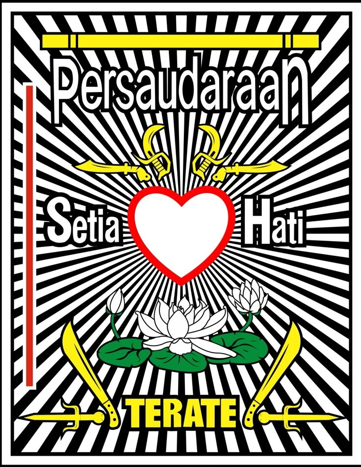

<!DOCTYPE html>
<html lang="id" class="antialiased">
<head>
<meta charset="UTF-8">
<meta name="viewport" content="width=device-width, initial-scale=1.0, maximum-scale=1.0, user-scalable=no">
<title>TeratePay - PSHT</title>

<script src="https://cdn.tailwindcss.com"></script>
<link href="https://fonts.googleapis.com/css2?family=Plus+Jakarta+Sans:wght@400;500;600;700;800;900&display=swap" rel="stylesheet">
<script src="https://unpkg.com/lucide@0.292.0"></script>
<script src="https://unpkg.com/vue@3.3.4/dist/vue.global.prod.js"></script>
<script src="https://cdn.jsdelivr.net/npm/chart.js"></script>
<script src="https://cdnjs.cloudflare.com/ajax/libs/html2canvas/1.4.1/html2canvas.min.js"></script>
<script src="config.js"></script>
<script src="https://cdn.jsdelivr.net/npm/@supabase/supabase-js@2"></script>

<style>
    /* ===== GLOBAL SHARED STYLE ===== */
    body {
        font-family: 'Plus Jakarta Sans', sans-serif;
        background-color: #f8fafc;
        color: #0f172a;
        -webkit-tap-highlight-color: transparent;
        overflow-x: hidden;
        margin: 0;
    }
    html { scroll-behavior: smooth; scroll-padding-top: 110px; }
    [v-cloak] { display: none !important; }
    canvas { touch-action: none; }

    /* ===== PER-VIEW SCOPED STYLE (digenerate dari tiap halaman lama) ===== */
.view-index .mesh-bg {

            position: fixed; top: 0; left: 0; width: 100vw; height: 100vh; z-index: -1;

            background-image: 

                radial-gradient(at 80% 0%, hsla(160, 80%, 75%, 0.4) 0px, transparent 50%),

                radial-gradient(at 0% 50%, hsla(210, 90%, 80%, 0.4) 0px, transparent 50%),

                radial-gradient(at 80% 100%, hsla(280, 80%, 85%, 0.4) 0px, transparent 50%);

            filter: blur(60px);

            opacity: 0.8;

        }
.view-index .glass-card { 

            background: rgba(255, 255, 255, 0.75); 

            backdrop-filter: blur(24px); 

            -webkit-backdrop-filter: blur(24px);

            border: 1px solid rgba(255, 255, 255, 0.9); 

            box-shadow: 0 20px 40px -15px rgba(0,0,0,0.05); 

        }
.view-index .glass-nav {

            background: rgba(255, 255, 255, 0.85);

            backdrop-filter: blur(20px);

            -webkit-backdrop-filter: blur(20px);

            border: 1px solid rgba(255, 255, 255, 0.8);

            box-shadow: 0 10px 30px -10px rgba(0,0,0,0.08);

        }
.view-index .no-scrollbar::-webkit-scrollbar { display: none; }
.view-index [v-cloak] { display: none !important; }
.view-index .fade-enter-active, .view-index .fade-leave-active { transition: opacity 0.5s ease, transform 0.5s ease; }
.view-index .fade-enter-from, .view-index .fade-leave-to { opacity: 0; transform: translateY(20px); }
.view-index .modal-enter-active, .view-index .modal-leave-active { transition: opacity 0.4s ease, transform 0.4s cubic-bezier(0.175, 0.885, 0.32, 1.275); }
.view-index .modal-enter-from, .view-index .modal-leave-to { opacity: 0; transform: scale(0.95) translateY(10px); }
@keyframes float__index { 0%, 100% { transform: translateY(0); } 50% { transform: translateY(-15px); } }
.view-index .animate-float { animation: float__index 6s ease-in-out infinite; }
@keyframes blob__index { 0% { transform: scale(1); } 50% { transform: scale(1.05); } 100% { transform: scale(1); } }
.view-index .animate-blob { animation: blob__index 8s infinite alternate; }
.view-index .marquee-container { overflow: hidden; white-space: nowrap; width: 100%; display: flex; align-items: center; height: 2.25rem; }
.view-index .marquee-content.flex { display: inline-flex !important; flex-wrap: nowrap !important; width: max-content; animation: marquee__index 25s linear infinite; padding-left: 100%; white-space: nowrap; }
.view-index .marquee-content.flex > * { flex-shrink: 0; }
@keyframes marquee__index { 0% { transform: translate(0, 0); } 100% { transform: translate(-100%, 0); } }
.view-index .dropdown-menu { opacity: 0; visibility: hidden; transform: translateY(10px); transition: all 0.3s ease; }
.view-index .group:hover .dropdown-menu { opacity: 1; visibility: visible; transform: translateY(0); }
.view-index .gallery-container { overflow: hidden; white-space: nowrap; position: relative; width: 100%; padding: 10px 0; }
.view-index .gallery-container::before, .view-index .gallery-container::after { content: ""; position: absolute; top: 0; width: 150px; height: 100%; z-index: 2; }
.view-index .gallery-container::before { left: 0; background: linear-gradient(to right, #f8fafc 0%, transparent 100%); }
.view-index .gallery-container::after { right: 0; background: linear-gradient(to left, #f8fafc 0%, transparent 100%); }
.view-index .gallery-track { display: inline-flex; gap: 1.5rem; animation: scroll-gallery__index 35s linear infinite; }
.view-index .gallery-track:hover { animation-play-state: paused; }
.view-index .gallery-item { width: 280px; height: 200px; border-radius: 1.5rem; overflow: hidden; position: relative; flex-shrink: 0; box-shadow: 0 10px 25px -5px rgba(0,0,0,0.1); transition: transform 0.3s ease; cursor: pointer; }
.view-index .gallery-item:hover { transform: scale(1.05) translateY(-5px); z-index: 10; }
.view-index .gallery-item img { width: 100%; height: 100%; object-fit: cover; transition: transform 0.5s ease; }
.view-index .gallery-item:hover img { transform: scale(1.1); }
.view-index .gallery-overlay { position: absolute; bottom: 0; left: 0; right: 0; background: linear-gradient(to top, rgba(15,23,42,0.9), transparent); padding: 20px 15px 15px; color: white; font-weight: 800; font-size: 0.875rem; opacity: 0; transform: translateY(10px); transition: all 0.3s ease; }
.view-index .gallery-item:hover .gallery-overlay { opacity: 1; transform: translateY(0); }
@keyframes scroll-gallery__index { 0% { transform: translateX(0); } 100% { transform: translateX(-50%); } }
.view-kasir .mesh-bg { position: fixed; top: 0; left: 0; width: 100vw; height: 100vh; z-index: -5; background-image: radial-gradient(at 0% 0%, hsla(160, 80%, 75%, 0.3) 0px, transparent 50%), radial-gradient(at 100% 100%, hsla(210, 90%, 80%, 0.3) 0px, transparent 50%); filter: blur(40px); }
.view-kasir .no-scrollbar::-webkit-scrollbar { display: none; }
.view-kasir .glass-panel { background: rgba(255, 255, 255, 0.85); backdrop-filter: blur(24px); border: 1px solid rgba(255, 255, 255, 0.9); box-shadow: 0 20px 40px -15px rgba(0,0,0,0.05); position: relative; z-index: 10; }
.view-kasir .receipt-paper { background: #ffffff; color: #334155; font-family: 'Courier New', Courier, monospace; width: 100%; max-width: 340px; margin: 0 auto; padding: 25px 20px; position: relative; border-radius: 1.5rem; border: 1px solid #f1f5f9; box-shadow: 0 15px 35px -10px rgba(0,0,0,0.08); background-image: radial-gradient(#e2e8f0 1px, transparent 1px); background-size: 20px 20px; }
.view-kasir .dashed-line { border-top: 2px dashed #cbd5e1; margin: 12px 0; }
.view-kasir .flex-between { display: flex; justify-content: space-between; align-items: flex-start; gap: 10px; }
.view-kasir [v-cloak] { display: none !important; }
.view-kasir .fade-enter-active, .view-kasir .fade-leave-active { transition: opacity 0.3s ease, transform 0.3s ease; }
.view-kasir .fade-enter-from, .view-kasir .fade-leave-to { opacity: 0; transform: translateY(10px); }
.view-portal .mesh-bg {

            position: fixed; top: 0; left: 0; width: 100vw; height: 100vh; z-index: -1;

            background-image: 

                radial-gradient(at 10% 0%, hsla(160, 80%, 75%, 0.4) 0px, transparent 50%),

                radial-gradient(at 90% 10%, hsla(210, 90%, 80%, 0.4) 0px, transparent 50%),

                radial-gradient(at 50% 90%, hsla(280, 80%, 85%, 0.4) 0px, transparent 50%);

            filter: blur(40px);

        }
.view-portal .glass-card { 

            background: rgba(255, 255, 255, 0.7); 

            backdrop-filter: blur(20px); 

            -webkit-backdrop-filter: blur(20px);

            border: 1px solid rgba(255, 255, 255, 0.9); 

            box-shadow: 0 10px 40px -10px rgba(0,0,0,0.03); 

        }
.view-portal .no-scrollbar::-webkit-scrollbar { display: none; }
.view-portal [v-cloak] { display: none !important; }
.view-portal .progress-glow { box-shadow: 0 0 15px rgba(16, 185, 129, 0.3); }
.view-portal .fade-enter-active, .view-portal .fade-leave-active { transition: opacity 0.4s ease; }
.view-portal .fade-enter-from, .view-portal .fade-leave-to { opacity: 0; transform: scale(0.95); }
@keyframes shimmer__portal { 0% { transform: translateX(-100%); } 100% { transform: translateX(100%); } }
.view-portal .animate-shimmer { animation: shimmer__portal 2.5s infinite linear; }
.view-report .mesh-bg {
            position: fixed; top: 0; left: 0; width: 100vw; height: 100vh; z-index: -1;
            background-color: #f8fafc;
            background-image: 
                radial-gradient(at 0% 0%, hsla(167, 100%, 74%, 0.15) 0px, transparent 50%),
                radial-gradient(at 100% 0%, hsla(220, 100%, 77%, 0.15) 0px, transparent 50%),
                radial-gradient(at 100% 100%, hsla(276, 100%, 82%, 0.15) 0px, transparent 50%);
        }
.view-report .glass-card { background: rgba(255, 255, 255, 0.85); backdrop-filter: blur(16px); border: 1px solid rgba(255, 255, 255, 0.4); }
.view-report .ai-glow { box-shadow: 0 0 30px rgba(16, 185, 129, 0.15); border: 1px solid rgba(16, 185, 129, 0.2); }
.view-report .no-scrollbar::-webkit-scrollbar { display: none; }
.view-report [v-cloak] { display: none !important; }
.view-report .progress-bar-animated { transition: width 1.5s cubic-bezier(0.4, 0, 0.2, 1); }
@keyframes fadeIn__report { from { opacity: 0; transform: translateY(10px); } to { opacity: 1; transform: translateY(0); } }
.view-report .animate-fade-in { animation: fadeIn__report 0.5s ease-out forwards; }
.view-report .prose ul { list-style-type: disc; padding-left: 1.5em; margin-top: 0.5em; }
.view-report .prose li { margin-bottom: 0.75em; }
.view-report .prose strong { color: #047857; }
.view-setting .mesh-bg {

            position: fixed; top: 0; left: 0; width: 100vw; height: 100vh; z-index: -1;

            background-image: 

                radial-gradient(at 10% 0%, hsla(160, 80%, 75%, 0.4) 0px, transparent 50%),

                radial-gradient(at 90% 10%, hsla(210, 90%, 80%, 0.4) 0px, transparent 50%),

                radial-gradient(at 50% 90%, hsla(280, 80%, 85%, 0.4) 0px, transparent 50%);

            filter: blur(40px);

        }
.view-setting .glass-panel {

            background: rgba(255, 255, 255, 0.85);

            backdrop-filter: blur(24px);

            border: 1px solid rgba(255, 255, 255, 0.9);

            box-shadow: 0 20px 40px -15px rgba(0,0,0,0.05);

        }
.view-setting [v-cloak] { display: none !important; }
.view-setting .fade-enter-active, .view-setting .fade-leave-active { transition: opacity 0.3s ease, transform 0.3s ease; }
.view-setting .fade-enter-from, .view-setting .fade-leave-to { opacity: 0; transform: translateY(-10px); }
.view-daftar .mesh-bg { position: fixed; top: 0; left: 0; width: 100vw; height: 100vh; z-index: -1; background: radial-gradient(circle at 10% 20%, rgba(16, 185, 129, 0.08) 0px, transparent 40%), radial-gradient(circle at 90% 80%, rgba(20, 184, 166, 0.06) 0px, transparent 40%), #f8fafc; }
.view-daftar .glass-card { background: rgba(255, 255, 255, 0.8); backdrop-filter: blur(24px); -webkit-backdrop-filter: blur(24px); border: 1px solid rgba(15, 23, 42, 0.08); box-shadow: 0 25px 50px -12px rgba(15, 23, 42, 0.08); }
.view-daftar canvas { touch-action: none; background-color: #f1f5f9; border-radius: 1.25rem; width: 100%; height: 160px; border: 2px dashed #cbd5e1; cursor: crosshair; }
.view-daftar .fade-enter-active, .view-daftar .fade-leave-active { transition: all 0.25s cubic-bezier(0.4, 0, 0.2, 1); }
.view-daftar .fade-enter-from { opacity: 0; transform: translateX(20px); }
.view-daftar .fade-leave-to { opacity: 0; transform: translateX(-20px); }
.view-daftar .input-glow:focus { border-color: #059669; box-shadow: 0 0 0 4px rgba(5, 150, 105, 0.12); }
.view-daftar .custom-scroll::-webkit-scrollbar { width: 5px; }
.view-daftar .custom-scroll::-webkit-scrollbar-track { background: rgba(0,0,0,0.02); border-radius: 10px; }
.view-daftar .custom-scroll::-webkit-scrollbar-thumb { background: rgba(0,0,0,0.1); border-radius: 10px; }
.view-daftar .custom-scroll::-webkit-scrollbar-thumb:hover { background: rgba(5, 150, 105, 0.3); }
.view-daftarprivat .mesh-bg { position: fixed; top: 0; left: 0; width: 100vw; height: 100vh; z-index: -1; background: radial-gradient(circle at 10% 20%, rgba(20, 184, 166, 0.08) 0px, transparent 40%), radial-gradient(circle at 90% 80%, rgba(16, 185, 129, 0.06) 0px, transparent 40%), #f8fafc; }
.view-daftarprivat .glass-card { background: rgba(255, 255, 255, 0.8); backdrop-filter: blur(24px); -webkit-backdrop-filter: blur(24px); border: 1px solid rgba(15, 23, 42, 0.08); box-shadow: 0 25px 50px -12px rgba(15, 23, 42, 0.08); }
.view-daftarprivat canvas { touch-action: none; background-color: #f1f5f9; border-radius: 1.25rem; width: 100%; height: 160px; border: 2px dashed #cbd5e1; cursor: crosshair; }
.view-daftarprivat .fade-enter-active, .view-daftarprivat .fade-leave-active { transition: all 0.25s cubic-bezier(0.4, 0, 0.2, 1); }
.view-daftarprivat .fade-enter-from { opacity: 0; transform: translateX(20px); }
.view-daftarprivat .fade-leave-to { opacity: 0; transform: translateX(-20px); }
.view-daftarprivat .input-glow:focus { border-color: #0d9488; box-shadow: 0 0 0 4px rgba(13, 148, 136, 0.12); }
.view-daftarprivat .custom-scroll::-webkit-scrollbar { width: 5px; }
.view-daftarprivat .custom-scroll::-webkit-scrollbar-track { background: rgba(0,0,0,0.02); border-radius: 10px; }
.view-daftarprivat .custom-scroll::-webkit-scrollbar-thumb { background: rgba(0,0,0,0.1); border-radius: 10px; }
.view-daftarprivat .custom-scroll::-webkit-scrollbar-thumb:hover { background: rgba(13, 148, 136, 0.3); }
</style>
</head>
<body>
    <div id="app" v-cloak></div>

    <!-- ============================================================= -->
    <!-- TEMPLATE TIAP VIEW (dipindah dari file .html terpisah dulunya) -->
    <!-- ============================================================= -->

    <script type="text/x-template" id="tpl-index">
<div class="view-index selection:bg-emerald-500 selection:text-white w-full relative z-10 flex flex-col min-h-screen">
<div class="mesh-bg animate-blob"></div>


        

        <div class="bg-slate-950 border-b border-slate-800 text-[10px] sm:text-[11px] font-bold tracking-widest uppercase py-2.5 marquee-container relative z-50 shadow-md">

            <div class="absolute left-0 top-0 bottom-0 w-12 bg-gradient-to-r from-slate-950 to-transparent z-10 pointer-events-none"></div>

            <div class="absolute right-0 top-0 bottom-0 w-12 bg-gradient-to-l from-slate-950 to-transparent z-10 pointer-events-none"></div>

            

            <div class="marquee-content flex items-center gap-10 text-slate-300">

                <div class="flex items-center gap-2 bg-slate-800/80 px-3.5 py-1 rounded-full border border-slate-700/60 normal-case tracking-normal shrink-0">

                    <div class="w-1.5 h-1.5 rounded-full bg-emerald-400 shadow-[0_0_8px_rgba(52,211,153,0.8)]"></div>

                    <span class="text-[11px] font-medium text-slate-200">Selamat Datang di Rayon Japanan</span>

                </div>


                <span class="flex items-center gap-2">

                    <span class="text-emerald-400">Ranting Kemlagi</span> <span class="text-white">Cabang Mojokerto</span>

                </span>

                

                <i data-lucide="flower-2" class="w-4 h-4 text-amber-500 shrink-0"></i>

                <span class="text-amber-400">MEMAYU HAYUNING BAWONO</span>

                <i data-lucide="shield" class="w-4 h-4 text-emerald-500 shrink-0"></i>

                <span class="text-slate-400">SELAMA MATAHARI TERBIT DARI TIMUR, DAN SELAMA BUMI MASIH DIHUNI OLEH MANUSIA, SELAMA ITU PULA PERSAUDARAAN SETIA HATI TERATE AKAN TETAP JAYA, KEKAL, ABADI UNTUK SELAMA-LAMANYA.</span>


                <template v-if="judulPengumuman || isiPengumuman">

                    <i data-lucide="sparkles" class="w-4 h-4 text-emerald-500 shrink-0"></i>

                    <div class="flex items-center gap-2 px-3.5 py-1 rounded-full border normal-case tracking-normal shrink-0"

                         :class="tipePengumuman === 'penting' ? 'bg-rose-950/80 border-rose-800/60' : 'bg-slate-800/80 border-slate-700/60'">

                        <div class="w-1.5 h-1.5 rounded-full shadow-[0_0_8px_rgba(255,255,255,0.8)]" :class="tipePengumuman === 'penting' ? 'bg-rose-400' : 'bg-emerald-400'"></div>

                        <span class="text-[11px] font-bold uppercase tracking-wider" :class="tipePengumuman === 'penting' ? 'text-rose-100' : 'text-slate-200'">{{ judulPengumuman }}</span>

                    </div>

                    <span class="text-white font-medium">{{ isiPengumuman }}</span>

                </template>

            </div>

        </div>


        <div class="max-w-7xl mx-auto w-full px-4 sm:px-6 py-4">

            

            <header class="flex justify-between items-center mb-10 animate-fade-in glass-nav p-3 sm:p-4 rounded-[2rem] sticky top-4 z-50">

                <div class="flex items-center gap-3 pl-2">

                    

                    <div>

                        <h1 class="text-xl font-black tracking-tight text-slate-800 leading-none">TeratePay<span class="text-emerald-500">.</span></h1>

                        <p class="text-[9px] font-bold text-slate-500 uppercase tracking-widest mt-1">Rayon Japanan</p>

                    </div>

                </div>


                <nav class="hidden md:flex items-center gap-1">

                    <a href="#" @click.prevent="scrollToTop" class="px-4 py-2 text-sm font-bold text-slate-600 hover:text-emerald-600 transition-colors rounded-lg hover:bg-emerald-50">Beranda</a>

                    

                    <div class="relative group">

                        <button class="px-4 py-2 text-sm font-bold text-slate-600 hover:text-emerald-600 transition-colors rounded-lg hover:bg-emerald-50 flex items-center gap-1">

                            Profil <i data-lucide="chevron-down" class="w-4 h-4"></i>

                        </button>

                        <div class="absolute top-full left-0 mt-2 w-48 bg-white rounded-2xl shadow-xl border border-slate-100 dropdown-menu p-2 z-50">

                            <a href="#sejarah" @click.prevent="scrollTo('sejarah')" class="block px-4 py-2.5 text-xs font-bold text-slate-600 hover:bg-slate-50 rounded-xl hover:text-emerald-600 transition-colors">Sejarah Singkat</a>

                            <a href="#visimisi" @click.prevent="scrollTo('visimisi')" class="block px-4 py-2.5 text-xs font-bold text-slate-600 hover:bg-slate-50 rounded-xl hover:text-emerald-600 transition-colors">Visi & Misi</a>

                            <a href="#leluhur" @click.prevent="scrollTo('leluhur')" class="block px-4 py-2.5 text-xs font-bold text-slate-600 hover:bg-slate-50 rounded-xl hover:text-emerald-600 transition-colors">Tokoh Leluhur</a>

                            <a href="#lagu" @click.prevent="scrollTo('lagu')" class="block px-4 py-2.5 text-xs font-bold text-slate-600 hover:bg-slate-50 rounded-xl hover:text-emerald-600 transition-colors">Mars & Hymne</a>

                        </div>

                    </div>

                    

                    <a href="#agenda" @click.prevent="scrollTo('agenda')" class="px-4 py-2 text-sm font-bold text-slate-600 hover:text-emerald-600 transition-colors rounded-lg hover:bg-emerald-50">Jadwal</a>

                    <a href="#faq" @click.prevent="scrollTo('faq')" class="px-4 py-2 text-sm font-bold text-slate-600 hover:text-emerald-600 transition-colors rounded-lg hover:bg-emerald-50">FAQ</a>                    

                </nav>


                <div class="flex items-center gap-3">

                    <button @click="bukaModalLogin('pelatih')" class="w-10 sm:w-auto h-10 sm:px-4 flex items-center justify-center bg-slate-100 hover:bg-slate-200 rounded-xl text-slate-700 transition-all border border-slate-200/60 active:scale-95 shrink-0 gap-2">

                        <i data-lucide="lock" class="w-4 h-4 text-slate-500"></i>

                        <span class="hidden sm:block text-xs font-bold whitespace-nowrap">Portal Pelatih</span>

                    </button>

                    <button @click="bukaModalLogin('siswa')" class="h-10 px-4 sm:px-5 bg-slate-900 hover:bg-slate-800 rounded-xl text-white transition-all shadow-md active:scale-95 flex items-center justify-center gap-2 shrink-0">

                        <i data-lucide="user" class="w-4 h-4 text-emerald-400"></i>

                        <span class="text-xs font-bold whitespace-nowrap">Login<span class="hidden sm:inline"> Siswa</span></span>

                    </button>

                </div>

            </header>


            <section class="flex flex-col lg:flex-row items-center justify-between gap-12 lg:gap-16 mb-24 mt-8">

                <div class="w-full lg:w-1/2 space-y-6 text-center lg:text-left animate-fade-in">

                    <div class="inline-flex items-center gap-2 px-4 py-2 bg-emerald-50 border border-emerald-100 rounded-full mb-2 shadow-sm">

                        <span class="relative flex h-2.5 w-2.5"><span class="animate-ping absolute inline-flex h-full w-full rounded-full bg-emerald-400 opacity-75"></span><span class="relative inline-flex rounded-full h-2.5 w-2.5 bg-emerald-500"></span></span>

                        <p class="text-[10px] font-black text-emerald-700 uppercase tracking-widest">Persaudaraan Setia Hati Terate</p>

                    </div>

                    <h2 class="text-5xl sm:text-6xl lg:text-7xl font-black text-slate-800 tracking-tighter leading-[1.05]">

                        Ekosistem <br>

                        <span class="text-transparent bg-clip-text bg-gradient-to-r from-emerald-500 to-teal-400">Pencak Silat</span> Modern.

                    </h2>

                    <p class="text-slate-600 text-base sm:text-lg leading-relaxed max-w-lg mx-auto lg:mx-0 font-medium">

                        Pantau progres tabungan siswa, jadwal latihan, dan informasi ranting secara real-time. Transparan, terintegrasi, dan mudah diakses untuk seluruh dulur-dulur PSHT.

                    </p>

                    <div class="pt-4 flex items-center gap-4 justify-center lg:justify-start">

                        <button @click="scrollTo('zonaDaftar')" class="px-8 py-4 bg-emerald-500 hover:bg-emerald-400 text-white font-black rounded-2xl transition-all shadow-[0_15px_30px_-10px_rgba(16,185,129,0.5)] flex items-center justify-center gap-2 active:scale-95">

                            Daftar Siswa Baru <i data-lucide="arrow-right" class="w-5 h-5"></i>

                        </button>

                    </div>

                </div>


                <div class="w-full lg:w-5/12 relative animate-float">

                    <div class="absolute -top-10 -right-10 w-64 h-64 bg-teal-400/20 blur-3xl rounded-full"></div>

                    <div class="glass-card p-8 rounded-[3rem] relative z-10 border border-white">

                        <div class="flex justify-between items-center mb-8">

                            <div>

                                <span class="text-[10px] font-black text-slate-400 tracking-widest uppercase block mb-1">Live Countdown</span>

                                <h3 class="text-xl font-black text-slate-800">Bulan Suro 2027</h3>

                            </div>

                            <div class="w-12 h-12 bg-slate-900 rounded-2xl flex items-center justify-center shadow-lg">

                                <i data-lucide="flame" class="w-6 h-6 text-emerald-400"></i>

                            </div>

                        </div>

                        <div class="bg-gradient-to-br from-slate-800 to-slate-900 p-6 rounded-3xl text-white shadow-lg relative overflow-hidden mb-6">

                            <p class="text-sm text-slate-300 font-medium mb-1">Waktu Tersisa Pengesahan</p>

                            <div class="flex items-baseline gap-2">

                                <span class="text-5xl font-black tracking-tighter text-emerald-400">{{ sisaHariSuro }}</span>

                                <span class="text-sm font-bold text-slate-300">Hari Lagi</span>

                            </div>

                        </div>

                    </div>

                </div>

            </section>

            

            <section id="zonaDaftar" class="mb-24 scroll-mt-24 min-h-[400px]">

                <transition name="modal" mode="out-in">

                    <div v-if="statusPendaftaran" key="buka" class="glass-card rounded-[3rem] overflow-hidden border border-white flex flex-col md:flex-row">

                        <div class="w-full md:w-1/2 relative min-h-[300px] bg-slate-200 cursor-pointer" @click="bukaPosterFull">

                            

                            <div class="absolute inset-0 bg-gradient-to-t from-slate-900/80 to-transparent flex items-end p-8">

                                <h3 class="text-3xl font-black text-white leading-tight">Mari Bergabung<br>Menjadi Warga SH Terate.</h3>

                            </div>

                        </div>

                        <div class="w-full md:w-1/2 p-8 lg:p-12 bg-white flex flex-col justify-center">

                            <h4 class="text-[10px] font-black text-emerald-500 tracking-widest uppercase mb-2">Pendaftaran Dibuka</h4>

                            <h3 class="text-3xl font-black text-slate-800 tracking-tight mb-6">Pilih Jalur Latihan</h3>

                            

                            <div class="space-y-4">

                                <a href="#/daftar" class="block p-5 border-2 border-slate-100 rounded-2xl hover:border-emerald-500 hover:bg-emerald-50 hover:shadow-md transition-all group active:scale-[0.98] cursor-pointer">

                                    <div class="flex items-center justify-between mb-2">

                                        <div class="flex items-center gap-2">

                                            <i data-lucide="users" class="text-emerald-500 w-5 h-5"></i>

                                            <h5 class="font-black text-slate-800 text-lg group-hover:text-emerald-700">Jalur Reguler</h5>

                                        </div>

                                        <div class="w-8 h-8 rounded-full bg-emerald-100 flex items-center justify-center group-hover:bg-emerald-500 transition-colors">

                                            <i data-lucide="arrow-right" class="text-emerald-600 w-4 h-4 group-hover:text-white group-hover:translate-x-0.5 transition-all"></i>

                                        </div>

                                    </div>

                                    <p class="text-sm text-slate-500 font-medium mt-1">Bagi pelajar dan pemuda. Latihan rutin dengan jadwal reguler rayon.</p>

                                </a>

                                

                                <a href="#/daftar-privat" class="block p-5 border-2 border-slate-100 rounded-2xl hover:border-blue-500 hover:bg-blue-50 hover:shadow-md transition-all group active:scale-[0.98] cursor-pointer">

                                    <div class="flex items-center justify-between mb-2">

                                        <div class="flex items-center gap-2">

                                            <i data-lucide="briefcase" class="text-blue-500 w-5 h-5"></i>

                                            <h5 class="font-black text-slate-800 text-lg group-hover:text-blue-700">Jalur Privat (Dewasa)</h5>

                                        </div>

                                        <div class="w-8 h-8 rounded-full bg-blue-100 flex items-center justify-center group-hover:bg-blue-600 transition-colors">

                                            <i data-lucide="arrow-right" class="text-blue-600 w-4 h-4 group-hover:text-white group-hover:translate-x-0.5 transition-all"></i>

                                        </div>

                                    </div>

                                    <p class="text-sm text-slate-500 font-medium mt-1">Waktu fleksibel, dikhususkan untuk warga usia 25+ atau yang sudah bekerja/berkeluarga.</p>

                                </a>

                            </div>

                        </div>

                    </div>


                    <div v-else key="tutup" class="glass-card rounded-[3rem] p-10 lg:p-16 border border-white text-center relative overflow-hidden flex flex-col items-center justify-center shadow-lg">

                        <div class="absolute top-0 left-0 w-full h-1.5 bg-gradient-to-r from-rose-500 via-amber-500 to-rose-500"></div>

                        

                        <div class="w-24 h-24 bg-white rounded-xl flex items-center justify-center shadow-md mb-4 border border-slate-50 relative">

                            <div class="absolute -right-2 -top-2 w-6 h-6 bg-rose-500 rounded-full animate-ping opacity-30"></div>

                            <div class="absolute -right-1 -top-1 w-4 h-4 bg-rose-500 rounded-full z-10 border-2 border-white"></div>

                            

                        </div>


                        <h4 class="text-[11px] font-black text-rose-500 tracking-widest uppercase mb-3">Portal Penerimaan Calon Warga Baru</h4>

                        <h3 class="text-3xl md:text-4xl font-black text-slate-800 tracking-tight mb-5 leading-tight">Pendaftaran Periode Ini Telah Ditutup</h3>

                        

                        <p class="text-sm md:text-base text-slate-600 max-w-2xl mx-auto leading-relaxed font-medium mb-8">

                            Terima kasih atas tingginya antusiasme masyarakat. Waktu pendaftaran calon siswa Persaudaraan Setia Hati Terate Rayon Japanan untuk periode tahun ini telah resmi ditutup karena telah melewati batas bulan penerimaan. <br><br>

                            Persiapkan fisik dan mental Anda, sampai jumpa di pembukaan pendaftaran tahun depan! Mari bersama merawat semangat persaudaraan dan keluhuran budi pekerti. <br>

                            <span class="italic font-bold text-slate-900 mt-2 inline-block">"Memayu Hayuning Bawono"</span>

                        </p>

                        

                        <a :href="'https://wa.me/' + noWa + '?text=Halo%20Pelatih,%20kapan%20pendaftaran%20siswa%20PSHT%20gelombang%20selanjutnya%20dibuka%20kembali?'" target="_blank" class="px-8 py-3.5 bg-slate-900 hover:bg-slate-800 text-white font-bold rounded-2xl transition-all shadow-xl active:scale-95 flex items-center gap-2 text-sm border border-slate-700">

                            <i data-lucide="bell-ring" class="w-4 h-4 text-amber-400"></i> Kabari Saya Jika Dibuka Kembali

                        </a>

                    </div>

                </transition>

            </section>


            <section id="sejarah" class="mb-24 max-w-6xl mx-auto scroll-mt-24 px-4">

                <div class="text-center max-w-2xl mx-auto mb-12 space-y-3">

                    <div class="inline-flex items-center gap-1.5 px-3 py-1 bg-amber-500/10 text-amber-600 rounded-full text-[10px] font-black tracking-widest uppercase border border-amber-200/40">

                        <i data-lucide="history" class="w-3 h-3"></i> Jejak Warisan Tradisi

                    </div>

                    <h2 class="text-3xl sm:text-4xl font-black text-slate-800 tracking-tight">Kilas Sejarah Rayon Japanan</h2>

                    <p class="text-xs sm:text-sm text-slate-400 font-medium">Merawat ingatan perjuangan para pendahulu, mengembangkan pencak silat dari masa ke masa.</p>

                </div>


                <div class="grid grid-cols-1 md:grid-cols-3 gap-6 relative">

                    <div class="hidden md:block absolute top-1/2 left-4 right-4 h-0.5 bg-dashed bg-slate-200 -translate-y-16 z-0"></div>


                    <div class="glass-card bg-white/80 border border-slate-200/60 p-6 rounded-[2rem] shadow-xs relative z-10 hover:border-amber-400 transition-all duration-300 group flex flex-col justify-between min-h-[250px]">

                        <div>

                            <div class="text-5xl font-black text-slate-200 group-hover:text-amber-500/20 transition-colors mb-4 font-mono select-none">1992</div>

                            <span class="text-[10px] font-black uppercase tracking-wider text-amber-600 bg-amber-50 px-2.5 py-1 rounded-md border border-amber-100">Fase Perintisan</span>

                            <h4 class="text-lg font-black text-slate-800 mt-3 mb-2">Batu Pondasi Pertama</h4>

                            <p class="text-xs font-medium text-slate-500 leading-relaxed">

                                Didirikan resmi oleh <strong class="text-slate-800">Mas Khasanan (Rembu Tengah)</strong>. Dalam babak awal perjuangan ini, beliau dibantu oleh <strong class="text-slate-700">Mas Dadang (Gedeg)</strong> dan <strong class="text-slate-700">Alm. Taufik (Jetis)</strong> untuk menyebarkan ajaran di tanah Japanan.

                            </p>

                        </div>

                    </div>


                    <div class="glass-card bg-slate-950 p-6 rounded-[2rem] shadow-xl relative z-10 border border-slate-800 group overflow-hidden flex flex-col justify-between min-h-[250px]">

                        <div class="absolute -right-6 -top-6 w-24 h-24 bg-amber-500/10 blur-xl rounded-full"></div>

                        <div>

                            <div class="text-5xl font-black text-slate-800 group-hover:text-amber-500/20 transition-colors mb-4 font-mono select-none">1995</div>

                            <span class="text-[10px] font-black uppercase tracking-wider text-amber-400 bg-slate-900 px-2.5 py-1 rounded-md border border-slate-800">Malam Sakral</span>

                            <h4 class="text-lg font-black text-white mt-3 mb-2">Pengesahan Perdana</h4>

                            <p class="text-xs font-medium text-slate-400 leading-relaxed mb-4">

                                Buah keringat perintisan melahirkan angkatan warga pertama yang disahkan, yaitu: 

                                <span class="inline-flex flex-wrap gap-1 mt-1 font-bold text-amber-300">

                                    Mas Nanang, Mas Yudi, Mas Marji, Mbak Murti, dan Mas Agus.

                                </span>

                            </p>

                        </div>

                        <div class="pt-3 border-t border-slate-800/80 flex items-center gap-2 text-[11px] font-semibold text-slate-400">

                            <i data-lucide="map-pin" class="w-3.5 h-3.5 text-rose-400 shrink-0"></i>

                            <span>Tempat Latihan Pertama: <strong class="text-slate-200">Balai Dukuh Rembu Kidul</strong></span>

                        </div>

                    </div>


                    <div class="glass-card bg-white/80 border border-slate-200/60 p-6 rounded-[2rem] shadow-xs relative z-10 hover:border-emerald-500 transition-all duration-300 group flex flex-col justify-between min-h-[250px]">

                        <div>

                            <div class="text-5xl font-black text-slate-200 group-hover:text-emerald-500/20 transition-colors mb-4 font-mono select-none">NOW</div>

                            <span class="text-[10px] font-black uppercase tracking-wider text-emerald-600 bg-emerald-50 px-2.5 py-1 rounded-md border border-emerald-100">Keberlanjutan</span>

                            <h4 class="text-lg font-black text-slate-800 mt-3 mb-2">Era Transformasi Digital</h4>

                            <p class="text-xs font-medium text-slate-500 leading-relaxed">

                                Terus berkembang pesat, mencetak generasi pesilat berprestasi dan berkarakter, hingga kini beradaptasi di era modern lewat ekosistem keuangan digital <strong class="text-emerald-600">TeratePay</strong>.

                            </p>

                        </div>

                    </div>

                </div>

            </section>


            <section id="donasi" class="mb-24 max-w-5xl mx-auto scroll-mt-24 px-4">

                <div class="bg-gradient-to-br from-slate-900 via-slate-950 to-slate-900 rounded-[3rem] p-8 lg:p-12 shadow-[0_30px_60px_-15px_rgba(15,23,42,0.3)] border border-slate-800 relative overflow-hidden group">

                    <div class="absolute right-0 top-0 w-96 h-96 bg-emerald-500/10 blur-3xl rounded-full pointer-events-none transition-all duration-700 group-hover:bg-emerald-500/15"></div>


                    <div class="grid grid-cols-1 lg:grid-cols-12 gap-8 items-center">

                        <div class="lg:col-span-6 space-y-4 text-center lg:text-left">

                            <div class="inline-flex items-center gap-1.5 px-3 py-1 bg-emerald-500/10 text-emerald-400 rounded-full text-[10px] font-black tracking-widest uppercase border border-emerald-500/20">

                                <i data-lucide="heart-handshake" class="w-3 h-3"></i> Social Impact Hub

                            </div>

                            <h2 class="text-3xl font-black text-white tracking-tight leading-none">

                                Dukung Pengembangan <br><span class="text-transparent bg-clip-text bg-gradient-to-r from-emerald-400 to-teal-300">Fasilitas Rayon.</span>

                            </h2>

                            <p class="text-xs sm:text-sm text-slate-400 font-medium leading-relaxed">

                                Donasi dan sumbangan sukarela Anda dialokasikan penuh untuk pemeliharaan tempat latihan, pengadaan perlengkapan beladiri, serta dukungan operasional kegiatan sosial organisasi.

                            </p>

                        </div>


                        <div class="lg:col-span-6 space-y-4">

                            <div class="bg-slate-900/80 border border-slate-800 p-6 rounded-2xl relative">

                                <div class="flex justify-between items-center mb-6 gap-4">

                                    <div>

                                        <span class="text-[9px] font-bold text-slate-500 uppercase tracking-widest block">Bank Transfer (Manual)</span>

                                        <h4 class="text-md font-black text-white mt-0.5">BANK CENTRAL ASIA (BCA)</h4>

                                    </div>

                                    <div class="bg-white/95 px-3 py-1.5 rounded-xl shadow-md border border-white flex items-center justify-center shrink-0 transition-transform duration-300 hover:scale-105">

                                        

                                    </div>

                                </div>

                                

                                <div class="bg-slate-950 border border-slate-800 rounded-xl p-4 flex items-center justify-between gap-4">

                                    <div class="space-y-0.5">

                                        <span class="text-[9px] font-black text-slate-500 uppercase tracking-widest block">Nomor Rekening Resmi</span>

                                        <span class="text-lg font-mono font-black text-emerald-400 tracking-wider">0500711591</span>

                                    </div>

                                    <button @click="copyRekening('0500711591')" class="px-4 py-2.5 rounded-lg text-xs font-bold transition-all duration-300 flex items-center gap-1.5 active:scale-95 shrink-0" :class="statusSalin ? 'bg-emerald-500 text-white shadow-[0_0_15px_rgba(16,185,129,0.4)]' : 'bg-slate-800 text-slate-300 hover:bg-slate-700'">

                                        <i :data-lucide="statusSalin ? 'check' : 'copy'" class="w-3.5 h-3.5"></i>

                                        {{ statusSalin ? 'Tersalin!' : 'Salin' }}

                                    </button>

                                </div>


                                <div class="mt-4 flex justify-between items-center text-[10px] text-slate-500 font-bold">

                                    <span class="flex items-center gap-1 text-slate-400"><i data-lucide="user" class="w-3 h-3 text-slate-500"></i> A.N: FAUZUL MUBIN</span>

                                    <span class="text-emerald-500 flex items-center gap-1"><i data-lucide="shield" class="w-3 h-3"></i> Terverifikasi Keuangan Rayon</span>

                                </div>

                            </div>

                            <div class="text-center">

                                <p class="text-[11px] font-medium text-slate-500">Pastikan nominal dan nama rekening tujuan sudah sesuai sebelum melakukan transfer.</p>

                            </div>

                        </div>            

                    </div>

                </div>

            </section>


            <section id="faq" class="mb-24 max-w-4xl mx-auto scroll-mt-24">

                <div class="text-center mb-10 px-4">

                    <h2 class="text-3xl font-black text-slate-800 tracking-tight">Pertanyaan Populer</h2>

                    <p class="text-sm text-slate-500 font-medium mt-2">Masih ragu? Temukan jawaban dari pertanyaan yang sering diajukan calon siswa.</p>

                </div>

                

                <div class="space-y-3 px-4">

                    <div v-for="(faq, index) in faqs" :key="index" class="bg-white rounded-2xl border border-slate-200 overflow-hidden shadow-sm hover:shadow-md transition-all">

                        <button @click="toggleFaq(index)" class="w-full flex items-center justify-between p-5 text-left bg-slate-50/50 hover:bg-slate-50 transition-colors focus:outline-none">

                            <span class="font-bold text-slate-800 text-sm sm:text-base pr-4">{{ faq.tanya }}</span>

                            <div class="w-8 h-8 rounded-full bg-emerald-50 text-emerald-600 flex items-center justify-center shrink-0 transition-transform duration-300" :class="{'rotate-180 bg-slate-900 text-white': faq.open}">

                                <i data-lucide="chevron-down" class="w-4 h-4"></i>

                            </div>

                        </button>

                        <transition name="fade">

                            <div v-show="faq.open" class="p-5 text-sm text-slate-600 leading-relaxed font-medium bg-white border-t border-slate-100">

                                {{ faq.jawab }}

                            </div>

                        </transition>

                    </div>

                </div>

            </section>


            <section id="visimisi" class="mb-24 scroll-mt-24">

                <div class="text-center mb-12">

                    <h2 class="text-3xl font-black text-slate-800 tracking-tight">Mengenal SH Terate</h2>

                    <p class="text-sm text-slate-500 font-medium mt-2">Berakar pada persaudaraan, bertumbuh pada keluhuran budi.</p>

                </div>


                <div class="grid grid-cols-1 md:grid-cols-2 gap-6 lg:gap-8">

                    <div class="relative glass-card p-8 rounded-[2.5rem] hover:-translate-y-2 transition-transform mt-10 md:mt-10">

                        <div class="absolute -top-10 left-8 w-20 h-20 bg-white rounded-3xl shadow-xl border border-slate-100 flex items-center justify-center p-2 z-20">

                            

                        </div>

                        <div class="pt-10">

                            <h4 class="text-xl font-black text-slate-800 mb-3">Sejarah Singkat</h4>

                            <p class="text-sm text-slate-600 leading-relaxed font-medium">

                                Persaudaraan Setia Hati Terate (PSHT) didirikan pada tahun 1922 oleh Ki Hadjar Hardjo Oetomo di Desa Pilangbango, Madiun. Organisasi ini lahir sebagai wadah perlawanan melawan penjajah sekaligus mendidik bangsa agar merdeka secara fisik dan mental.

                            </p>

                        </div>

                    </div>


                    <div class="relative glass-card p-8 rounded-[2.5rem] bg-slate-900 text-white hover:-translate-y-2 transition-transform shadow-xl shadow-slate-900/20 overflow-hidden md:mt-10">

                        <div class="absolute inset-0 z-0 opacity-20" style="background-image: url('https://www.shterate.com/wp-content/uploads/2020/09/psht-tingkat2-c.jpg'); background-size: cover; background-position: center;"></div>

                        <div class="relative z-10">

                            <div class="mb-6">

                                <div class="w-16 h-16 rounded-3xl bg-slate-800/50 backdrop-blur-md border border-slate-700/50 flex items-center justify-center shadow-inner overflow-hidden">

                                    

                                </div>

                            </div>

                            <h4 class="text-xl font-black text-white mb-3">Tujuan PSHT</h4>

                            <p class="text-sm text-slate-300 leading-relaxed font-medium">

                                Mendidik manusia berbudi pekerti luhur, tahu benar dan salah, serta ikut serta "Memayu Hayuning Bawono" (menjaga kelestarian dan kedamaian dunia). Mengutamakan persaudaraan yang kekal dan abadi.

                            </p>

                        </div>

                    </div>


                    <div id="leluhur" class="glass-card p-8 rounded-[2.5rem] hover:-translate-y-2 transition-transform scroll-mt-24 h-full">

                        <h4 class="text-2xl font-black text-slate-800 mb-8 tracking-tight">Tokoh Leluhur</h4>

                        <div class="space-y-6">

                            <a href="https://www.shterate.com/riwayat-singkat-ki-ngabei-ageng-soerodiwirdjo-eyang-suro/" target="_blank" class="flex items-center gap-4 p-3 rounded-2xl hover:bg-white hover:shadow-md border border-transparent hover:border-slate-100 transition-all group">

                                

                                <div>

                                    <p class="text-sm font-black text-slate-800 group-hover:text-indigo-600 transition-colors">Ki Ngabehi Soerodiwirjo</p>

                                    <p class="text-[9px] font-bold text-slate-400 uppercase tracking-widest">Pendiri SH</p>

                                </div>

                                <i data-lucide="external-link" class="w-3 h-3 ml-auto text-slate-300"></i>

                            </a>


                            <a href="https://psht.or.id/ki-hadjar-hardjo-oetomo/" target="_blank" class="flex items-center gap-4 p-3 rounded-2xl hover:bg-white hover:shadow-md border border-transparent hover:border-slate-100 transition-all group">

                                

                                <div>

                                    <p class="text-sm font-black text-slate-800 group-hover:text-emerald-600 transition-colors">Ki Hadjar Hardjo Oetomo</p>

                                    <p class="text-[9px] font-bold text-slate-400 uppercase tracking-widest">Pendiri PSHT</p>

                                </div>

                                <i data-lucide="external-link" class="w-3 h-3 ml-auto text-slate-300 group-hover:text-emerald-500"></i>

                            </a>


                            <a href="https://psht.or.id/r-m-soetomo-mangkoedjojo/" target="_blank" class="flex items-center gap-4 p-3 rounded-2xl hover:bg-white hover:shadow-md border border-transparent hover:border-slate-100 transition-all group">

                                

                                <div>

                                    <p class="text-sm font-black text-slate-800 group-hover:text-blue-600 transition-colors">RM. Soetomo Mangkoedjojo</p>

                                    <p class="text-[9px] font-bold text-slate-400 uppercase tracking-widest">Ketua PSHT Pertama</p>

                                </div>

                                <i data-lucide="external-link" class="w-3 h-3 ml-auto text-slate-300 group-hover:text-blue-500"></i>

                            </a>


                            <a href="https://www.pshtlampungbarat.com/2018/08/sejarah-bapak-irsyad-hadi-widagdo.html?m=1" target="_blank" class="flex items-center gap-4 p-3 rounded-2xl hover:bg-white hover:shadow-md border border-transparent hover:border-slate-100 transition-all group">

                                

                                <div>

                                    <p class="text-sm font-black text-slate-800 group-hover:text-blue-600 transition-colors">Irsyad Hadi Widagdo</p>

                                    <p class="text-[9px] font-bold text-slate-400 uppercase tracking-widest">Pencipta SD 1-90</p>

                                </div>

                                <i data-lucide="external-link" class="w-3 h-3 ml-auto text-slate-300 group-hover:text-blue-500"></i>

                            </a>

                        </div>

                    </div>

                    

                    <div class="glass-card p-8 rounded-[2.5rem] hover:-translate-y-2 transition-transform h-full">

                        <h4 class="text-2xl font-black text-slate-800 mb-8 tracking-tight md:opacity-0 hidden md:block">Lanjutan</h4>

                        <div class="space-y-6">

                            <a href="https://psht.or.id/r-m-imam-koesoepangat/" target="_blank" class="flex items-center gap-4 p-3 rounded-2xl hover:bg-white hover:shadow-md border border-transparent hover:border-slate-100 transition-all group">

                                

                                <div>

                                    <p class="text-sm font-black text-slate-800 group-hover:text-blue-600 transition-colors">RM. Imam Koesoepangat</p>

                                    <p class="text-[9px] font-bold text-slate-400 uppercase tracking-widest">Pandhita Wesi Kuning</p>

                                </div>

                                <i data-lucide="external-link" class="w-3 h-3 ml-auto text-slate-300 group-hover:text-blue-500"></i>

                            </a>


                            <a href="https://psht.or.id/h-tarmadji-boedi-harsono-s-e/" target="_blank" class="flex items-center gap-4 p-3 rounded-2xl hover:bg-white hover:shadow-md border border-transparent hover:border-slate-100 transition-all group">

                                

                                <div>

                                    <p class="text-sm font-black text-slate-800 group-hover:text-amber-600 transition-colors">Kangmas Tarmadji</p>

                                    <p class="text-[9px] font-bold text-slate-400 uppercase tracking-widest">Ketua Umum PSHT 1981-2015</p>

                                </div>

                                <i data-lucide="external-link" class="w-3 h-3 ml-auto text-slate-300 group-hover:text-amber-500"></i>

                            </a>


                            <a href="https://www.pshtlampung.com/2022/10/mas-badini-tokoh-psht-dari-magetan.html?m=1" target="_blank" class="flex items-center gap-4 p-3 rounded-2xl hover:bg-white hover:shadow-md border border-transparent hover:border-slate-100 transition-all group">

                                

                                <div>

                                    <p class="text-sm font-black text-slate-800 group-hover:text-blue-600 transition-colors">Eyang Badini</p>

                                    <p class="text-[9px] font-bold text-slate-400 uppercase tracking-widest">Penyempurna Lambang PSHT</p>

                                </div>

                                <i data-lucide="external-link" class="w-3 h-3 ml-auto text-slate-300 group-hover:text-blue-500"></i>

                            </a>


                            <a href="https://www.pshtlampung.com/2021/12/profil-ketua-umum-persaudaraan-setia.html?m=1" target="_blank" class="flex items-center gap-4 p-3 rounded-2xl hover:bg-white hover:shadow-md border border-transparent hover:border-slate-100 transition-all group">

                                

                                <div>

                                    <p class="text-sm font-black text-slate-800 group-hover:text-amber-600 transition-colors">Mas Murjoko HW</p>

                                    <p class="text-[9px] font-bold text-slate-400 uppercase tracking-widest">Ketua Umum 2021-Sekarang</p>

                                </div>

                                <i data-lucide="external-link" class="w-3 h-3 ml-auto text-slate-300 group-hover:text-amber-500"></i>

                            </a>

                        </div>

                    </div>

                </div>

            </section>


            <section class="mb-24 py-16 relative overflow-hidden rounded-[3rem] bg-slate-950 text-center flex flex-col items-center justify-center px-6">

                <div class="absolute inset-0 z-0 bg-cover bg-center opacity-45 grayscale-[50%] contrast-[110%]" style="background-image: url('sesepuh.webp');"></div>

                <div class="absolute inset-0 z-0 bg-gradient-to-b from-slate-900/80 via-emerald-900/60 to-slate-900/90"></div>


                <i data-lucide="quote" class="w-12 h-12 text-emerald-500/50 mb-6 relative z-10"></i>

                <h2 class="text-2xl md:text-4xl font-black text-white tracking-tight leading-tight max-w-4xl relative z-10 font-serif italic">

                    "Manusia dapat dihancurkan, manusia dapat dimatikan, tetapi manusia tidak dapat dikalahkan selama manusia itu setia pada hatinya sendiri."

                </h2>

                <div class="mt-8 flex flex-wrap justify-center gap-4 relative z-10">

                    <span class="px-4 py-2 bg-white/10 backdrop-blur-md rounded-full text-xs font-bold text-emerald-300 border border-white/20">Ojo Gumunan</span>

                    <span class="px-4 py-2 bg-white/10 backdrop-blur-md rounded-full text-xs font-bold text-emerald-300 border border-white/20">Ojo Kagetan</span>

                    <span class="px-4 py-2 bg-white/10 backdrop-blur-md rounded-full text-xs font-bold text-emerald-300 border border-white/20">Ojo Dumeh</span>

                </div>

            </section>


            <div class="grid grid-cols-1 lg:grid-cols-2 gap-8 mb-24">

                

                <section id="agenda" class="scroll-mt-24 flex flex-col h-full">

                    <div class="flex items-center gap-4 mb-8">

                        <div class="p-3.5 bg-gradient-to-br from-emerald-100 to-teal-50 text-emerald-600 rounded-2xl shadow-sm border border-emerald-200/60 relative overflow-hidden group-hover:rotate-12 transition-transform">

                            <div class="absolute -right-2 -top-2 w-8 h-8 bg-white/40 rounded-full blur-md"></div>

                            <i data-lucide="calendar-days" class="w-6 h-6 relative z-10"></i>

                        </div>

                        <div>

                            <h3 class="text-3xl font-black text-slate-800 tracking-tight">Jadwal Latihan</h3>

                            <p class="text-xs sm:text-sm text-slate-500 font-medium mt-1">Agenda rutin dan program privat rayon.</p>

                        </div>

                    </div>


                    <div class="space-y-4 flex-grow">

                        <div v-for="(item, index) in jadwalList" :key="index" 

                             class="group bg-white p-5 sm:p-6 rounded-[2rem] border border-slate-100 shadow-[0_10px_40px_-20px_rgba(0,0,0,0.05)] hover:shadow-[0_20px_50px_-20px_rgba(16,185,129,0.2)] hover:border-emerald-200 transition-all duration-500 hover:-translate-y-1.5 relative overflow-hidden flex flex-col sm:flex-row gap-5 items-start sm:items-center cursor-default">

                            

                            <div class="absolute -right-12 -top-12 w-40 h-40 bg-emerald-400/10 rounded-full blur-3xl opacity-0 group-hover:opacity-100 transition-opacity duration-700 pointer-events-none"></div>


                            <div class="w-16 h-16 rounded-2xl flex items-center justify-center shrink-0 transition-all duration-500 group-hover:scale-110 group-hover:-rotate-3 shadow-sm border border-white/80 z-10" :class="item.colorIconBg + ' ' + item.colorIconText">

                                <i :data-lucide="item.icon" class="w-8 h-8"></i>

                            </div>

                            

                            <div class="flex-grow z-10 w-full">

                                <div class="flex items-center gap-2 mb-2">

                                    <span class="text-[9px] font-black uppercase tracking-widest px-2.5 py-1 rounded-md text-slate-500 bg-slate-100 border border-slate-200/60 group-hover:bg-emerald-50 group-hover:text-emerald-700 group-hover:border-emerald-200 transition-colors">

                                        {{ item.kategori }}

                                    </span>

                                </div>

                                <h4 class="text-lg sm:text-xl font-black text-slate-800 group-hover:text-emerald-900 transition-colors mb-1">{{ item.judul }}</h4>

                                <p class="text-xs sm:text-sm text-slate-500 font-medium leading-relaxed max-w-md">{{ item.deskripsi }}</p>

                            </div>


                            <div class="mt-2 sm:mt-0 shrink-0 z-10 w-full sm:w-auto">

                                <div class="flex items-center justify-center sm:justify-start gap-2 text-xs font-bold px-4 py-3 rounded-xl border transition-all duration-300 shadow-sm" 

                                     :class="item.kategori === 'Rutin' ? 'bg-emerald-50 text-emerald-700 border-emerald-200 group-hover:bg-emerald-500 group-hover:text-white' : 'bg-slate-50 text-slate-700 border-slate-200 group-hover:bg-slate-800 group-hover:text-white'">

                                    <i data-lucide="clock" class="w-4 h-4" :class="item.kategori === 'Rutin' ? 'group-hover:animate-pulse' : ''"></i> 

                                    {{ item.waktu }}

                                </div>

                            </div>

                        </div>

                    </div>

                </section>

     

                <section id="galeri" class="mb-24 scroll-mt-24">

                    <div class="text-center mb-10 px-4">

                        <h2 class="text-3xl font-black text-slate-800 tracking-tight">Dokumentasi Kegiatan</h2>

                        <p class="text-sm text-slate-500 font-medium mt-2">Momen kebersamaan, latihan rutin, dan bakti sosial dulur-dulur rayon.</p>

                    </div>


                    <div class="gallery-container">

                        <div class="gallery-track">

                            <div class="gallery-item border-2 border-white">

                                

                                <div class="gallery-overlay">Latihan Fisik & Senam</div>

                            </div>

                            <div class="gallery-item border-2 border-white">

                                

                                <div class="gallery-overlay">Bakti Sosial Ramadhan</div>

                            </div>

                            <div class="gallery-item border-2 border-white">

                                

                                <div class="gallery-overlay">Ujian Kenaikan Sabuk</div>

                            </div>

                            <div class="gallery-item border-2 border-white">

                                

                                <div class="gallery-overlay">Malam Pengesahan Warga</div>

                            </div>

                            <div class="gallery-item border-2 border-white">

                                

                                <div class="gallery-overlay">Kopi Darat Ranting</div>

                            </div>


                            <div class="gallery-item border-2 border-white">

                                

                                <div class="gallery-overlay">Latihan Fisik & Senam</div>

                            </div>

                            <div class="gallery-item border-2 border-white">

                                

                                <div class="gallery-overlay">Bakti Sosial Ramadhan</div>

                            </div>

                            <div class="gallery-item border-2 border-white">

                                

                                <div class="gallery-overlay">Ujian Kenaikan Sabuk</div>

                            </div>

                            <div class="gallery-item border-2 border-white">

                                

                                <div class="gallery-overlay">Malam Pengesahan Warga</div>

                            </div>

                            <div class="gallery-item border-2 border-white">

                                

                                <div class="gallery-overlay">Kopi Darat Ranting</div>

                            </div>

                        </div>

                    </div>

                </section> 

            </div>


            <section id="lagu" class="mb-24 max-w-4xl mx-auto scroll-mt-24">

                <div class="glass-card rounded-[3rem] p-8 lg:p-12 border border-white">

                    <div class="text-center mb-8">

                        <h2 class="text-3xl font-black text-slate-800 tracking-tight">Lagu Wajib PSHT</h2>

                        <div class="flex justify-center gap-4 mt-6">

                            <button @click="tabLagu = 'mars'" :class="tabLagu === 'mars' ? 'bg-slate-900 text-white shadow-md' : 'bg-slate-100 text-slate-500 hover:bg-slate-200'" class="px-6 py-2.5 rounded-full text-sm font-bold transition-all uppercase tracking-widest text-[10px]">Mars PSHT</button>

                            <button @click="tabLagu = 'hymne'" :class="tabLagu === 'hymne' ? 'bg-slate-900 text-white shadow-md' : 'bg-slate-100 text-slate-500 hover:bg-slate-200'" class="px-6 py-2.5 rounded-full text-sm font-bold transition-all uppercase tracking-widest text-[10px]">Hymne PSHT</button>

                        </div>

                    </div>


                    <div class="max-w-2xl mx-auto bg-white p-8 rounded-3xl border border-slate-100 shadow-inner text-center">

                        <div v-if="tabLagu === 'mars'" class="animate-fade-in space-y-4 text-sm font-medium text-slate-700 leading-relaxed italic">

                            <p class="text-[10px] font-bold text-slate-400 uppercase tracking-widest mb-4 not-italic">Cipt. Kangmas Adi Pracihno / Adi Jasco</p>

                            <p>Setia Hati Terate Pembina Persaudaraan<br>Semboyan Kami Bersama Bersatu Teguh Jaya<br>Mengabdi Nusa dan Bangsa Dengan Tulus Ikhlas<br>Menjunjung Tinggi Pancasila Demi Indonesia Raya</p>

                            <p class="font-bold text-emerald-600 not-italic mt-4">Jayalah Setia Hati Terate Sepanjanglah Masa<br>Jayalah Setia Hati Terate Sepanjanglah Masa</p>

                            <div class="mt-6 pt-6 border-t border-slate-100">

                                <audio controls class="w-full h-10 accent-emerald-500">

                                    <source src="Mars PSHT.mp3" type="audio/mpeg">

                                    Browser Anda tidak mendukung pemutar audio.

                                </audio>

                            </div>

                        </div>


                        <div v-if="tabLagu === 'hymne'" class="animate-fade-in space-y-4 text-sm font-medium text-slate-700 leading-relaxed italic">

                            <p class="text-[10px] font-bold text-slate-400 uppercase tracking-widest mb-4 not-italic">Cipt. Andreas Ekasakti Judhyawan, SE</p>

                            <p>Ku Berdiri Tegak Dibawah Panjimu<br>Sang Setia Hati Terate<br>Kan ku Persembahkan Jiwa Dan Ragaku<br>Mengabdi Untuk Setia Hati Terate</p>

                            <p>Baju Hitam Perisai Di Badanku<br>Jantung Bersinar Perisai Jiwaku<br>Tugas Nan Luhur Kesetiaanku<br>Ikhlas Berjuang Demi Setia Hati Terate</p>

                            <p>Saat Setia Hati Memanggilmu<br>Jangan Pamrih dan menghitung Rugi<br>Karena itu Wujud Bhaktimu<br>Untuk Kejayaan Setia Hati Terate</p>

                            <p>Selama Matahari Masih tetap Bersinar<br>Selama Bumi Masih Dihuni Manusia<br>Selama Itu Pula Persaudaraan Kita<br>Tetap Kekal Abadi</p>

                            <div class="mt-6 pt-6 border-t border-slate-100">

                                <audio id="audioHymne" class="w-full h-10 accent-slate-900" controls onplay="this.currentTime = 8">

                                    <source src="HYMNE SETIA HATI TERATE.mp3" type="audio/mpeg">

                                </audio>

                            </div>

                        </div>

                    </div>

                </div>

            </section>

        </div>


        <footer class="mt-auto border-t border-slate-200/50 bg-white/50 backdrop-blur-lg pt-12 pb-8 px-4 relative z-10 w-full">

            <div class="max-w-7xl mx-auto grid grid-cols-1 md:grid-cols-3 gap-8 mb-8 text-center md:text-left">

                <div>

                    <div class="flex justify-center md:justify-start items-center gap-2 mb-4">

                        <div class="w-14 h-14 rounded-lg flex items-center justify-center overflow-hidden">

                            

                        </div>

                        <h4 class="font-black text-slate-900 text-xl tracking-tight">

                            Terate<span class="text-emerald-500">Pay.</span>

                        </h4>

                    </div>

                    <p class="text-xs text-slate-500 font-medium leading-relaxed max-w-xs mx-auto md:mx-0">Sistem manajemen tabungan dan informasi digital modern untuk Rayon Japanan, Ranting Kemlagi.</p>

                </div>

                <div>

                    <h5 class="text-[10px] font-black text-slate-400 uppercase tracking-widest mb-4">Akses Cepat</h5>

                    <ul class="space-y-2 text-xs font-bold text-slate-600">

                        <li><a href="#" @click.prevent="scrollToTop" class="hover:text-emerald-500 transition-colors">Beranda Utama</a></li>

                        <li><a href="#visimisi" @click.prevent="scrollTo('visimisi')" class="hover:text-emerald-500 transition-colors">Profil Organisasi</a></li>

                        <li><a href="#agenda" @click.prevent="scrollTo('agenda')" class="hover:text-emerald-500 transition-colors">Jadwal Latihan</a></li>

                    </ul>

                </div>

                <div>

                    <h5 class="text-[10px] font-black text-slate-400 uppercase tracking-widest mb-4">Sistem Portal</h5>

                    <ul class="space-y-2 text-xs font-bold text-slate-600">

                        <li><button @click="bukaModalLogin('siswa')" class="hover:text-emerald-500 transition-colors">Login Siswa</button></li>

                        <li><button @click="bukaModalLogin('pelatih')" class="hover:text-emerald-500 transition-colors">Portal Pelatih / Kasir</button></li>

                        <li><button @click="bukaModalLogin('maintenance')" class="hover:text-emerald-500 transition-colors text-slate-400 flex items-center justify-center md:justify-start gap-1 w-full"><i data-lucide="settings" class="w-3 h-3"></i> System Admin</button></li>

                    </ul>

                </div>

            </div>


            <div class="max-w-7xl mx-auto pt-8 border-t border-slate-200/50 flex flex-col md:flex-row justify-between items-center gap-4 text-center md:text-left">

                <p class="text-[10px] text-slate-400 font-medium uppercase tracking-widest">

                    &copy; 2026 PSHT Ranting Kemlagi. All rights reserved.

                </p>

                <div class="flex items-center gap-2 text-[10px] font-bold text-slate-400 uppercase tracking-widest flex-wrap justify-center">

                    <span>Created by</span>

                    <a href="https://starch-preparation.netlify.app/about" target="_blank" rel="noopener noreferrer" class="text-slate-700 hover:text-emerald-500 transition-colors font-black">Ardita Rizki Fauzi</a>

                    <span class="text-slate-300">|</span>

                    <span class="flex items-center gap-1 normal-case">

                        Supported by

                        <span class="inline-flex items-center gap-1 font-extrabold bg-gradient-to-r from-blue-500 via-purple-500 to-pink-500 bg-clip-text text-transparent tracking-normal">

                            <svg class="w-3.5 h-3.5 animate-pulse inline-block" viewBox="0 0 24 24" fill="none" xmlns="http://www.w3.org/2000/svg">

                                <path d="M12 2C12 2 12.5 8.5 19 9C12.5 9.5 12 16 12 16C12 16 11.5 9.5 5 9C11.5 8.5 12 2 12 2Z" fill="url(#gemini-grad-footer)" />

                                <path d="M19 13C19 13 19.3 16.3 22.5 16.5C19.3 16.7 19 20 19 20C19 20 18.7 16.7 15.5 16.5C18.7 16.3 19 13 19 13Z" fill="url(#gemini-grad-footer)" />

                                <defs>

                                    <linearGradient id="gemini-grad-footer" x1="0%" y1="0%" x2="100%" y2="100%">

                                        <stop offset="0%" stop-color="#3b82f6" />

                                        <stop offset="50%" stop-color="#a855f7" />

                                        <stop offset="100%" stop-color="#ec4899" />

                                    </linearGradient>

                                </defs>

                            </svg>

                            Gemini AI

                        </span>

                    </span>

                </div>

            </div>

        </footer>


        <transition name="fade">

            <div v-if="modalLogin.show" @click.self="tutupModalLogin" class="fixed inset-0 bg-slate-900/40 backdrop-blur-sm z-[100] flex items-center justify-center p-4">

                <transition name="modal">

                    <div v-if="modalLogin.show" class="bg-white w-full max-w-sm rounded-[2.5rem] p-8 shadow-2xl relative border border-slate-100">

                        <button @click="tutupModalLogin" class="absolute top-6 right-6 p-2 bg-slate-50 hover:bg-slate-100 rounded-full text-slate-400 hover:text-slate-700 transition-colors">

                            <i data-lucide="x" class="w-5 h-5"></i>

                        </button>

                        <div class="mb-8 mt-2">

                            <div class="w-14 h-14 rounded-2xl flex items-center justify-center mb-5 border" :class="modalLogin.type === 'siswa' ? 'bg-emerald-50 border-emerald-100 text-emerald-500' : (modalLogin.type === 'pelatih' ? 'bg-blue-50 border-blue-100 text-blue-500' : 'bg-slate-900 border-slate-800 text-white')">

                                <i :data-lucide="modalLogin.type === 'siswa' ? 'user' : (modalLogin.type === 'pelatih' ? 'scan-face' : 'terminal')" class="w-7 h-7"></i>

                            </div>

                            <h3 class="text-2xl font-black text-slate-800 tracking-tight">{{ modalTitle }}</h3>

                            <p class="text-sm text-slate-500 mt-1.5 font-medium">{{ modalDesc }}</p>

                        </div>

                        <form @submit.prevent="eksekusiLogin" class="space-y-5">

                            <div v-if="modalLogin.type !== 'siswa'">

                                <label class="block text-[10px] font-black text-slate-500 uppercase tracking-widest mb-2 ml-1">ID Pengguna</label>

                                <input type="text" v-model="modalLogin.usernameValue" placeholder="ID Pelatih / Admin" class="w-full px-5 py-4 bg-slate-50 border border-slate-200 rounded-2xl text-sm font-bold text-slate-800 outline-none focus:border-blue-500 focus:bg-white transition-all uppercase mb-4 shadow-sm">

                            </div>

                            <div>

                                <label class="block text-[10px] font-black text-slate-500 uppercase tracking-widest mb-2 ml-1">{{ inputLabel }}</label>

                                <input v-if="modalLogin.type === 'siswa'" type="text" inputmode="numeric" v-model="modalLogin.inputValue" @input="modalLogin.inputValue = modalLogin.inputValue.replace(/[^0-9]/g, '')" placeholder="Nomor Induk Siswa (NIS)" class="w-full px-5 py-4 bg-slate-50 border border-slate-200 rounded-2xl text-base font-bold text-slate-800 outline-none focus:border-emerald-500 focus:bg-white transition-all shadow-sm">

                                <input v-else type="password" v-model="modalLogin.inputValue" placeholder="••••••" class="w-full px-5 py-4 bg-slate-50 border border-slate-200 rounded-2xl font-black text-2xl text-center text-slate-800 outline-none focus:border-blue-500 tracking-[0.3em] shadow-sm">

                            </div>

                            <button type="submit" :disabled="isLoading" class="w-full font-black py-4 rounded-2xl active:scale-95 flex items-center justify-center gap-2 transition-all disabled:opacity-50 text-lg shadow-lg" :class="modalLogin.type === 'siswa' ? 'bg-emerald-500 hover:bg-emerald-400 text-white shadow-emerald-500/30' : (modalLogin.type === 'pelatih' ? 'bg-blue-600 hover:bg-blue-500 text-white shadow-blue-600/30' : 'bg-slate-900 hover:bg-slate-800 text-white shadow-slate-900/30')">

                                <i v-if="isLoading" data-lucide="loader-2" class="w-5 h-5 animate-spin"></i>

                                <span v-else>Masuk Sekarang</span>

                            </button>

                        </form>

                    </div>

                </transition>

            </div>

        </transition>


        <a :href="'https://wa.me/' + noWa + '?text=Halo%20Pelatih,%20saya%20ingin%20bertanya%20seputar%20pendaftaran%20siswa%20baru.'" target="_blank" class="fixed bottom-6 right-6 z-[90] bg-[#25D366] text-white p-4 rounded-full shadow-2xl hover:scale-110 transition-all flex items-center justify-center group border-2 border-white">

            <span class="absolute inset-0 rounded-full bg-[#25D366] animate-ping opacity-60"></span>

            <i data-lucide="message-circle" class="w-7 h-7 relative z-10"></i>

            <span class="absolute right-full mr-4 bg-slate-900 text-white text-xs font-bold px-3 py-2 rounded-xl opacity-0 group-hover:opacity-100 transition-opacity whitespace-nowrap shadow-lg pointer-events-none">

                Tanya Pelatih

                <span class="absolute top-1/2 -right-1.5 -translate-y-1/2 border-[6px] border-transparent border-l-slate-900"></span>

            </span>

        </a>


        <transition name="fade">

            <div v-if="posterFull" class="fixed inset-0 z-[100] bg-black/90 backdrop-blur-sm flex items-center justify-center p-4" @click="posterFull = false">

                <button class="absolute top-6 right-6 p-3 bg-white/10 hover:bg-white/20 rounded-full text-white transition-all">

                    <i data-lucide="x" class="w-8 h-8"></i>

                </button>

                

            </div>

        </transition>


        <div id="toastContainer" class="fixed top-5 left-1/2 -translate-x-1/2 z-[999999] flex flex-col gap-2 pointer-events-none w-full max-w-sm px-4"></div>

    
</div>
    </script>

    <script type="text/x-template" id="tpl-kasir">
<div class="view-kasir text-slate-800 lg:p-6 min-h-screen relative flex flex-col items-center justify-start sm:justify-center w-full relative z-20">
<div class="mesh-bg"></div>


        <div id="toastContainer" class="fixed top-5 left-1/2 -translate-x-1/2 z-[9999] flex flex-col gap-2 pointer-events-none w-full max-w-sm px-4">

            <transition-group name="fade" tag="div">

                <div v-for="t in toasts" :key="t.id" :class="`${t.type === 'success' ? 'bg-emerald-500' : 'bg-red-500'} text-white border border-white/20 px-5 py-3.5 rounded-2xl shadow-xl font-bold text-sm text-center min-w-[250px] transition-all pointer-events-auto mb-2`">

                    {{ t.msg }}

                </div>

            </transition-group>

        </div>


        <main id="mainContainer" class="mx-auto w-full max-w-6xl glass-panel lg:rounded-[2.5rem] overflow-hidden flex flex-col min-h-screen lg:min-h-[85vh] shadow-2xl shadow-slate-200/50 bg-white">

            

            <header class="flex flex-col sm:flex-row justify-between items-start sm:items-center gap-4 bg-white/80 p-5 lg:p-6 border-b border-slate-100 shadow-sm relative z-30">

                <div class="flex items-center gap-4">

                    <div class="w-12 h-12 bg-slate-900 rounded-xl flex items-center justify-center text-white shrink-0 shadow-lg">

                        <i data-lucide="shield-check" class="w-6 h-6"></i>

                    </div>

                    <div>

                        <h1 class="font-black text-2xl text-slate-800 tracking-tight leading-none">Dashboard Pelatih</h1>

                        <p class="text-[10px] font-bold text-slate-500 uppercase tracking-widest mt-1">Sistem Manajemen Rayon</p>

                    </div>

                </div>

                <div class="flex flex-wrap items-center gap-3 w-full sm:w-auto justify-between sm:justify-end">

                    <div class="flex items-center gap-2 bg-slate-100 px-3 py-2 rounded-lg border border-slate-200">

                        <i data-lucide="user-check" class="w-4 h-4 text-slate-500"></i>

                        <span class="text-xs font-black uppercase text-slate-700 truncate max-w-[120px]">{{ namaKasir }}</span>

                    </div>

                    <button @click="toggleFullscreen" class="p-2.5 bg-slate-50 text-slate-500 hover:bg-slate-800 hover:text-white rounded-lg transition-colors border border-slate-200" title="Fullscreen">

                        <i data-lucide="maximize" class="w-4 h-4"></i>

                    </button>

                    <button @click="keluar" class="p-2.5 bg-rose-50 text-rose-500 hover:bg-rose-500 hover:text-white rounded-lg transition-colors border border-rose-100" title="Keluar">

                        <i data-lucide="log-out" class="w-4 h-4"></i>

                    </button>

                </div>

            </header>


            <div class="bg-white px-5 lg:px-8 pt-4 flex gap-4 border-b border-slate-200 overflow-x-auto no-scrollbar relative z-20">

                <button @click="activeMenu = 'kasir'" :class="activeMenu === 'kasir' ? 'border-emerald-500 text-emerald-600' : 'border-transparent text-slate-400 hover:text-slate-600'" class="pb-4 px-2 border-b-4 font-black text-xs uppercase tracking-widest whitespace-nowrap flex items-center gap-2 transition-colors">

                    <i data-lucide="calculator" class="w-4 h-4"></i> Kasir Keuangan

                </button>

                <button @click="activeMenu = 'absensi'" :class="activeMenu === 'absensi' ? 'border-blue-500 text-blue-600' : 'border-transparent text-slate-400 hover:text-slate-600'" class="pb-4 px-2 border-b-4 font-black text-xs uppercase tracking-widest whitespace-nowrap flex items-center gap-2 transition-colors">

                    <i data-lucide="clipboard-check" class="w-4 h-4"></i> Absensi Latihan

                </button>

                <button @click="activeMenu = 'materi'" :class="activeMenu === 'materi' ? 'border-amber-500 text-amber-600' : 'border-transparent text-slate-400 hover:text-slate-600'" class="pb-4 px-2 border-b-4 font-black text-xs uppercase tracking-widest whitespace-nowrap flex items-center gap-2 transition-colors">

                    <i data-lucide="book-open" class="w-4 h-4"></i> Bank Materi (PDF)

                </button>

                <a href="#/report" class="pb-4 px-2 border-b-4 border-transparent text-slate-400 hover:text-indigo-600 font-black text-xs uppercase tracking-widest whitespace-nowrap flex items-center gap-2 transition-colors ml-auto">

                    <i data-lucide="bar-chart-2" class="w-4 h-4"></i> Report Pusat

                </a>

            </div>


            <div class="flex flex-col lg:flex-row flex-grow relative z-10 overflow-y-auto">

                

                <template v-if="activeMenu === 'kasir'">

                    <section class="w-full lg:w-7/12 p-5 lg:p-8 flex flex-col border-b lg:border-b-0 lg:border-r border-slate-100 pb-10">

                        <div class="flex bg-slate-100 p-1.5 rounded-2xl mb-6 shadow-inner">

                            <button @click="setMode('masuk')" :class="modeTransaksi === 'masuk' ? 'bg-white text-emerald-600 shadow-sm border-emerald-100' : 'text-slate-500 border-transparent hover:text-slate-700'" class="flex-1 py-3 text-xs font-black uppercase tracking-wider rounded-xl transition-all border flex items-center justify-center gap-2">

                                <i data-lucide="arrow-down-to-line" class="w-4 h-4"></i> Setoran Masuk

                            </button>

                            <button @click="setMode('keluar')" :class="modeTransaksi === 'keluar' ? 'bg-white text-rose-600 shadow-sm border-rose-100' : 'text-slate-500 border-transparent hover:text-slate-700'" class="flex-1 py-3 text-xs font-black uppercase tracking-wider rounded-xl transition-all border flex items-center justify-center gap-2">

                                <i data-lucide="arrow-up-from-line" class="w-4 h-4"></i> Pengeluaran

                            </button>

                        </div>


                        <form @submit.prevent="prosesTransaksi" class="space-y-6 flex-grow" :style="isSaved ? 'opacity: 0.5; pointer-events: none;' : ''">

                            <template v-if="modeTransaksi === 'masuk'">

                                <div class="bg-white p-5 rounded-3xl border border-slate-100 shadow-sm">

                                    <label class="block text-[10px] font-black text-slate-400 uppercase tracking-widest mb-3 px-1">1. Cari Data Siswa</label>

                                    <div class="relative mb-3">

                                        <i data-lucide="search" class="absolute left-4 top-1/2 -translate-y-1/2 w-4 h-4 text-slate-400"></i>

                                        <input type="text" v-model="searchQuery" placeholder="Ketik nama atau NIS..." class="w-full pl-12 pr-4 py-3.5 bg-slate-50 border border-slate-200 rounded-2xl text-sm font-bold text-slate-800 outline-none focus:border-emerald-500 focus:bg-white transition-all shadow-inner">

                                    </div>

                                    <div class="grid grid-cols-2 gap-2 max-h-40 overflow-y-auto no-scrollbar p-1">

                                        <div v-if="filteredSiswa.length === 0" class="col-span-2 text-center text-slate-400 text-xs font-bold py-4 bg-slate-50 border border-dashed border-slate-200 rounded-xl">Siswa tidak ditemukan.</div>

                                        <label v-else v-for="s in filteredSiswa" :key="s.nis" class="cursor-pointer">

                                            <input type="radio" :value="s" v-model="selectedSiswa" class="peer sr-only">

                                            <div class="w-full py-3 px-3 rounded-2xl bg-white border-2 border-slate-100 peer-checked:border-emerald-500 peer-checked:bg-emerald-50 text-slate-600 transition-all shadow-sm flex flex-col items-start hover:border-emerald-200">

                                                <span class="font-black text-[11px] text-slate-800 uppercase line-clamp-1 w-full">{{ s.nama }}</span>

                                                <div class="flex items-center gap-1 mt-1 w-full justify-between">

                                                    <span class="text-[9px] font-bold text-slate-400">{{ s.nis }}</span>

                                                    <span class="text-[8px] font-bold text-white px-1.5 py-0.5 rounded uppercase" :class="getSabukColor(s.sabuk)">{{ s.sabuk }}</span>

                                                </div>

                                            </div>

                                        </label>

                                    </div>

                                </div>


                                <div v-if="selectedSiswa" class="animate-fade-in bg-white p-5 rounded-3xl border border-slate-100 shadow-sm">

                                    <label class="block text-[10px] font-black text-slate-400 uppercase tracking-widest mb-3 px-1">2. Alokasi Tabungan</label>

                                    <div class="flex gap-3">

                                        <label class="flex-1 cursor-pointer">

                                            <input type="radio" value="Pengesahan" v-model="kategoriMasuk" class="peer sr-only">

                                            <div class="px-4 py-3.5 rounded-2xl bg-slate-50 border-2 border-slate-200 peer-checked:bg-emerald-500 peer-checked:text-white peer-checked:border-emerald-500 text-slate-600 font-bold text-[11px] text-center transition-all uppercase tracking-wider shadow-sm flex flex-col items-center gap-1"><i data-lucide="target" class="w-4 h-4"></i> Pengesahan</div>

                                        </label>

                                        <label class="flex-1 cursor-pointer">

                                            <input type="radio" value="Tes Sabuk" v-model="kategoriMasuk" class="peer sr-only">

                                            <div class="px-4 py-3.5 rounded-2xl bg-slate-50 border-2 border-slate-200 peer-checked:bg-blue-500 peer-checked:text-white peer-checked:border-blue-500 text-slate-600 font-bold text-[11px] text-center transition-all uppercase tracking-wider shadow-sm flex flex-col items-center gap-1"><i data-lucide="medal" class="w-4 h-4"></i> Tes Sabuk</div>

                                        </label>

                                    </div>

                                </div>

                            </template>


                            <template v-if="modeTransaksi === 'keluar'">

                                <div class="animate-fade-in bg-white p-5 rounded-3xl border border-slate-100 shadow-sm">

                                    <label class="block text-[10px] font-black text-slate-400 uppercase tracking-widest mb-3 px-1">1. Kategori Pengeluaran</label>

                                    <div class="grid grid-cols-2 gap-3 mb-4">

                                        <!-- Penambahan Lucide Icons Konsisten dengan Setoran Masuk -->

                                        <label class="cursor-pointer">

                                            <input type="radio" value="Tes Sabuk" v-model="kategoriKeluar" class="peer sr-only">

                                            <div class="px-3 py-3 rounded-xl bg-slate-50 border-2 border-slate-200 peer-checked:bg-rose-500 peer-checked:text-white peer-checked:border-rose-500 text-slate-600 font-bold text-[10px] text-center transition-all uppercase tracking-wider shadow-sm flex flex-col items-center gap-1.5"><i data-lucide="medal" class="w-4 h-4"></i> Tes Sabuk</div>

                                        </label>

                                        <label class="cursor-pointer">

                                            <input type="radio" value="Biaya Pengesahan" v-model="kategoriKeluar" class="peer sr-only">

                                            <div class="px-3 py-3 rounded-xl bg-slate-50 border-2 border-slate-200 peer-checked:bg-rose-500 peer-checked:text-white peer-checked:border-rose-500 text-slate-600 font-bold text-[10px] text-center transition-all uppercase tracking-wider shadow-sm flex flex-col items-center gap-1.5"><i data-lucide="target" class="w-4 h-4"></i> Biaya Pengesahan</div>

                                        </label>

                                        <label class="cursor-pointer">

                                            <input type="radio" value="Kas Ranting" v-model="kategoriKeluar" class="peer sr-only">

                                            <div class="px-3 py-3 rounded-xl bg-slate-50 border-2 border-slate-200 peer-checked:bg-rose-500 peer-checked:text-white peer-checked:border-rose-500 text-slate-600 font-bold text-[10px] text-center transition-all uppercase tracking-wider shadow-sm flex flex-col items-center gap-1.5"><i data-lucide="building-2" class="w-4 h-4"></i> Kas Ranting</div>

                                        </label>

                                        <label class="cursor-pointer">

                                            <input type="radio" value="Operasional Latihan" v-model="kategoriKeluar" class="peer sr-only">

                                            <div class="px-3 py-3 rounded-xl bg-slate-50 border-2 border-slate-200 peer-checked:bg-rose-500 peer-checked:text-white peer-checked:border-rose-500 text-slate-600 font-bold text-[10px] text-center transition-all uppercase tracking-wider shadow-sm flex flex-col items-center gap-1.5"><i data-lucide="activity" class="w-4 h-4"></i> Ops Latihan</div>

                                        </label>

                                    </div>

                                    <label class="block text-[10px] font-black text-slate-400 uppercase tracking-widest mb-3 px-1 mt-5">2. Keterangan Detail</label>

                                    <input type="text" v-model="keteranganKeluar" placeholder="Contoh: Beli konsumsi..." class="w-full px-4 py-3.5 bg-slate-50 border border-slate-200 rounded-2xl text-sm font-bold text-slate-800 outline-none focus:border-rose-500 focus:bg-white transition-all shadow-inner">

                                </div>

                            </template>


                            <div v-if="(modeTransaksi === 'masuk' && selectedSiswa) || modeTransaksi === 'keluar'" class="animate-fade-in bg-white p-5 rounded-3xl border border-slate-100 shadow-sm">

                                <label class="block text-[10px] font-black text-slate-400 uppercase tracking-widest mb-3 px-1">{{ modeTransaksi === 'masuk' ? '3. Nominal Titipan' : '3. Nominal Keluar' }}</label>

                                <div class="relative flex items-center">

                                    <span class="absolute left-5 text-slate-400 font-black text-lg">Rp</span>

                                    <input type="text" v-model="nominalDisplay" @input="formatInputManual" inputmode="numeric" placeholder="0" class="w-full pl-14 pr-4 py-4 bg-slate-50 border-2 border-slate-200 rounded-2xl text-slate-800 font-black text-3xl outline-none transition-all shadow-inner" :class="modeTransaksi === 'masuk' ? 'focus:border-emerald-500' : 'focus:border-rose-500 text-rose-600'">

                                </div>

                            </div>


                            <div v-if="(modeTransaksi === 'masuk' && selectedSiswa) || modeTransaksi === 'keluar'" class="sticky bottom-4 z-40 w-full mt-6 animate-fade-in">

                                <button type="submit" :disabled="!isFormValid || isSaving" class="w-full text-white font-black py-4.5 py-4 rounded-2xl active:scale-95 flex justify-center items-center gap-2 transition-all shadow-xl disabled:opacity-50 disabled:cursor-not-allowed text-sm uppercase tracking-wider" :class="modeTransaksi === 'masuk' ? 'bg-slate-900 hover:bg-slate-800' : 'bg-rose-600 hover:bg-rose-700'">

                                    <i v-if="isSaving" data-lucide="loader-2" class="w-5 h-5 animate-spin"></i>

                                    <span v-else class="flex items-center gap-2"><i data-lucide="save" class="w-5 h-5"></i> Simpan Transaksi</span>

                                </button>

                            </div>

                        </form>


                        <div v-if="modeTransaksi === 'masuk' && selectedSiswa && !isSaved" class="mt-8 animate-fade-in border-t border-slate-200 pt-6">

                            <h3 class="text-sm font-black uppercase text-slate-800 mb-4 flex items-center gap-2"><i data-lucide="history" class="w-4 h-4 text-emerald-500"></i> Riwayat & Tren Tabungan</h3>

                            

                            <div class="w-full h-48 bg-white border border-slate-200 rounded-2xl p-3 shadow-sm mb-4">

                                <canvas id="chartTabungan"></canvas>

                            </div>


                            <div class="overflow-x-auto rounded-xl border border-slate-200 shadow-sm">

                                <table class="w-full text-left text-xs whitespace-nowrap">

                                    <thead class="bg-slate-100 text-slate-600 font-black uppercase tracking-wider">

                                        <tr>

                                            <th class="px-4 py-3">Tanggal</th>

                                            <th class="px-4 py-3">Kategori</th>

                                            <th class="px-4 py-3 text-right">Nominal</th>

                                        </tr>

                                    </thead>

                                    <tbody class="bg-white divide-y divide-slate-100 font-medium">

                                        <tr v-if="riwayatSiswa.length === 0">

                                            <td colspan="3" class="px-4 py-6 text-center text-slate-400">Belum ada riwayat transaksi.</td>

                                        </tr>

                                        <tr v-for="r in riwayatSiswa" :key="r.id" class="hover:bg-slate-50">

                                            <td class="px-4 py-3">{{ formatTanggalSingkat(r.tanggal) }}</td>

                                            <td class="px-4 py-3 text-slate-600">{{ r.kategori }}</td>

                                            <td class="px-4 py-3 text-right text-emerald-600 font-bold">+ Rp {{ formatRp(r.nominal) }}</td>

                                        </tr>

                                    </tbody>

                                </table>

                            </div>

                        </div>


                    </section>


                    <section class="w-full lg:w-5/12 p-5 lg:p-8 flex flex-col bg-slate-50/50 border-l border-slate-200">

                        <transition name="fade" mode="out-in">

                            <div v-if="isFormReadyToPreview" class="w-full animate-fade-in flex flex-col h-full justify-center">

                                

                                <!-- MULAI STRUK CARD BARU -->

                                <div id="strukCard" class="receipt-paper">

                                    <!-- Header Struk -->

                                    <div class="text-center mb-4 relative z-10">

                                        <div class="w-10 h-10 bg-slate-900 rounded-full flex items-center justify-center text-white mx-auto mb-2 shadow-sm">

                                            <i data-lucide="shield-check" class="w-5 h-5"></i>

                                        </div>

                                        <h2 class="text-xl font-black tracking-tighter uppercase" :class="modeTransaksi === 'masuk' ? 'text-slate-800' : 'text-rose-600'">

                                            {{ modeTransaksi === 'masuk' ? 'TERATEPAY' : 'KAS KELUAR' }}

                                        </h2>

                                        <p class="text-[9px] font-bold uppercase tracking-widest text-slate-500">Rayon Japanan</p>

                                    </div>

                                    

                                    <div class="dashed-line mb-4"></div>


                                    <!-- Info Dasar -->

                                    <div class="space-y-2 mb-4">

                                        <div class="flex justify-between items-center"><span class="text-[10px] font-bold text-slate-500 uppercase">No. Transaksi</span><span class="text-[10px] font-black text-slate-800">{{ idTransaksi || '-' }}</span></div>

                                        <div class="flex justify-between items-center"><span class="text-[10px] font-bold text-slate-500 uppercase">Waktu</span><span class="text-[10px] font-black text-slate-800">{{ waktuSekarang }}</span></div>

                                        <div class="flex justify-between items-center"><span class="text-[10px] font-bold text-slate-500 uppercase">Pelatih</span><span class="text-[10px] font-black text-slate-800 uppercase">{{ namaKasir }}</span></div>

                                    </div>


                                    <!-- Box Detail Transaksi -->

                                    <div class="bg-slate-50 p-3.5 rounded-xl border border-slate-200 space-y-2 mb-4 shadow-sm relative z-10">

                                        <template v-if="modeTransaksi === 'masuk'">

                                            <div class="flex justify-between items-center"><span class="text-[10px] font-bold text-slate-400 uppercase tracking-wide">NIS Siswa</span><span class="text-xs font-black text-slate-800">{{ selectedSiswa.nis }}</span></div>

                                            <div class="flex justify-between items-center"><span class="text-[10px] font-bold text-slate-400 uppercase tracking-wide">Nama Siswa</span><span class="text-xs font-black text-slate-800 text-right truncate pl-2">{{ selectedSiswa.nama }}</span></div>

                                            <div class="flex justify-between items-center"><span class="text-[10px] font-bold text-slate-400 uppercase tracking-wide">Kategori</span><span class="text-[11px] font-black text-emerald-700 bg-emerald-100 px-2 py-0.5 rounded">{{ kategoriMasuk }}</span></div>

                                        </template>

                                        

                                        <template v-else>

                                            <div class="flex justify-between items-center"><span class="text-[10px] font-bold text-slate-400 uppercase tracking-wide">Kategori</span><span class="text-[11px] font-black text-rose-700 bg-rose-100 px-2 py-0.5 rounded">{{ kategoriKeluar }}</span></div>

                                            <div class="flex justify-between items-start mt-2"><span class="text-[10px] font-bold text-slate-400 uppercase tracking-wide">Catatan</span><span class="text-[10px] font-bold text-slate-700 text-right max-w-[150px] leading-tight">{{ keteranganKeluar }}</span></div>

                                        </template>

                                        

                                        <!-- Total Keseluruhan -->

                                        <div class="flex justify-between items-center mt-3 pt-3 border-t border-slate-200">

                                            <span class="text-[10px] font-black uppercase tracking-widest text-slate-500">Total</span>

                                            <span class="text-lg font-black" :class="modeTransaksi === 'masuk' ? 'text-emerald-600' : 'text-rose-600'">Rp {{ formatRp(nominalRaw) }}</span>

                                        </div>

                                    </div>


                                    <div class="dashed-line mb-3"></div>

                                    

                                    <div class="text-center relative z-10">

                                        <p class="text-[8px] font-bold text-slate-400 uppercase tracking-widest leading-relaxed">Simpan struk ini sebagai bukti<br>transaksi yang sah.</p>

                                    </div>

                                </div>

                                <!-- SELESAI STRUK CARD BARU -->


                                <div v-if="isSaved" class="mt-8 w-full max-w-[340px] mx-auto animate-fade-in flex flex-col gap-3">

                                    <button id="btnWhatsApp" @click="shareKeWhatsApp" class="w-full bg-[#25D366] text-white font-black py-4 rounded-2xl flex items-center justify-center gap-2 shadow-lg shadow-green-500/30 text-xs uppercase tracking-wider hover:bg-green-600">

                                        <i data-lucide="message-circle" class="w-5 h-5"></i> Kirim ke WA

                                    </button>

                                    <button @click="resetForm" class="w-full bg-white text-slate-600 border border-slate-200 font-bold py-4 rounded-2xl flex items-center justify-center gap-2 shadow-sm text-xs uppercase tracking-wider hover:bg-slate-50"><i data-lucide="refresh-cw" class="w-4 h-4"></i> Transaksi Baru</button>

                                </div>

                            </div>

                            

                            <div v-else class="flex flex-col items-center justify-center w-full min-h-[300px] py-10 z-10">

                                <div class="w-20 h-20 bg-white rounded-full flex items-center justify-center shadow-sm mb-4 border border-slate-100">

                                    <i data-lucide="receipt" class="w-8 h-8 text-slate-300"></i>

                                </div>

                                <p class="text-xs font-bold text-slate-400 text-center uppercase tracking-widest leading-relaxed">Isi form transaksi<br>untuk pratinjau struk</p>

                            </div>

                        </transition>

                    </section>

                </template>


              <template v-if="activeMenu === 'absensi'">

                    <section class="w-full p-4 sm:p-6 lg:p-8 flex flex-col pb-10 min-h-[60vh] bg-slate-50/30">

                        

                        <div class="flex flex-col sm:flex-row justify-between items-start sm:items-center gap-4 mb-5">

                            <div>

                                <h2 class="text-2xl font-black text-slate-800 tracking-tight">Presensi Kehadiran</h2>

                                <p class="text-[10px] text-slate-500 mt-1 uppercase tracking-widest font-bold flex items-center gap-1">

                                    <i data-lucide="bell-ring" class="w-3 h-3"></i> Laporan ke Orang Tua & Database

                                </p>

                            </div>

                            <div class="relative w-full sm:w-64 group">

                                <i data-lucide="search" class="absolute left-3.5 top-1/2 -translate-y-1/2 w-4 h-4 text-slate-400 group-focus-within:text-blue-500 transition-colors"></i>

                                <input type="text" v-model="searchAbsen" placeholder="Cari siswa..." class="w-full pl-10 pr-4 py-3 sm:py-2.5 bg-white border border-slate-200 rounded-xl text-xs font-bold text-slate-800 outline-none focus:border-blue-500 focus:ring-4 focus:ring-blue-500/10 transition-all shadow-sm">

                            </div>

                        </div>


                        <div class="bg-slate-900 text-white p-5 sm:p-6 rounded-2xl mb-6 shadow-xl shadow-slate-900/10 flex flex-row justify-between items-center border border-slate-800 relative overflow-hidden group hover:scale-[1.01] transition-transform duration-300">

                            <div class="absolute -right-10 -top-10 w-40 h-40 bg-emerald-500/20 rounded-full blur-3xl group-hover:bg-emerald-500/30 transition-all duration-500"></div>

                            <div class="relative z-10">

                                <p class="text-sm sm:text-base font-black tracking-wide">

                                    {{ waktuLengkap.hari }} <span class="text-emerald-400">{{ waktuLengkap.weton }}</span>, 

                                    {{ waktuLengkap.tanggal }}

                                </p>

                                <p class="text-[10px] sm:text-xs text-slate-400 font-bold uppercase tracking-widest mt-1.5">{{ waktuLengkap.hijriah }}</p>

                            </div>

                            <div class="relative z-10 flex items-baseline gap-1 bg-white/5 px-4 py-2 sm:px-5 sm:py-2.5 border border-white/10 rounded-xl backdrop-blur-md shadow-inner">

                                <span class="text-2xl sm:text-3xl font-black text-white tracking-tighter tabular-nums">{{ waktuLengkap.jam }}</span>

                                <span class="text-xs sm:text-sm font-mono font-bold text-emerald-400 tabular-nums animate-pulse">{{ waktuLengkap.detik }}</span>

                            </div>

                        </div>


                        <div class="bg-white rounded-2xl sm:rounded-3xl border border-slate-200 shadow-sm overflow-hidden flex-grow flex flex-col">

                            <div class="max-h-[60vh] overflow-y-auto no-scrollbar divide-y divide-slate-100">

                                

                                <div v-for="s in filteredAbsen" :key="s.nis" class="p-4 sm:p-5 flex flex-col lg:flex-row lg:items-center justify-between gap-4 hover:bg-slate-50 transition-colors group">

                                    <div>

                                        <h3 class="text-sm sm:text-base font-black text-slate-800 uppercase tracking-wide group-hover:text-blue-600 transition-colors">{{ s.nama }}</h3>

                                        <div class="flex items-center gap-2 mt-1 flex-wrap">

                                            <span class="text-[10px] font-bold text-slate-400">NIS: {{ s.nis }}</span>

                                            <span class="w-1 h-1 rounded-full bg-slate-300"></span>

                                            <span class="text-[9px] font-black px-2 py-0.5 rounded text-white uppercase tracking-wider shadow-sm" :class="getSabukColor(s.sabuk)">Sabuk {{ s.sabuk }}</span>

                                        </div>

                                    </div>

                                    

                                    <div class="grid grid-cols-4 lg:flex items-center gap-2 w-full lg:w-auto">

                                        <button @click="kirimNotifAbsen(s, 'Hadir')" class="flex flex-col lg:flex-row items-center justify-center gap-1 lg:gap-1.5 px-1 py-2 lg:px-4 lg:py-2 bg-emerald-50 text-emerald-600 border border-emerald-200 rounded-xl lg:rounded-lg text-[9px] lg:text-[10px] font-black uppercase tracking-wider hover:bg-emerald-500 hover:text-white transition-all active:scale-95">

                                            <i data-lucide="check-circle" class="w-4 h-4 lg:w-3.5 lg:h-3.5"></i><span>Hadir</span>

                                        </button>

                                        <button @click="kirimNotifAbsen(s, 'Telat')" class="flex flex-col lg:flex-row items-center justify-center gap-1 lg:gap-1.5 px-1 py-2 lg:px-4 lg:py-2 bg-blue-50 text-blue-600 border border-blue-200 rounded-xl lg:rounded-lg text-[9px] lg:text-[10px] font-black uppercase tracking-wider hover:bg-blue-500 hover:text-white transition-all active:scale-95">

                                            <i data-lucide="clock" class="w-4 h-4 lg:w-3.5 lg:h-3.5"></i><span>Telat</span>

                                        </button>

                                        <button @click="kirimNotifAbsen(s, 'Izin')" class="flex flex-col lg:flex-row items-center justify-center gap-1 lg:gap-1.5 px-1 py-2 lg:px-4 lg:py-2 bg-amber-50 text-amber-600 border border-amber-200 rounded-xl lg:rounded-lg text-[9px] lg:text-[10px] font-black uppercase tracking-wider hover:bg-amber-500 hover:text-white transition-all active:scale-95">

                                            <i data-lucide="mail-warning" class="w-4 h-4 lg:w-3.5 lg:h-3.5"></i><span>Izin</span>

                                        </button>

                                        <button @click="kirimNotifAbsen(s, 'Alpha')" class="flex flex-col lg:flex-row items-center justify-center gap-1 lg:gap-1.5 px-1 py-2 lg:px-4 lg:py-2 bg-slate-50 text-slate-500 border border-slate-200 rounded-xl lg:rounded-lg text-[9px] lg:text-[10px] font-black uppercase tracking-wider hover:bg-slate-700 hover:text-white transition-all active:scale-95">

                                            <i data-lucide="x-circle" class="w-4 h-4 lg:w-3.5 lg:h-3.5"></i><span>Alpha</span>

                                        </button>

                                    </div>

                                </div>


                                <div v-if="filteredAbsen.length === 0" class="p-12 text-center flex flex-col items-center justify-center">

                                    <div class="w-16 h-16 bg-slate-50 rounded-full flex items-center justify-center mb-4">

                                        <i data-lucide="users" class="w-8 h-8 text-slate-300"></i>

                                    </div>

                                    <p class="text-xs font-bold text-slate-400 uppercase tracking-widest">Siswa tidak ditemukan</p>

                                </div>

                            </div>

                        </div>

                    </section>

                </template>


                <template v-if="activeMenu === 'materi'">

                    <section class="w-full p-5 lg:p-8 flex flex-col pb-10 min-h-[60vh] bg-slate-50/50">

                        <div class="flex items-center justify-between mb-6">

                            <div>

                                <h2 class="text-xl font-black text-slate-800">Pedoman Pelatih</h2>

                                <p class="text-[10px] text-slate-500 mt-1 uppercase tracking-widest font-bold">Modul, Senam & Jurus</p>

                            </div>

                        </div>


                        <div class="grid grid-cols-1 md:grid-cols-3 gap-6">

                            <div class="md:col-span-1 space-y-3">

                                <button v-for="pdf in listMateri" :key="pdf.judul" @click="activePdf = pdf" 

                                    class="w-full text-left p-4 rounded-2xl border transition-all flex items-center justify-between group"

                                    :class="activePdf.judul === pdf.judul ? 'bg-amber-500 text-white shadow-lg border-amber-600' : 'bg-white text-slate-600 hover:border-amber-300 border-slate-200'">

                                    <div>

                                        <h3 class="text-sm font-black">{{ pdf.judul }}</h3>

                                        <p class="text-[10px] opacity-80 mt-1 font-bold">{{ pdf.kategori }}</p>

                                    </div>

                                    <i data-lucide="book-open" class="w-4 h-4 opacity-50 group-hover:opacity-100"></i>

                                </button>

                            </div>


                            <div class="md:col-span-2 glass-card rounded-[2rem] p-3 border border-slate-200 flex flex-col h-[60vh]">

                                <div v-if="activePdf.url" class="w-full h-full rounded-2xl overflow-hidden bg-slate-100">

                                    <iframe :src="activePdf.url" class="w-full h-full border-0"></iframe>

                                </div>

                                <div v-else class="w-full h-full flex flex-col items-center justify-center text-slate-400">

                                    <i data-lucide="file-text" class="w-16 h-16 mb-4 opacity-50"></i>

                                    <p class="text-sm font-bold">Pilih materi di samping untuk membaca.</p>

                                </div>

                                <a v-if="activePdf.url" :href="activePdf.url" target="_blank" class="mt-4 px-4 py-3 bg-slate-900 text-white rounded-xl text-xs font-black uppercase tracking-wider text-center hover:bg-slate-800 transition-colors flex justify-center items-center gap-2">

                                    <i data-lucide="download" class="w-4 h-4"></i> Download / Buka Penuh

                                </a>

                            </div>

                        </div>

                    </section>

                </template>


</div>
    </script>

    <script type="text/x-template" id="tpl-portal">
<div class="view-portal selection:bg-emerald-500 selection:text-white md:pb-0 pb-24 w-full max-w-6xl mx-auto min-h-screen relative flex flex-col pt-6 px-4 md:px-8">
<div class="mesh-bg"></div>


        

        <transition name="fade" mode="out-in">

            <div v-if="isFetching" key="loading" class="flex flex-col items-center justify-center h-[80vh] gap-4">

                <div class="w-16 h-16 bg-white rounded-3xl shadow-sm flex items-center justify-center animate-pulse border border-slate-100 relative">

                    <div class="w-8 h-8 border-4 border-emerald-500 border-t-transparent rounded-full animate-spin"></div>

                </div>

                <p class="text-xs font-bold text-slate-400 uppercase tracking-widest animate-pulse">Menyelaraskan Data...</p>

            </div>


            <div v-else-if="isError" key="error" class="flex flex-col items-center justify-center h-[80vh] text-center px-4 animate-fade-in max-w-md mx-auto">

                <div class="w-24 h-24 mb-6 rounded-full border-4 border-white shadow-lg overflow-hidden flex items-center justify-center bg-white">

                    

                </div>

                <h2 class="text-2xl font-black text-slate-800 tracking-tight mb-2">Akses Ditolak</h2>

                <p class="text-sm text-slate-500 leading-relaxed mb-8 max-w-[280px]">

                    Data tidak terdaftar di sistem. Pastikan NIS yang dimasukkan sudah sesuai dengan catatan pelatih.

                </p>

                <button @click="logout" class="w-full max-w-xs mx-auto bg-slate-900 hover:bg-slate-800 text-white font-bold py-4 rounded-2xl active:scale-95 transition-all shadow-md flex items-center justify-center gap-2">

                    <svg class="w-4 h-4" fill="none" stroke="currentColor" viewBox="0 0 24 24" xmlns="http://www.w3.org/2000/svg">

                        <path stroke-linecap="round" stroke-linejoin="round" stroke-width="2.5" d="M10 19l-7-7m0 0l7-7m-7 7h18"></path>

                    </svg>

                    Kembali ke Beranda

                </button>

            </div>


            <div v-else key="dashboard" class="w-full animate-fade-in flex flex-col">

                

                <header class="relative flex items-center justify-between gap-4 mb-8 bg-white/40 p-4 rounded-3xl backdrop-blur-md border border-white shadow-sm">

                    <div class="flex items-center gap-4">

                        <div class="w-16 h-16 sm:w-20 sm:h-20 rounded-full flex items-center justify-center shrink-0 overflow-hidden relative shadow-lg border-2 border-white bg-indigo-100">

                            

                        </div>

    

                        <div>

                            <p class="text-[10px] font-bold text-slate-500 uppercase tracking-widest mb-0.5">{{ sapaanWaktu }},</p>

                            <h2 class="text-lg sm:text-2xl font-black text-slate-800 leading-tight truncate">Dek {{ siswa.nama.split(' ')[0] }}</h2>

                            <span class="px-2 py-0.5 bg-emerald-50 text-emerald-600 border border-emerald-200 text-[9px] font-black uppercase tracking-wider rounded-md mt-1 inline-block">

                                Siswa {{ siswa.sabuk }}

                            </span>

                        </div>

                    </div>


                    <button @click="logout" class="flex flex-col sm:flex-row items-center gap-1 sm:gap-2 sm:px-4 sm:py-2 sm:bg-rose-50 sm:rounded-xl text-rose-500 hover:text-rose-600 transition-colors active:scale-95">

                        <svg class="w-5 h-5 mb-0.5 sm:mb-0" fill="none" stroke="currentColor" viewBox="0 0 24 24">

                            <path stroke-linecap="round" stroke-linejoin="round" stroke-width="2" d="M17 16l4-4m0 0l-4-4m4 4H7m6 4v1a3 3 0 01-3 3H6a3 3 0 01-3-3V7a3 3 0 013-3h4a3 3 0 013 3v1"></path>

                        </svg>

                        <span class="text-[8px] sm:text-xs font-black uppercase tracking-widest">Logout</span>

                    </button>

                </header>


                <div class="grid grid-cols-1 lg:grid-cols-2 gap-6 lg:gap-10 items-start">

                    

                    <div class="flex flex-col gap-4">

                        

                        <div v-if="pengumuman.judul" class="bg-white rounded-2xl p-4 flex items-start gap-3 border border-slate-100 shadow-sm transition-transform hover:-translate-y-1">

                            <div class="p-2 rounded-lg shrink-0 mt-0.5" :class="pengumuman.tipe === 'penting' ? 'bg-amber-50 text-amber-600' : 'bg-slate-50 text-slate-600'">

                                <svg class="w-4 h-4" fill="none" stroke="currentColor" viewBox="0 0 24 24" xmlns="http://www.w3.org/2000/svg">

                                    <path v-if="pengumuman.tipe === 'penting'" stroke-linecap="round" stroke-linejoin="round" stroke-width="2.5" d="M12 9v2m0 4h.01m-6.938 4h13.856c1.54 0 2.502-1.667 1.732-3L13.732 4c-.77-1.333-2.694-1.333-3.464 0L3.34 16c-.77 1.333.192 3 1.732 3z"></path>

                                    <path v-else stroke-linecap="round" stroke-linejoin="round" stroke-width="2.5" d="M13 16h-1v-4h-1m1-4h.01M21 12a9 9 0 11-18 0 9 9 0 0118 0z"></path>

                                </svg>

                            </div>

                            <div>

                                <h3 class="text-[11px] font-black uppercase tracking-widest mb-1" :class="pengumuman.tipe === 'penting' ? 'text-amber-600' : 'text-slate-700'">

                                    {{ pengumuman.judul }}

                               </h3>

                                <p class="text-xs font-medium text-slate-500 leading-snug">{{ pengumuman.isi }}</p>

                            </div>

                        </div>


                        <div v-if="agendaSiswa" class="bg-gradient-to-r from-slate-900 to-slate-800 rounded-2xl p-4 flex items-center justify-between shadow-md border border-slate-700 text-white gap-3 transition-transform hover:-translate-y-1">

                            <div class="flex items-center gap-3 min-w-0">

                                <div class="w-12 h-12 rounded-xl bg-white/10 flex flex-col items-center justify-center shrink-0 border border-white/20">

                                    <span class="text-[9px] font-bold uppercase tracking-wider text-slate-300 -mb-1">{{ dapatkanBulanPendek(agendaSiswa.tanggal) }}</span>

                                    <span class="text-sm font-black text-white">{{ dapatkanTanggal(agendaSiswa.tanggal) }}</span>

                                </div>

                                <div class="truncate">

                                    <h3 class="text-[11px] sm:text-xs font-black uppercase tracking-widest mb-0.5 truncate">{{ agendaSiswa.judul }}</h3>

                                    <p class="text-[10px] font-medium text-slate-300 flex items-center gap-1 truncate">

                                        <svg class="w-3 h-3 shrink-0" fill="none" stroke="currentColor" viewBox="0 0 24 24"><path stroke-linecap="round" stroke-linejoin="round" stroke-width="2" d="M17.657 16.657L13.414 20.9a1.998 1.998 0 01-2.827 0l-4.244-4.243a8 8 0 1111.314 0z"></path><path stroke-linecap="round" stroke-linejoin="round" stroke-width="2" d="M15 11a3 3 0 11-6 0 3 3 0 016 0z"></path></svg>

                                        {{ agendaSiswa.lokasi }}

                                    </p>

                                </div>

                            </div>

                            <div class="text-right shrink-0">

                                <span class="px-2.5 py-1.5 bg-emerald-500/20 text-emerald-400 border border-emerald-500/30 text-[9px] font-black uppercase tracking-wider rounded-lg whitespace-nowrap">

                                    {{ hitungSisaHari(agendaSiswa.tanggal) }} Hr Lagi

                                </span>

                            </div>

                        </div>


                        <div class="mt-2">

                            <h3 class="text-[11px] font-black text-slate-400 uppercase tracking-widest mb-3 flex items-center gap-1.5 px-1">

                                <svg class="w-4 h-4 text-emerald-500" fill="none" stroke="currentColor" viewBox="0 0 24 24" xmlns="http://www.w3.org/2000/svg">

                                    <path stroke-linecap="round" stroke-linejoin="round" stroke-width="2.5" d="M3 10h18M7 15h1m4 0h1m-7 4h12a3 3 0 003-3V8a3 3 0 00-3-3H6a3 3 0 00-3 3v8a3 3 0 003 3z"></path>

                                </svg>

                                Finansial & Target

                            </h3>

                            <div class="glass-card rounded-[2rem] p-6 relative overflow-hidden border-t-4 border-t-emerald-500 hover:shadow-lg transition-shadow">

                                <div class="flex justify-between items-end mb-6">

                                    <p class="text-3xl font-black text-slate-800 tracking-tight">

                                        {{ saldoTerformat }}

                                    </p>

                                    <div class="text-right">

                                        <p class="text-[9px] font-bold text-slate-400 uppercase tracking-widest mb-1">Target</p>

                                        <p class="text-sm font-black text-slate-600">{{ targetTerformat }}</p>

                                    </div>

                                </div>


                                <div class="w-full bg-slate-100 h-3 rounded-full overflow-hidden mb-3 shadow-inner relative">

                                    <div class="bg-emerald-500 h-full rounded-full transition-all duration-1000 ease-out progress-glow relative overflow-hidden" :style="`width: ${persentase}%`">

                                        <div class="absolute inset-0 bg-white/20 w-full animate-shimmer"></div>

                                    </div>

                                </div>

                                

                                <div class="flex justify-between items-center mb-5">

                                    <p class="text-[10px] font-black uppercase tracking-wider text-emerald-600">

                                        {{ persentase >= 100 ? 'LUNAS' : `${persentase}% TERCAPAI` }}

                                    </p>

                                </div>


                                <div class="pt-4 border-t border-slate-100 flex flex-col gap-3">

                                    <button @click="dapatkanEvaluasiAI" :disabled="isAnalyzingAI" class="w-full bg-slate-900 hover:bg-slate-800 text-white font-bold py-3.5 rounded-xl flex justify-center items-center gap-2 transition-all active:scale-95 disabled:opacity-50 text-xs uppercase tracking-widest shadow-md">

                                        <svg v-if="isAnalyzingAI" class="w-4 h-4 animate-spin text-emerald-400" fill="none" viewBox="0 0 24 24">

                                            <circle class="opacity-25" cx="12" cy="12" r="10" stroke="currentColor" stroke-width="4"></circle>

                                            <path class="opacity-75" fill="currentColor" d="M4 12a8 8 0 018-8V0C5.373 0 0 5.373 0 12h4z"></path>

                                        </svg>

                                        <svg v-else class="w-4 h-4 text-emerald-400" fill="none" stroke="currentColor" viewBox="0 0 24 24">

                                            <path stroke-linecap="round" stroke-linejoin="round" stroke-width="2" d="M13 10V3L4 14h7v7l9-11h-7z"></path>

                                        </svg>

                                        {{ isAnalyzingAI ? 'Menyusun Evaluasi...' : 'Minta Nasihat Pelatih (AI)' }}

                                    </button>


                                    <div v-if="pesanPelatihAI" class="p-4 bg-emerald-50 rounded-xl border border-emerald-100 relative overflow-hidden animate-fade-in">

                                        <div class="absolute top-0 right-0 w-12 h-12 bg-emerald-100/50 rounded-bl-full flex items-start justify-end p-2 pointer-events-none">

                                            <svg class="w-4 h-4 text-emerald-300" fill="currentColor" viewBox="0 0 24 24"><path d="M12 2L2 7l10 5 10-5-10-5zM2 17l10 5 10-5M2 12l10 5 10-5"></path></svg>

                                        </div>

                                        <p class="text-xs font-medium text-slate-700 leading-relaxed relative z-10 italic">

                                            "{{ pesanPelatihAI }}"

                                        </p>

                                    </div>

                                </div>

                            </div>

                        </div>


                        <div class="mt-2">

                            <h3 class="text-[11px] font-black text-slate-400 uppercase tracking-widest mb-3 flex items-center gap-1.5 px-1">

                                <svg class="w-4 h-4 text-blue-500" fill="none" stroke="currentColor" viewBox="0 0 24 24"><path stroke-linecap="round" stroke-linejoin="round" stroke-width="2.5" d="M9 12l2 2 4-4m6 2a9 9 0 11-18 0 9 9 0 0118 0z"></path></svg>

                                Syarat Kehadiran

                            </h3>

                            <div class="glass-card rounded-[2rem] p-6 relative overflow-hidden border-t-4 border-t-blue-500 hover:shadow-lg transition-shadow">

                                <div class="flex justify-between items-end mb-4">

                                    <p class="text-3xl font-black text-slate-800 tracking-tight">{{ progresAbsensi.hadir }} <span class="text-lg text-slate-400 font-bold">/ {{ progresAbsensi.target }}</span></p>

                                    <div class="text-right">

                                        <span :class="progresAbsensi.status_aman ? 'bg-emerald-100 text-emerald-600' : 'bg-amber-100 text-amber-600'" class="px-2.5 py-1.5 rounded-lg text-[9px] font-black uppercase tracking-widest">

                                            {{ progresAbsensi.status_aman ? 'Aman (≥70%)' : 'Rentan Ujian' }}

                                        </span>

                                    </div>

                                </div>

                                <div class="w-full bg-slate-100 h-2.5 rounded-full overflow-hidden mb-3">

                                    <div :class="progresAbsensi.status_aman ? 'bg-emerald-500' : 'bg-amber-500'" class="h-full rounded-full transition-all duration-1000" :style="`width: ${progresAbsensi.persen}%`"></div>

                                </div>

                                <p class="text-[9px] font-bold text-slate-400 uppercase">Progres Kehadiran Sabuk {{ siswa.sabuk }}</p>

                            </div>

                        </div>


                    </div>


<!-- Jika ada data absen -->

<div v-if="riwayatAbsensi.length > 0" class="mt-4">

    <h3 class="text-[11px] font-black text-slate-400 uppercase tracking-widest mb-3 flex items-center gap-1.5 px-1">

        <svg class="w-4 h-4 text-orange-500" fill="none" stroke="currentColor" viewBox="0 0 24 24">

            <path stroke-linecap="round" stroke-linejoin="round" stroke-width="2" d="M12 8v4l3 3m6-3a9 9 0 11-18 0 9 9 0 0118 0z"></path>

        </svg>

        5 Pertemuan Terakhir

    </h3>

    

    <div class="glass-card rounded-[2rem] p-6 relative overflow-hidden border-t-4 border-t-orange-500">

        <div class="relative border-l-2 border-slate-100 ml-3 space-y-6">

            <div v-for="(absen, index) in riwayatAbsensi" :key="index" class="relative pl-6">

                <!-- Ikon Indikator Status -->

                <div class="absolute -left-[11px] top-0 w-5 h-5 rounded-full border-4 border-white flex items-center justify-center shadow-sm"

                     :class="{

                         'bg-emerald-500': absen.status.toLowerCase() === 'hadir',

                         'bg-rose-500': absen.status.toLowerCase() === 'alpha',

                         'bg-amber-500': ['izin', 'sakit'].includes(absen.status.toLowerCase()),

                         'bg-blue-500': absen.status.toLowerCase() === 'telat'

                     }">

                </div>

                

                <!-- Detail Waktu & Status -->

                <div>

                    <p class="text-xs font-black text-slate-800">{{ formatTanggalOtomatis(absen.tanggal) }}</p>

                    <span class="inline-block mt-1 px-2 py-0.5 rounded-md text-[9px] font-bold uppercase tracking-wider"

                          :class="{

                              'bg-emerald-50 text-emerald-600 border border-emerald-100': absen.status.toLowerCase() === 'hadir',

                              'bg-rose-50 text-rose-600 border border-rose-100': absen.status.toLowerCase() === 'alpha',

                              'bg-amber-50 text-amber-600 border border-amber-100': ['izin', 'sakit'].includes(absen.status.toLowerCase()),

                              'bg-blue-50 text-blue-600 border border-blue-100': absen.status.toLowerCase() === 'telat'

                          }">

                        {{ absen.status }}

                    </span>

                </div>

            </div>

        </div>

        

        <p class="text-center mt-5 text-[9px] font-bold text-slate-400 uppercase tracking-widest border-t border-slate-100 pt-3">

            Jaga terus kedisiplinanmu!

        </p>

    </div>

</div>


<!-- JIKA DATA ABSEN KOSONG (Belum pernah diinput) -->

<div v-else class="mt-4">

    <h3 class="text-[11px] font-black text-slate-400 uppercase tracking-widest mb-3 flex items-center gap-1.5 px-1">

        <svg class="w-4 h-4 text-slate-400" fill="none" stroke="currentColor" viewBox="0 0 24 24">

            <path stroke-linecap="round" stroke-linejoin="round" stroke-width="2" d="M12 8v4l3 3m6-3a9 9 0 11-18 0 9 9 0 0118 0z"></path>

        </svg>

        5 Pertemuan Terakhir

    </h3>

    <div class="glass-card rounded-[2rem] p-6 text-center border-t-4 border-t-slate-300 flex flex-col items-center justify-center opacity-70">

        <svg class="w-10 h-10 text-slate-300 mb-2" fill="none" stroke="currentColor" viewBox="0 0 24 24">

            <path stroke-linecap="round" stroke-linejoin="round" stroke-width="1.5" d="M9 5H7a2 2 0 00-2 2v12a2 2 0 002 2h10a2 2 0 002-2V7a2 2 0 00-2-2h-2M9 5a2 2 0 002 2h2a2 2 0 002-2M9 5a2 2 0 012-2h2a2 2 0 012 2m-6 9l2 2 4-4"></path>

        </svg>

        <p class="text-xs font-bold text-slate-500">Belum ada riwayat presensi.</p>

        <p class="text-[10px] text-slate-400 mt-1">Data akan muncul setelah pelatih mengabsen.</p>

    </div>

</div>


                    <div class="flex flex-col gap-4">

                        

                        <div>

                            <h3 class="text-[11px] font-black text-slate-400 uppercase tracking-widest mb-3 flex items-center gap-1.5 px-1 mt-2 lg:mt-0">

                                <svg class="w-4 h-4 text-cyan-500" fill="none" stroke="currentColor" viewBox="0 0 24 24" xmlns="http://www.w3.org/2000/svg">

                                    <path stroke-linecap="round" stroke-linejoin="round" stroke-width="2" d="M6 12h12M6 12l4-4m-4 4l4 4m6-4l4-4m-4 4l4 4m-4-4l-4-4m4 4l-4 4"></path>

                                    <path stroke-linecap="round" stroke-linejoin="round" stroke-width="2" d="M12 4v16M12 4h3a1 1 0 011 1v14a1 1 0 01-1 1h-3M12 4H9a1 1 0 00-1 1v14a1 1 0 001 1h3"></path>

                                </svg>

                                Progres Materi Latihan

                            </h3>

                            

                            <div class="grid grid-cols-2 gap-4 mb-4">

                                <div class="bg-white rounded-[1.5rem] p-5 border border-slate-100 shadow-sm flex flex-col justify-between hover:-translate-y-1 transition-transform">

                                    <p class="text-[10px] font-black text-slate-400 uppercase tracking-widest mb-1">Senam Dasar</p>

                                    <p class="text-2xl font-black text-slate-800">{{ materiSiswa.senam }}</p>

                                    <p class="text-[9px] font-bold text-blue-500 mt-2 bg-blue-50 px-2.5 py-1 rounded-md inline-block w-max">Target Sabuk {{ siswa.sabuk }}</p>

                                </div>

                                <div class="bg-white rounded-[1.5rem] p-5 border border-slate-100 shadow-sm flex flex-col justify-between hover:-translate-y-1 transition-transform">

                                    <p class="text-[10px] font-black text-slate-400 uppercase tracking-widest mb-1">Jurus</p>

                                    <p class="text-2xl font-black text-slate-800">{{ materiSiswa.jurus }}</p>

                                    <p class="text-[9px] font-bold text-blue-500 mt-2 bg-blue-50 px-2.5 py-1 rounded-md inline-block w-max">Fokus Hafalan</p>

                                </div>

                            </div>


                            <div v-if="materiTerakhir" class="bg-blue-50 border border-blue-100 rounded-[1.5rem] p-5 relative overflow-hidden shadow-sm">

                                <div class="absolute top-0 right-0 w-24 h-24 bg-blue-100/50 rounded-bl-full flex items-start justify-end p-4 pointer-events-none">

                                    <svg class="w-8 h-8 text-blue-200" fill="currentColor" viewBox="0 0 24 24"><path d="M12 22C6.477 22 2 17.523 2 12S6.477 2 12 2s10 4.477 10 10-4.477 10-10 10zm-1.177-7.86l-2.765-2.767L7 12.431l3.119 3.121a1 1 0 001.414 0l5.952-5.95-1.062-1.062-5.6 5.6z"></path></svg>

                                </div>

                                <div class="relative z-10">

                                    <h4 class="text-[9px] font-black text-blue-500 uppercase tracking-widest mb-1.5">Evaluasi Materi Terakhir</h4>

                                    <p class="text-sm font-bold text-slate-800 mb-2">{{ materiTerakhir.judul }}</p>

                                    <div class="bg-white/80 backdrop-blur-sm p-3.5 rounded-xl border border-white">

                                        <p class="text-xs font-medium text-slate-600 leading-relaxed italic">"{{ materiTerakhir.catatan }}"</p>

                                    </div>

                                </div>

                            </div>

                        </div>


                        <div class="mt-2">

                            <h3 class="text-[11px] font-black text-slate-400 uppercase tracking-widest mb-3 flex items-center gap-1.5 px-1">

                                <svg class="w-4 h-4 text-indigo-500" fill="none" stroke="currentColor" viewBox="0 0 24 24" xmlns="http://www.w3.org/2000/svg">

                                    <path stroke-linecap="round" stroke-linejoin="round" stroke-width="2" d="M12 6.253v13m0-13C10.832 5.477 9.246 5 7.5 5S4.168 5.477 3 6.253v13C4.168 18.477 5.754 18 7.5 18s3.332.477 4.5 1.253m0-13C13.168 5.477 14.754 5 16.5 5c1.747 0 3.332.477 4.5 1.253v13C19.832 18.477 18.246 18 16.5 18c-1.746 0-3.332.477-4.5 1.253"></path>

                                </svg>

                                Ke-SH-an

                            </h3>

                            <div class="grid grid-cols-1 sm:grid-cols-2 gap-4">

                                <div class="bg-white rounded-[1.5rem] p-5 border border-slate-100 shadow-sm relative overflow-hidden h-full">

                                    <div class="absolute top-0 right-0 w-16 h-16 bg-indigo-50 rounded-bl-full flex items-start justify-end p-3">

                                        <svg class="w-4 h-4 text-indigo-300" fill="none" stroke="currentColor" viewBox="0 0 24 24" xmlns="http://www.w3.org/2000/svg">

                                            <path stroke-linecap="round" stroke-linejoin="round" stroke-width="2" d="M9 12l2 2 4-4m5.618-4.016A11.955 11.955 0 0112 2.944a11.955 11.955 0 01-8.618 3.04A12.02 12.02 0 003 9c0 5.591 3.824 10.29 9 11.622 5.176-1.332 9-6.03 9-11.622 0-1.042-.133-2.052-.382-3.016z"></path>

                                        </svg>

                                    </div>

                                    <h4 class="text-xs font-black text-slate-800 uppercase tracking-wider mb-2 relative z-10">Nilai Budi Luhur</h4>

                                    <p class="text-[11px] font-medium text-slate-600 leading-relaxed relative z-10">{{ materiSiswa.keshan }}</p>

                                </div>


                                <div class="bg-white rounded-[1.5rem] p-5 border border-slate-100 shadow-sm relative overflow-hidden h-full">

                                    <div class="absolute top-0 right-0 w-16 h-16 bg-rose-50 rounded-bl-full flex items-start justify-end p-3">

                                        <svg class="w-4 h-4 text-rose-300" fill="none" stroke="currentColor" viewBox="0 0 24 24" xmlns="http://www.w3.org/2000/svg">

                                            <path stroke-linecap="round" stroke-linejoin="round" stroke-width="2" d="M12 9v2m0 4h.01m-6.938 4h13.856c1.54 0 2.502-1.667 1.732-3L13.732 4c-.77-1.333-2.694-1.333-3.464 0L3.34 16c-.77 1.333.192 3 1.732 3z"></path>

                                        </svg>

                                    </div>

                                    <h4 class="text-xs font-black text-slate-800 uppercase tracking-wider mb-2 relative z-10">Larangan Tegas</h4>

                                    <p class="text-[11px] font-medium text-slate-600 leading-relaxed relative z-10">{{ materiSiswa.larangan }}</p>

                                </div>

                            </div>

                        </div>


                        <div v-if="riwayatTabungan.length > 0" class="mt-2">

                            <h3 class="text-[11px] font-black text-slate-400 uppercase tracking-widest mb-3 flex items-center gap-1.5 px-1">

                                <svg class="w-4 h-4 text-slate-500" fill="none" stroke="currentColor" viewBox="0 0 24 24"><path stroke-linecap="round" stroke-linejoin="round" stroke-width="2" d="M12 8v4l3 3m6-3a9 9 0 11-18 0 9 9 0 0118 0z"></path></svg>

                                Riwayat Setoran

                            </h3>

                            <div class="bg-white rounded-[2rem] p-5 border border-slate-100 shadow-sm">

                                <div class="flex justify-between items-center mb-4 px-1 border-b border-slate-100 pb-2">

                                    <h4 class="text-[10px] font-black text-slate-500 uppercase tracking-widest">Transaksi Terbaru</h4>

                                    <span class="text-[9px] font-bold text-slate-400 bg-slate-50 px-2 py-1 rounded">{{ riwayatTabungan.length }} Catatan</span>

                                </div>

                                <div class="space-y-4 max-h-[300px] overflow-y-auto pr-1">

                                    <div v-for="(item, idx) in riwayatTabungan" :key="idx" class="flex justify-between items-center border-b border-slate-50 pb-3 last:border-0 last:pb-0 px-1">

                                        <div class="flex items-center gap-3 min-w-0">

                                            <div class="w-8 h-8 rounded-full bg-emerald-50 border border-emerald-100 flex items-center justify-center shrink-0">

                                                <svg class="w-4 h-4 text-emerald-500" fill="none" stroke="currentColor" viewBox="0 0 24 24"><path stroke-linecap="round" stroke-linejoin="round" stroke-width="2.5" d="M19 14l-7 7m0 0l-7-7m7 7V3"></path></svg>

                                            </div>

                                            <div class="truncate">

                                                <p class="text-xs font-bold text-slate-800 truncate">{{ formatTanggalOtomatis(item.tanggal) }}</p>

                                                <p class="text-[9px] font-bold text-slate-400 uppercase tracking-wider mt-0.5 truncate">Oleh: {{ item.pelatih }}</p>

                                            </div>

                                        </div>

                                        <p class="text-sm font-black text-emerald-600 shrink-0 ml-2">+Rp {{ formatRp(item.nominal) }}</p>

                                    </div>

                                </div>

                            </div>

                        </div>


                    </div>

                </div>


                <div class="mt-12 pt-8 pb-10 text-center space-y-4 opacity-60 border-t border-slate-200">

                    <div class="flex justify-center items-center gap-2 text-slate-400">

                        <svg class="w-5 h-5" fill="currentColor" viewBox="0 0 24 24" xmlns="http://www.w3.org/2000/svg">

                            <path d="M12 2L2 7l10 5 10-5-10-5zM2 17l10 5 10-5M2 12l10 5 10-5"></path>

                        </svg>

                    </div>

                    <div>

                        <p class="text-[10px] font-black text-slate-500 uppercase tracking-[0.2em] mb-1.5">Panca Dasar PSHT</p>

                        <p class="text-[9px] font-bold text-slate-400 tracking-[0.15em] uppercase">

                            Persaudaraan • Olahraga • Beladiri • Kesenian • Kerohanian

                        </p>

                    </div>

                </div>


            </div>

        </transition>


        <div id="toastContainer" class="fixed top-5 left-1/2 -translate-x-1/2 z-[999999] flex flex-col gap-2 pointer-events-none w-full max-w-sm px-4"></div>

    
</div>
    </script>

    <script type="text/x-template" id="tpl-report">
<div class="view-report text-slate-800 p-4 lg:p-10 min-h-screen selection:bg-emerald-200 max-w-7xl mx-auto relative z-10 pb-20">
<div class="mesh-bg"></div>

        <div id="toastContainer" class="fixed top-5 left-1/2 -translate-x-1/2 z-[9999] flex flex-col gap-2 pointer-events-none w-full max-w-sm px-4">
            <transition-group name="list" tag="div">
                <div v-for="t in toasts" :key="t.id" :class="`${t.type === 'success' ? 'bg-emerald-500' : 'bg-red-500'} text-white px-6 py-4 rounded-2xl shadow-2xl font-bold text-sm text-center min-w-[250px] transition-all pointer-events-auto mb-2 backdrop-blur-md`">
                    {{ t.msg }}
                </div>
            </transition-group>
        </div>

        <header class="flex flex-col md:flex-row md:items-center justify-between gap-6 mb-10">
            <div class="animate-fade-in">
                <div class="flex items-center gap-3 mb-2">
                    <div class="w-10 h-10 bg-slate-900 rounded-xl flex items-center justify-center shadow-lg">
                        <svg class="w-6 h-6 text-emerald-400" fill="none" stroke="currentColor" viewBox="0 0 24 24" xmlns="http://www.w3.org/2000/svg">
                            <path stroke-linecap="round" stroke-linejoin="round" stroke-width="2.5" d="M18 20V10M12 20V4M6 20v-6"></path>
                        </svg>
                    </div>
                    <h1 class="text-3xl font-black tracking-tighter text-slate-900">Arus Kas & Finansial</h1>
                </div>
                <p class="text-slate-500 font-bold uppercase text-[10px] tracking-[0.25em] ml-1">TeratePay • Pusat Evaluasi</p>
            </div>
            
            <div class="flex flex-wrap items-center gap-3 animate-fade-in">
                <button @click="fetchDataSiswa" :disabled="isFetchingData" class="group bg-indigo-50 text-indigo-600 px-6 py-3.5 rounded-2xl font-black text-xs hover:bg-indigo-100 hover:shadow-md active:scale-95 transition-all flex items-center gap-2.5 border border-indigo-100 disabled:opacity-70">
                    <span v-if="!isFetchingData" class="flex items-center">
                        <svg class="w-4 h-4 group-hover:rotate-180 transition-transform duration-500" fill="none" stroke="currentColor" viewBox="0 0 24 24" xmlns="http://www.w3.org/2000/svg">
                            <path stroke-linecap="round" stroke-linejoin="round" stroke-width="2.5" d="M4 4v5h.582m15.356 2A8.001 8.001 0 004.582 9m0 0H9m11 11v-5h-.581m0 0a8.003 8.003 0 01-15.357-2m15.357 2H15"></path>
                        </svg>
                    </span>
                    <span v-else class="flex items-center">
                        <svg class="w-4 h-4 animate-spin" xmlns="http://www.w3.org/2000/svg" fill="none" viewBox="0 0 24 24">
                            <circle class="opacity-25" cx="12" cy="12" r="10" stroke="currentColor" stroke-width="4"></circle>
                            <path class="opacity-75" fill="currentColor" d="M4 12a8 8 0 018-8V0C5.373 0 0 5.373 0 12h4z"></path>
                        </svg>
                    </span>
                    SINKRONISASI
                </button>
                <button @click="mintaAnalisisAI" :disabled="isAnalyzing || isFetchingData" class="group bg-slate-900 text-white px-6 py-3.5 rounded-2xl font-black text-xs shadow-xl hover:bg-slate-800 active:scale-95 transition-all flex items-center gap-2.5 border border-slate-700 disabled:opacity-70">
                    <span v-show="!isAnalyzing" class="flex items-center justify-center">
                        <svg class="w-4 h-4 text-emerald-400 group-hover:animate-pulse" fill="none" stroke="currentColor" viewBox="0 0 24 24" xmlns="http://www.w3.org/2000/svg">
                            <path stroke-linecap="round" stroke-linejoin="round" stroke-width="2.5" d="M5 3v4M3 5h4M6 17v4m-2-2h4m5-16l2.286 6.857L21 12l-6.857 2.143L12 21l-2.143-6.857L3 12l6.857-2.143L12 3z"></path>
                        </svg>
                    </span>
                    <svg v-show="isAnalyzing" class="animate-spin w-4 h-4 text-emerald-400" xmlns="http://www.w3.org/2000/svg" fill="none" viewBox="0 0 24 24">
                        <circle class="opacity-25" cx="12" cy="12" r="10" stroke="currentColor" stroke-width="4"></circle>
                    </svg>
                    {{ isAnalyzing ? 'AI SEDANG MENGANALISA...' : 'MINTA INSIGHT AI' }}
                </button>
            </div>
        </header>

        <div class="flex gap-4 mb-8 border-b border-slate-200/60 pb-4 animate-fade-in">
            <button @click="activeTab = 'dashboard'" 
                    :class="activeTab === 'dashboard' ? 'bg-emerald-500 text-white shadow-md shadow-emerald-200' : 'bg-white text-slate-500 hover:bg-slate-50'" 
                    class="px-6 py-2.5 rounded-xl font-black text-xs uppercase tracking-widest transition-all border border-slate-200">
                Dashboard Utama
            </button>
            <button @click="activeTab = 'rekap'" 
                    :class="activeTab === 'rekap' ? 'bg-slate-900 text-white shadow-md shadow-slate-300' : 'bg-white text-slate-500 hover:bg-slate-50'" 
                    class="px-6 py-2.5 rounded-xl font-black text-xs uppercase tracking-widest transition-all border border-slate-200">
                Mode Buku Kas
            </button>
        </div>

        <div v-show="activeTab === 'dashboard'">
            <div class="grid grid-cols-1 sm:grid-cols-2 lg:grid-cols-4 gap-6 mb-10 animate-fade-in">
                <div class="glass-card p-7 rounded-[2.5rem] shadow-sm border-b-4 border-b-emerald-500 bg-white">
                    <p class="text-[10px] font-black text-slate-400 uppercase tracking-widest mb-3">Total Pemasukan</p>
                    <div v-if="isFetchingData" class="w-3/4 h-8 bg-slate-200 rounded animate-pulse"></div>
                    <h3 v-else class="text-2xl font-black text-emerald-600">Rp {{ formatRp(totalMasuk) }}</h3>
                    <p class="text-[9px] font-bold text-slate-400 uppercase tracking-widest mt-2">Dari Tabungan & Infaq</p>
                </div>
                <div class="glass-card p-7 rounded-[2.5rem] shadow-sm border-b-4 border-b-rose-500 bg-white">
                    <p class="text-[10px] font-black text-slate-400 uppercase tracking-widest mb-3">Total Pengeluaran</p>
                    <div v-if="isFetchingData" class="w-1/2 h-8 bg-slate-200 rounded animate-pulse"></div>
                    <h3 v-else class="text-2xl font-black text-rose-600">Rp {{ formatRp(totalKeluar) }}</h3>
                    <p class="text-[9px] font-bold text-slate-400 uppercase tracking-widest mt-2">Kas Operasional & Sabuk</p>
                </div>
                <div class="glass-card p-7 rounded-[2.5rem] shadow-lg border-b-4 border-b-indigo-400 bg-slate-900 text-white relative overflow-hidden">
                    <div class="absolute top-0 right-0 p-4 opacity-10"><i data-lucide="wallet" class="w-20 h-20 text-white"></i></div>
                    <p class="text-[10px] font-black text-slate-400 uppercase tracking-widest mb-3 relative z-10">Saldo Kas Bersih</p>
                    <div v-if="isFetchingData" class="w-3/4 h-8 bg-slate-700 rounded animate-pulse relative z-10"></div>
                    <h3 v-else class="text-3xl font-black text-indigo-400 relative z-10">Rp {{ formatRp(saldoKas) }}</h3>
                    <p class="text-[9px] font-bold text-slate-400 uppercase tracking-widest mt-2 relative z-10">Pemasukan - Pengeluaran</p>
                </div>
                <div class="glass-card p-7 rounded-[2.5rem] shadow-sm border-b-4 border-b-amber-500 bg-amber-50/50">
                    <p class="text-[10px] font-black text-slate-500 uppercase tracking-widest mb-3">Tertinggal Target</p>
                    <div v-if="isFetchingData" class="w-1/2 h-8 bg-slate-200 rounded animate-pulse"></div>
                    <h3 v-else class="text-2xl font-black text-amber-600">{{ jumlahMenunggak }} Siswa</h3>
                    <p class="text-[9px] font-bold text-amber-500/70 uppercase tracking-widest mt-2">Tabungan &lt; 40%</p>
                </div>
            </div>

            <div v-show="hasilAI !== ''" class="mb-10 p-8 bg-white ai-glow rounded-[3rem] animate-fade-in relative overflow-hidden group border border-emerald-100">
                <div class="flex items-start gap-6 relative z-10">
                    <div class="w-14 h-14 bg-emerald-500 rounded-2xl flex items-center justify-center shrink-0 shadow-lg shadow-emerald-200">
                        <i data-lucide="brain-circuit" class="w-8 h-8 text-white"></i>
                    </div>
                    <div>
                        <h3 class="font-black text-slate-900 text-lg mb-4 uppercase tracking-tighter flex items-center gap-2">Evaluasi Kas Rayon (AI) <span class="bg-emerald-100 text-emerald-600 text-[8px] px-2 py-0.5 rounded-full">ARAHAN PELATIH</span></h3>
                        <div class="text-sm leading-relaxed text-slate-600 prose prose-sm prose-emerald max-w-none" v-html="hasilAI"></div>
                    </div>
                </div>
            </div>

            <div class="grid grid-cols-1 lg:grid-cols-3 gap-8 pb-10 animate-fade-in" style="animation-delay: 0.2s">
                
                <div class="lg:col-span-2 glass-card p-8 rounded-[3rem] shadow-sm relative overflow-hidden min-h-[500px]">
                    <div class="flex items-center justify-between mb-8">
                        <div>
                            <h2 class="font-black text-slate-900 text-xl tracking-tight flex items-center gap-2 uppercase">
                                <i data-lucide="award" class="w-6 h-6 text-indigo-500"></i> Leaderboard Siswa
                            </h2>
                            <p class="text-[9px] font-bold text-slate-400 uppercase tracking-[0.2em] mt-1">Peringkat Progres Tabungan Teratas</p>
                        </div>
                    </div>
                    
                    <div class="overflow-x-auto no-scrollbar">
                        <table class="w-full text-left">
                            <thead>
                                <tr class="text-[10px] font-black text-slate-400 uppercase tracking-widest border-b border-slate-200/50">
                                    <th class="pb-5 pl-4">Rank & Identitas</th>
                                    <th class="pb-5">Dana Terkumpul</th>
                                    <th class="pb-5">Kehadiran</th>
                                    <th class="pb-5 pr-4">Progres Kas</th>
                                </tr>
                            </thead>
                            <tbody class="divide-y divide-slate-100/80">
                                <template v-if="isFetchingData">
                                    <tr v-for="i in 3" :key="'skel-'+i">
                                        <td class="py-5 pl-4"><div class="h-8 bg-slate-200 rounded-full w-32 animate-pulse"></div></td>
                                        <td class="py-5"><div class="h-4 bg-slate-200 rounded w-24 mb-2 animate-pulse"></div></td>
                                        <td class="py-5"><div class="h-4 bg-slate-200 rounded w-16 animate-pulse"></div></td>
                                        <td class="py-5 pr-4"><div class="h-2 bg-slate-200 rounded w-32 animate-pulse"></div></td>
                                    </tr>
                                </template>
                                <tr v-if="!isFetchingData && (!dataSiswaSinkron || dataSiswaSinkron.length === 0)">
                                    <td colspan="4" class="py-8 text-center text-xs font-bold text-slate-400">Data siswa tidak ditemukan.</td>
                                </tr>
                                <template v-if="!isFetchingData && dataSiswaSinkron && dataSiswaSinkron.length > 0">
                                    <tr v-for="(s, index) in dataSiswaSinkron" :key="'siswa-'+index" 
                                        :class="[
                                            'hover:bg-white/90 transition-all duration-300 group border-l-4',
                                            index === 0 ? 'border-l-amber-400 bg-gradient-to-r from-amber-50/50 to-transparent' : 
                                            index === 1 ? 'border-l-slate-300 bg-gradient-to-r from-slate-100/50 to-transparent' : 
                                            index === 2 ? 'border-l-orange-400 bg-gradient-to-r from-orange-50/50 to-transparent' : 
                                            'border-l-transparent bg-transparent hover:border-l-indigo-200'
                                        ]">
                                        
                                        <td class="py-4 pl-4">
                                            <div class="flex items-center gap-4">
                                                <div v-if="index === 0" class="text-3xl drop-shadow-md group-hover:scale-125 transition-transform origin-center cursor-default" title="Peringkat 1">🥇</div>
                                                <div v-else-if="index === 1" class="text-3xl drop-shadow-md group-hover:scale-125 transition-transform origin-center cursor-default" title="Peringkat 2">🥈</div>
                                                <div v-else-if="index === 2" class="text-3xl drop-shadow-md group-hover:scale-125 transition-transform origin-center cursor-default" title="Peringkat 3">🥉</div>
                                                <div v-else class="w-9 h-9 rounded-2xl bg-slate-100 text-slate-400 flex items-center justify-center text-[11px] font-black group-hover:bg-indigo-50 group-hover:text-indigo-500 transition-colors">
                                                    #{{ index + 1 }}
                                                </div>
                                                <div>
                                                    <p class="font-black text-sm text-slate-900 uppercase tracking-tight">{{ s.nama }}</p>
                                                    <span class="text-[9px] font-bold text-slate-500 bg-white border border-slate-200/60 px-2 py-0.5 rounded-md uppercase mt-1 inline-block shadow-sm">NIS: {{ s.nis }}</span>
                                                </div>
                                            </div>
                                        </td>
                                        
                                        <td class="py-4">
                                            <p class="text-sm font-black text-emerald-600">Rp {{ formatRp(s.terkumpul) }}</p>
                                            <p class="text-[9px] font-bold text-slate-400 uppercase mt-1">Target: Rp {{ formatRp(s.target) }}</p>
                                        </td>
                                        
                                        <td class="py-4">
                                            <div class="flex items-center gap-2 bg-white/50 w-max px-3 py-1 rounded-lg border border-slate-100">
                                                <span class="text-sm font-black text-slate-800">{{ s.kehadiran }}</span>
                                                <span class="text-[10px] text-slate-400 font-bold">/ {{ getTargetAbsen(s.sabuk) }}</span>
                                                <i v-if="(s.kehadiran / getTargetAbsen(s.sabuk)) >= 0.7" data-lucide="check-circle-2" class="w-4 h-4 text-emerald-500 ml-1"></i>
                                                <i v-else data-lucide="alert-circle" class="w-4 h-4 text-amber-500 ml-1"></i>
                                            </div>
                                        </td>
                                        <td class="py-4 pr-4">
                                            <div class="w-32">
                                                <div class="flex justify-between mb-1.5">
                                                    <span class="text-[8px] font-black text-slate-400 uppercase tracking-wider">Progress</span>
                                                    <span class="text-[9px] font-black" :class="getProgres(s.terkumpul, s.target) >= 40 ? 'text-emerald-600' : 'text-amber-500'">{{ getProgres(s.terkumpul, s.target) }}%</span>
                                                </div>
                                                <div class="w-full bg-slate-200/60 h-2 rounded-full overflow-hidden shadow-inner">
                                                    <div class="h-full progress-bar-animated rounded-full" 
                                                         :class="getProgres(s.terkumpul, s.target) >= 40 ? 'bg-gradient-to-r from-emerald-400 to-emerald-500' : 'bg-gradient-to-r from-amber-400 to-amber-500'" 
                                                         :style="`width: ${getProgres(s.terkumpul, s.target)}%`"></div>
                                                </div>
                                            </div>
                                        </td>
                                    </tr>
                                </template>
                            </tbody>
                        </table>
                    </div>
                </div>

                <div class="glass-card p-8 rounded-[3rem] shadow-sm relative overflow-hidden mb-10 animate-fade-in">
                    <div class="flex items-center justify-between mb-8">
                        <div>
                            <h2 class="font-black text-slate-900 text-xl tracking-tight flex items-center gap-2 uppercase">
                                <i data-lucide="history" class="w-6 h-6 text-slate-500"></i> Riwayat Transaksi
                            </h2>
                            <p class="text-[9px] font-bold text-slate-400 uppercase tracking-[0.2em] mt-1">Log Kas Terakhir</p>
                        </div>
                        <button @click="fetchLogTransaksi" class="p-2.5 bg-slate-50 hover:bg-slate-100 rounded-xl text-slate-500 transition-colors border border-slate-200 active:scale-95 flex items-center justify-center shrink-0">
                            <span :class="{'animate-spin text-emerald-500': isFetchingLog}" class="flex items-center justify-center">
                                <svg class="w-4 h-4" fill="none" stroke="currentColor" viewBox="0 0 24 24" xmlns="http://www.w3.org/2000/svg">
                                    <path stroke-linecap="round" stroke-linejoin="round" stroke-width="2.5" d="M4 4v5h.582m15.356 2A8.001 8.001 0 004.582 9m0 0H9m11 11v-5h-.581m0 0a8.003 8.003 0 01-15.357-2m15.357 2H15"></path>
                                </svg>
                            </span>
                        </button>
                    </div>
                    
                    <div class="overflow-x-auto no-scrollbar">
                        <table class="w-full text-left whitespace-nowrap">
                            <thead>
                                <tr class="text-[10px] font-black text-slate-400 uppercase tracking-widest border-b border-slate-200/50">
                                    <th class="pb-5 pl-2 pr-6">Waktu & ID</th>
                                    <th class="pb-5 pr-6">Jenis & Info</th>
                                    
                                    <th class="pb-5">Nominal</th>
                                </tr>
                            </thead>
                            
                            <tbody v-if="isFetchingLog" class="divide-y divide-slate-100/80">
                                <tr v-for="i in 3" :key="'skel-log-'+i">
                                    <td class="py-5 pl-2"><div class="h-4 bg-slate-200 rounded w-24 mb-2 animate-pulse"></div><div class="h-3 bg-slate-200 rounded w-16 animate-pulse"></div></td>
                                    <td class="py-5"><div class="h-4 bg-slate-200 rounded w-20 animate-pulse"></div></td>
                                    <td class="py-5"><div class="h-4 bg-slate-200 rounded w-20 animate-pulse"></div></td>
                                </tr>
                            </tbody>
                            
                            <tbody v-else-if="!logTransaksi || logTransaksi.length === 0" class="divide-y divide-slate-100/80">
                                <tr>
                                    <td colspan="3" class="py-8 text-center text-xs font-bold text-slate-400">Belum ada data transaksi.</td>
                                </tr>
                            </tbody>

                            <tbody v-else class="divide-y divide-slate-100/80">
                                <tr v-for="(log, index) in logTransaksi" :key="'log-'+index" class="hover:bg-white/60 transition-colors group">
                                    <td class="py-4 pl-2 pr-6">
                                        <div class="flex items-center gap-2">
                                            <div :class="log.jenis === 'MASUK' ? 'bg-emerald-100/50 text-emerald-500' : 'bg-rose-100/50 text-rose-500'" class="p-1.5 rounded-lg">
                                                <i :data-lucide="log.jenis === 'MASUK' ? 'arrow-down-left' : 'arrow-up-right'" class="w-3.5 h-3.5"></i>
                                            </div>
                                            <div>
                                                <p class="font-black text-xs text-slate-800">{{ formatTanggalSimpel(log.tanggal) }}</p>
                                                <span class="text-[8px] font-bold text-slate-400 uppercase mt-0.5 inline-block tracking-wider">{{ log.id_transaksi }}</span>
                                            </div>
                                        </div>
                                    </td>
                                    <td class="py-4 pr-6">
                                        <div class="flex flex-col gap-1">
                                            <span :class="log.jenis === 'MASUK' ? 'text-emerald-600 bg-emerald-50 border-emerald-100' : 'text-rose-600 bg-rose-50 border-rose-100'" class="w-max px-2 py-0.5 rounded text-[8px] font-black uppercase tracking-widest border">
                                                {{ log.jenis }}
                                            </span>
                                            <span class="text-[10px] font-bold text-slate-500 truncate max-w-[120px]" :title="log.keterangan">
                                                {{ log.keterangan }} 
                                                <span v-if="log.nama_siswa" class="text-emerald-600 font-black ml-1">({{ log.nama_siswa }})</span>
                                            </span>
                                        </div>
                                    </td>
                                    <td class="py-4">
                                        <p class="text-sm font-black" :class="log.jenis === 'MASUK' ? 'text-emerald-600' : 'text-rose-600'">
                                            {{ log.jenis === 'MASUK' ? '+' : '-' }} Rp {{ formatRp(log.nominal) }}
                                        </p>
                                    </td>
                                </tr>
                            </tbody>
                        </table>
                    </div>
                </div>

                <div class="glass-card p-8 rounded-[3rem] shadow-sm mb-8 mt-8 lg:col-span-3">
                    <h2 class="font-black text-slate-900 text-sm mb-6 uppercase tracking-widest text-center">Tren Tabungan Siswa (Per Bulan)</h2>
                    <div class="relative w-full h-64">
                        <canvas id="trendSiswaChart"></canvas>
                    </div>
                </div>

                <div class="space-y-8 lg:col-span-3 lg:grid lg:grid-cols-2 lg:gap-8 lg:space-y-0">
                    <div class="glass-card p-8 rounded-[3rem] shadow-sm">
                        <h2 class="font-black text-slate-900 text-sm mb-6 uppercase tracking-widest text-center">Komposisi Arus Kas</h2>
                        <div class="relative w-full h-48 mb-6">
                            <canvas id="cashflowChart"></canvas>
                        </div>
                    </div>
                    
                    <div class="glass-card p-8 rounded-[3rem] shadow-sm">
                        <h2 class="font-black text-slate-900 text-sm mb-6 uppercase tracking-widest text-center">Rasio Kepatuhan Target</h2>
                        <div class="relative w-full h-40">
                            <canvas id="statusChart"></canvas>
                        </div>
                    </div>
                </div>
            </div>
        </div> 

        <div v-show="activeTab === 'rekap'" class="animate-fade-in bg-white p-6 md:p-10 border border-slate-300 shadow-sm rounded-xl">
            <div class="flex flex-col md:flex-row justify-between md:items-end mb-6 gap-4">
                <div>
                    <h2 class="text-2xl font-black text-slate-900 tracking-tighter">BUKU KAS UMUM (BKU)</h2>
                    <p class="text-sm font-bold text-slate-500 mt-1">Gunakan tampilan ini untuk menyalin ke buku manual.</p>
                </div>
                <button class="bg-slate-100 px-4 py-2 rounded-lg text-xs font-bold text-slate-600 border border-slate-200 hover:bg-slate-200" onclick="window.print()">
                    <i data-lucide="printer" class="w-4 h-4 inline-block mr-1"></i> Cetak / Print
                </button>
            </div>

            <div class="overflow-x-auto">
                <table class="w-full border-collapse border border-slate-400 text-sm">
                    <thead>
                        <tr class="bg-slate-100">
                            <th class="border border-slate-400 p-3 text-left font-bold text-slate-800">Tanggal</th>
                            <th class="border border-slate-400 p-3 text-left font-bold text-slate-800">No. Ref</th>
                            <th class="border border-slate-400 p-3 text-left font-bold text-slate-800 min-w-[200px]">Uraian Keterangan</th>
                            <th class="border border-slate-400 p-3 text-right font-bold text-slate-800">Debit (Masuk)</th>
                            <th class="border border-slate-400 p-3 text-right font-bold text-slate-800">Kredit (Keluar)</th>
                            <th class="border border-slate-400 p-3 text-right font-bold text-slate-800 bg-slate-200">Saldo Berjalan</th>
                        </tr>
                    </thead>
                    <tbody>
                        <tr v-if="!logBukuKas || logBukuKas.length === 0">
                            <td colspan="6" class="border border-slate-400 p-6 text-center text-slate-500 font-bold">Data transaksi kosong.</td>
                        </tr>
                        <tr v-else v-for="baris in logBukuKas" :key="baris.id_transaksi" class="hover:bg-slate-50 transition-colors">
                            <td class="border border-slate-400 p-3 whitespace-nowrap">{{ formatTanggalSimpel(baris.tanggal) }}</td>
                            <td class="border border-slate-400 p-3 text-xs text-slate-500 uppercase font-mono">{{ baris.id_transaksi ? baris.id_transaksi.split('-')[0] : '-' }}</td>
                            
                            <td class="border border-slate-400 p-3">
                                <span class="font-bold block text-slate-900 flex items-center flex-wrap gap-2">
                                    {{ baris.keterangan }}
                                    <span v-if="baris.nama_siswa" class="bg-emerald-50 text-emerald-700 border border-emerald-200 px-2 py-0.5 rounded text-[10px] tracking-wider uppercase flex items-center gap-1">
                                        <i data-lucide="user" class="w-3 h-3"></i> {{ baris.nama_siswa }} 
                                        <span class="bg-emerald-200 text-emerald-800 px-1.5 py-0.5 rounded-sm ml-1">Rp {{ formatRp(baris.total_tabungan) }}</span>
                                    </span>
                                </span>
                                <span class="text-[10px] text-slate-500 uppercase mt-1 block tracking-wider">
                                    <span v-if="baris.kasir">Admin/Kasir: {{ baris.kasir }}</span> 
                                    <span v-if="baris.nis_siswa" class="ml-2">| NIS: {{ baris.nis_siswa }}</span>
                                </span>
                            </td>
                            <td class="border border-slate-400 p-3 text-right font-semibold text-emerald-600">
                                {{ baris.jenis === 'MASUK' ? formatRp(baris.nominal) : '-' }}
                            </td>
                            <td class="border border-slate-400 p-3 text-right font-semibold text-rose-600">
                                {{ baris.jenis === 'KELUAR' ? formatRp(baris.nominal) : '-' }}
                            </td>
                            <td class="border border-slate-400 p-3 text-right font-black text-slate-900 bg-slate-50/50">
                                Rp {{ formatRp(baris.saldo_berjalan) }}
                            </td>
                        </tr>
                    </tbody>
                </table>
            </div>

            <div class="mt-12 break-inside-avoid">
                <h3 class="text-xl font-black text-slate-900 tracking-tighter mb-2 flex items-center gap-2">
                    <i data-lucide="book-open-check" class="w-5 h-5 text-emerald-500"></i> RINCIAN TABUNGAN PER SISWA (BUKU PEMBANTU)
                </h3>
                <p class="text-sm font-bold text-slate-500 mb-6">Mencatat riwayat setoran per transaksi untuk masing-masing siswa menghindari selisih pencatatan.</p>

                <div class="overflow-x-auto w-full">
                    <table class="w-full border-collapse border border-slate-400 text-sm">
                        <thead>
                            <tr class="bg-slate-100">
                                <th class="border border-slate-400 p-3 text-left font-bold text-slate-800 w-1/4">Nama Siswa</th>
                                <th class="border border-slate-400 p-3 text-left font-bold text-slate-800">Tanggal & Ref</th>
                                <th class="border border-slate-400 p-3 text-right font-bold text-slate-800">Setoran Masuk</th>
                                <th class="border border-slate-400 p-3 text-right font-bold text-slate-800 bg-slate-200">Saldo Siswa</th>
                            </tr>
                        </thead>
                        <tbody v-for="siswa in transaksiPerSiswa" :key="siswa.nis">
                            <template v-if="siswa.transaksi.length > 0">
                                <tr v-for="(trx, idx) in siswa.transaksi" :key="trx.id_transaksi" class="hover:bg-slate-50 transition-colors">
                                    <td v-if="idx === 0" :rowspan="siswa.transaksi.length" class="border border-slate-400 p-3 font-bold text-slate-900 uppercase bg-white align-top shadow-[inset_-1px_0_0_rgba(0,0,0,0.1)]">
                                        {{ siswa.nama }}
                                        <span class="block text-[10px] text-slate-400 font-normal mt-1">NIS: {{ siswa.nis }}</span>
                                        <span class="inline-block mt-3 bg-emerald-100 text-emerald-700 border border-emerald-200 px-2 py-1 rounded text-xs">Total: Rp {{ formatRp(siswa.total) }}</span>
                                    </td>
                                    
                                    <td class="border border-slate-400 p-3">
                                        <span class="whitespace-nowrap font-medium text-slate-800">{{ formatTanggalSimpel(trx.tanggal) }}</span>
                                        <span class="block text-[10px] text-slate-500 mt-0.5">{{ trx.keterangan }} • Ref: {{ trx.id_transaksi ? trx.id_transaksi.split('-')[0] : '-' }}</span>
                                    </td>
                                    <td class="border border-slate-400 p-3 text-right text-emerald-600 font-semibold">+ Rp {{ formatRp(trx.nominal) }}</td>
                                    <td class="border border-slate-400 p-3 text-right font-black text-slate-800 bg-slate-50/50">
                                        Rp {{ formatRp(trx.saldo_siswa) }}
                                    </td>
                                </tr>
                            </template>
                            <tr v-else>
                                <td class="border border-slate-400 p-3 font-bold text-slate-400 uppercase bg-slate-50 align-top">
                                    {{ siswa.nama }}
                                    <span class="block text-[10px] text-slate-400 font-normal mt-1">NIS: {{ siswa.nis }}</span>
                                </td>
                                <td colspan="3" class="border border-slate-400 p-3 text-center text-slate-400 italic bg-slate-50">
                                    Belum ada riwayat setoran tabungan.
                                </td>
                            </tr>
                        </tbody>
                    </table>
                </div>
            </div>

            <div class="mt-12 break-inside-avoid">
                <h3 class="text-xl font-black text-slate-900 tracking-tighter mb-4 flex items-center gap-2">
                    <i data-lucide="users" class="w-5 h-5 text-indigo-500"></i> REKAPITULASI TOTAL TABUNGAN SISWA
                </h3>
                <div class="overflow-x-auto w-full md:w-2/3">
                    <table class="w-full border-collapse border border-slate-400 text-sm">
                        <thead>
                            <tr class="bg-slate-100">
                                <th class="border border-slate-400 p-3 text-center font-bold text-slate-800 w-12">No</th>
                                <th class="border border-slate-400 p-3 text-left font-bold text-slate-800">Nama Siswa</th>
                                <th class="border border-slate-400 p-3 text-right font-bold text-slate-800">Tabungan Terkumpul</th>
                                <th class="border border-slate-400 p-3 text-right font-bold text-slate-800">Target</th>
                            </tr>
                        </thead>
                        <tbody>
                            <tr v-for="(s, index) in dataSiswaSinkron" :key="s.nis" class="hover:bg-slate-50 transition-colors">
                                <td class="border border-slate-400 p-3 text-center font-semibold text-slate-500">{{ index + 1 }}</td>
                                <td class="border border-slate-400 p-3 font-bold text-slate-900 uppercase">{{ s.nama }}</td>
                                <td class="border border-slate-400 p-3 text-right font-black text-emerald-600">Rp {{ formatRp(s.terkumpul) }}</td>
                                <td class="border border-slate-400 p-3 text-right font-semibold text-slate-500">Rp {{ formatRp(s.target) }}</td>
                            </tr>
                        </tbody>
                    </table>
                </div>
            </div>

        </div>
    
</div>
    </script>

    <script type="text/x-template" id="tpl-setting">
<div class="view-setting selection:bg-emerald-500 selection:text-white lg:p-6 min-h-screen relative flex flex-col items-center justify-center w-full">
<div class="mesh-bg"></div>


        <div id="toastContainer" class="fixed top-5 left-1/2 -translate-x-1/2 z-[999] flex flex-col gap-2 pointer-events-none w-full max-w-sm px-4">

            <transition-group name="fade" tag="div">

                <div v-for="t in toasts" :key="t.id" :class="t.type === 'error' ? 'bg-rose-500' : 'bg-slate-900'" class="text-white px-5 py-3.5 rounded-2xl shadow-xl font-bold text-sm text-center pointer-events-auto mb-2 flex items-center justify-center gap-2">

                    <i :data-lucide="t.type === 'error' ? 'alert-circle' : 'check-circle'" class="w-5 h-5" :class="t.type === 'error' ? 'text-white' : 'text-emerald-400'"></i> {{ t.msg }}

                </div>

            </transition-group>

        </div>


        <main class="mx-auto w-full max-w-5xl glass-panel lg:rounded-[2.5rem] overflow-hidden flex flex-col relative z-10 min-h-screen lg:min-h-min pb-24 lg:pb-0 shadow-2xl shadow-slate-200/50">

            

            <header class="p-6 flex justify-between items-center bg-white/60 backdrop-blur-md border-b border-slate-200">

                <div class="flex items-center gap-4">

                    <div class="w-12 h-12 bg-white rounded-2xl flex items-center justify-center border border-slate-100 shadow-sm">

                        <i data-lucide="settings-2" class="w-6 h-6 text-slate-800"></i>

                    </div>

                    <div>

                        <h1 class="font-black text-xl text-slate-800 tracking-tight leading-none">System Control</h1>

                        <div class="flex items-center gap-1.5 mt-1">

                            <span class="w-2 h-2 bg-emerald-500 rounded-full animate-pulse"></span>

                            <p class="text-[10px] font-bold text-slate-500 uppercase tracking-widest">Super Admin Active</p>

                        </div>

                    </div>

                </div>

                <button @click="keluar" class="p-2.5 bg-rose-50 hover:bg-rose-500 text-rose-500 hover:text-white rounded-xl font-bold border border-rose-100 active:scale-95 transition-all flex items-center gap-2 shadow-sm">

                    <i data-lucide="log-out" class="w-4 h-4"></i>

                </button>

            </header>


            <div class="p-5 lg:p-8 grid grid-cols-1 lg:grid-cols-2 gap-6 lg:gap-8 items-start">

                

                <div class="space-y-6">

                    <div>

                        <div class="flex items-center gap-2 mb-3">

                            <div class="p-1.5 bg-blue-50 text-blue-500 rounded-lg"><i data-lucide="server" class="w-4 h-4"></i></div>

                            <h2 class="text-xs font-black text-slate-500 uppercase tracking-widest">Koneksi Database</h2>

                        </div>

                        <div class="bg-white p-5 rounded-3xl border border-slate-100 shadow-sm">

                            <label class="block text-[10px] font-bold text-slate-400 uppercase tracking-widest mb-2 ml-1">URL Google Apps Script</label>

                            <input type="url" v-model="form.googleUrl" placeholder="https://script.google.com/..." class="w-full px-5 py-4 bg-slate-50 border border-slate-200 rounded-2xl text-xs font-medium text-slate-700 outline-none focus:border-emerald-500 focus:bg-white transition-all shadow-inner">

                            

                            <label class="block text-[10px] font-bold text-slate-400 uppercase tracking-widest mb-2 ml-1 mt-4">Kunci API Gemini AI</label>

                            <input type="password" v-model="form.geminiKey" placeholder="AIzaSy..." class="w-full px-5 py-4 bg-slate-50 border border-slate-200 rounded-2xl text-xs font-medium text-slate-700 outline-none focus:border-emerald-500 focus:bg-white transition-all shadow-inner">

                        </div>

                    </div>


                                        <div>

                        <div class="flex items-center gap-2 mb-3">

                            <div class="p-1.5 bg-rose-50 text-rose-500 rounded-lg"><i data-lucide="power" class="w-4 h-4"></i></div>

                            <h2 class="text-xs font-black text-slate-500 uppercase tracking-widest">Status Penerimaan Siswa</h2>

                        </div>

                        <div class="bg-white p-5 rounded-3xl border border-slate-100 shadow-sm flex items-center justify-between transition-all" :class="!form.statusPendaftaran ? 'border-rose-200 bg-rose-50/30' : ''">

                            <div>

                                <h3 class="text-sm font-bold text-slate-800" :class="!form.statusPendaftaran ? 'text-rose-600' : ''">Pendaftaran Dibuka</h3>

                                <p class="text-[10px] text-slate-500 mt-1 font-medium">Matikan untuk menutup form pendaftaran di beranda.</p>

                            </div>

                            <label class="relative inline-flex items-center cursor-pointer">

                                <input type="checkbox" v-model="form.statusPendaftaran" class="sr-only peer">

                                <div class="w-11 h-6 bg-slate-200 peer-focus:outline-none rounded-full peer peer-checked:after:translate-x-full peer-checked:after:border-white after:content-[''] after:absolute after:top-[2px] after:left-[2px] after:bg-white after:border-slate-300 after:border after:rounded-full after:h-5 after:w-5 after:transition-all peer-checked:bg-emerald-500"></div>

                            </label>

                        </div>

                    </div>


                        <div class="bg-white p-5 rounded-3xl border border-slate-100 shadow-sm grid grid-cols-2 gap-4">

                            <div>

                                <label class="block text-[10px] font-bold text-slate-400 uppercase tracking-widest mb-2 text-center">PIN Pelatih</label>

                                <input type="password" inputmode="numeric" maxlength="6" v-model="form.pinPelatih" @input="form.pinPelatih = form.pinPelatih.replace(/[^0-9]/g, '')" placeholder="192201" class="w-full text-center py-3.5 bg-slate-50 border border-slate-200 rounded-2xl font-black text-base tracking-[0.3em] focus:border-emerald-500 focus:bg-white transition-all outline-none">

                            </div>

                            <div>

                                <label class="block text-[10px] font-bold text-slate-400 uppercase tracking-widest mb-2 text-center">PIN Admin</label>

                                <input type="password" inputmode="numeric" maxlength="6" v-model="form.pinAdmin" @input="form.pinAdmin = form.pinAdmin.replace(/[^0-9]/g, '')" placeholder="192299" class="w-full text-center py-3.5 bg-slate-50 border border-slate-200 rounded-2xl font-black text-base tracking-[0.3em] focus:border-rose-400 focus:bg-white transition-all outline-none">

                            </div>

                        </div>

                    </div>


                    <div v-if=hide class="relative group">

                        <input type="file" ref="fileInput" @change="handleFileUpload" accept="application/pdf" class="hidden">

                        

                        <div @click="$refs.fileInput.click()" class="cursor-pointer border-2 border-dashed rounded-3xl p-6 flex flex-col items-center justify-center gap-4 transition-all duration-300 bg-white hover:bg-indigo-50/30 border-indigo-100 hover:border-indigo-300 focus-within:ring-2 focus-within:ring-indigo-500/20 shadow-sm hover:shadow-lg hover:shadow-indigo-500/10">

                            <div class="w-12 h-12 rounded-full bg-indigo-50 flex items-center justify-center group-hover:scale-110 transition-transform duration-300">

                                <i data-lucide="upload-cloud" class="w-6 h-6 text-indigo-500"></i>

                            </div>

                            <div class="text-center">

                                <p class="text-sm font-bold text-slate-700">Click to upload PDF</p>

                                <p class="text-[10px] text-slate-400 mt-1 uppercase tracking-widest font-bold">Max size 5MB</p>

                            </div>

                        </div>


                        <div v-if="form.pdfUrl" class="mt-4 p-4 rounded-2xl bg-slate-50 border border-slate-100 flex items-center gap-4 animate-in fade-in slide-in-from-bottom-2 duration-300">

                            <div class="p-2 bg-emerald-100 text-emerald-600 rounded-lg">

                                <i data-lucide="file-check-2" class="w-5 h-5"></i>

                            </div>

                            <div class="flex-grow overflow-hidden">

                                <p class="text-xs font-bold text-slate-700 truncate">{{ form.fileName }}</p>

                                <p class="text-[9px] text-emerald-600 font-bold uppercase tracking-wider">File Ready to Sync</p>

                            </div>

                            <button @click="form.pdfUrl = ''; form.fileName = ''" class="text-slate-400 hover:text-rose-500 transition-colors">

                                <i data-lucide="x" class="w-4 h-4"></i>

                            </button>

                        </div>

                    </div> </div> <div class="space-y-6 flex flex-col h-full">

                    <div>

                        <div class="flex items-center gap-2 mb-3">

                            <div class="p-1.5 bg-sky-50 text-sky-500 rounded-lg"><i data-lucide="layout-template" class="w-4 h-4"></i></div>

                            <h2 class="text-xs font-black text-slate-500 uppercase tracking-widest">Konten Beranda (Index)</h2>

                        </div>

                        <div class="bg-white p-5 rounded-3xl border border-slate-100 shadow-sm grid grid-cols-1 gap-4">

                            <div>

                                <label class="block text-[10px] font-bold text-slate-400 uppercase tracking-widest mb-2 ml-1">Nomor WA Pendaftaran</label>

                                <input type="text" v-model="form.noWa" placeholder="628..." class="w-full px-5 py-4 bg-slate-50 border border-slate-200 rounded-2xl text-xs font-bold text-slate-700 outline-none focus:border-sky-500 transition-all shadow-inner">

                            </div>

                            <div>

                                <label class="block text-[10px] font-bold text-slate-400 uppercase tracking-widest mb-2 ml-1">Tanggal Pengesahan (Countdown)</label>

                                <input type="date" v-model="form.tanggalSuro" class="w-full px-5 py-4 bg-slate-50 border border-slate-200 rounded-2xl text-xs font-bold text-slate-700 outline-none focus:border-sky-500 transition-all shadow-inner">

                            </div>

                        </div>

                    </div>


                                        <div class="flex-grow flex flex-col">

                        <div class="flex items-center justify-between mb-3">

                            <div class="flex items-center gap-2">

                                <div class="p-1.5 bg-emerald-50 text-emerald-500 rounded-lg"><i data-lucide="radio" class="w-4 h-4"></i></div>

                                <h2 class="text-xs font-black text-slate-500 uppercase tracking-widest">Pengumuman Siswa</h2>

                            </div>

                            <!-- Tab Switcher -->

                            <div class="flex bg-slate-100 p-1 rounded-lg">

                                <button @click="tabPengumuman = 'beranda'" :class="tabPengumuman === 'beranda' ? 'bg-white shadow-sm text-emerald-600' : 'text-slate-500'" class="px-3 py-1 text-[10px] font-bold uppercase rounded-md transition-all">Beranda</button>

                                <button @click="tabPengumuman = 'portal'" :class="tabPengumuman === 'portal' ? 'bg-white shadow-sm text-emerald-600' : 'text-slate-500'" class="px-3 py-1 text-[10px] font-bold uppercase rounded-md transition-all">Portal Siswa</button>

                            </div>

                        </div>


                        <!-- Form Tab Beranda -->

                        <div v-show="tabPengumuman === 'beranda'" class="bg-slate-900 p-5 rounded-3xl shadow-xl flex-grow flex flex-col border border-slate-800 relative overflow-hidden">

                            <div class="absolute -top-10 -right-10 w-32 h-32 bg-emerald-500/20 blur-3xl rounded-full pointer-events-none"></div>

                            

                            <div class="flex gap-3 mb-5 bg-slate-800 p-1.5 rounded-2xl relative z-10">

                                <label class="flex-1 cursor-pointer">

                                    <input type="radio" value="info" v-model="form.tipePengumuman" class="peer sr-only">

                                    <div class="px-4 py-2.5 rounded-xl text-slate-400 font-bold text-[10px] text-center peer-checked:bg-white peer-checked:text-slate-900 transition-all uppercase tracking-widest flex justify-center items-center gap-1.5">

                                        <i data-lucide="info" class="w-3.5 h-3.5"></i> Info Reguler

                                    </div>

                                </label>

                                <label class="flex-1 cursor-pointer">

                                    <input type="radio" value="penting" v-model="form.tipePengumuman" class="peer sr-only">

                                    <div class="px-4 py-2.5 rounded-xl text-slate-400 font-bold text-[10px] text-center peer-checked:bg-rose-500 peer-checked:text-white transition-all uppercase tracking-widest flex justify-center items-center gap-1.5">

                                        <i data-lucide="alert-triangle" class="w-3.5 h-3.5"></i> Darurat

                                    </div>

                                </label>

                            </div>


                            <label class="block text-[10px] font-bold text-slate-400 uppercase tracking-widest mb-2 ml-1 relative z-10">Judul Pengumuman (Marquee)</label>

                            <input type="text" v-model="form.judulPengumuman" placeholder="Contoh: Tes Sabuk Dipercepat" class="w-full px-5 py-4 bg-slate-800 border-none text-white rounded-2xl text-sm font-bold outline-none focus:ring-2 focus:ring-emerald-500 transition-all mb-4 relative z-10">

                            

                            <label class="block text-[10px] font-bold text-slate-400 uppercase tracking-widest mb-2 ml-1 relative z-10">Detail Pesan (Marquee)</label>

                            <textarea v-model="form.isiPengumuman" rows="3" placeholder="Ketik rincian agenda untuk tampil di halaman depan..." class="w-full px-5 py-4 bg-slate-800 border-none text-white rounded-2xl text-sm font-medium outline-none focus:ring-2 focus:ring-emerald-500 transition-all resize-none flex-grow relative z-10"></textarea>

                        </div>


                        <!-- Form Tab Portal Siswa -->

                        <div v-show="tabPengumuman === 'portal'" class="bg-indigo-950 p-5 rounded-3xl shadow-xl flex-grow flex flex-col border border-indigo-900 relative overflow-hidden">

                            <div class="absolute -top-10 -right-10 w-32 h-32 bg-indigo-500/20 blur-3xl rounded-full pointer-events-none"></div>

                            

                            <div class="flex gap-3 mb-5 bg-indigo-900 p-1.5 rounded-2xl relative z-10">

                                <label class="flex-1 cursor-pointer">

                                    <input type="radio" value="info" v-model="form.portalTipe" class="peer sr-only">

                                    <div class="px-4 py-2.5 rounded-xl text-indigo-300 font-bold text-[10px] text-center peer-checked:bg-white peer-checked:text-indigo-900 transition-all uppercase tracking-widest flex justify-center items-center gap-1.5">

                                        <i data-lucide="info" class="w-3.5 h-3.5"></i> Pesan Biasa

                                    </div>

                                </label>

                                <label class="flex-1 cursor-pointer">

                                    <input type="radio" value="penting" v-model="form.portalTipe" class="peer sr-only">

                                    <div class="px-4 py-2.5 rounded-xl text-indigo-300 font-bold text-[10px] text-center peer-checked:bg-amber-500 peer-checked:text-white transition-all uppercase tracking-widest flex justify-center items-center gap-1.5">

                                        <i data-lucide="alert-circle" class="w-3.5 h-3.5"></i> Peringatan

                                    </div>

                                </label>

                            </div>


                            <label class="block text-[10px] font-bold text-indigo-300 uppercase tracking-widest mb-2 ml-1 relative z-10">Topik Pemberitahuan</label>

                            <input type="text" v-model="form.portalJudul" placeholder="Contoh: Jadwal Ambil Sabuk" class="w-full px-5 py-4 bg-indigo-900 border-none text-white rounded-2xl text-sm font-bold outline-none focus:ring-2 focus:ring-indigo-400 transition-all mb-4 relative z-10">

                            

                            <label class="block text-[10px] font-bold text-indigo-300 uppercase tracking-widest mb-2 ml-1 relative z-10">Isi Pengumuman Dashboard</label>

                            <textarea v-model="form.portalIsi" rows="3" placeholder="Siswa diwajibkan melunasi tunggakan..." class="w-full px-5 py-4 bg-indigo-900 border-none text-white rounded-2xl text-sm font-medium outline-none focus:ring-2 focus:ring-indigo-400 transition-all resize-none flex-grow relative z-10"></textarea>

                        </div>

                    </div>


                           <div class="px-8 mt-4">

                <div class="h-px w-full bg-gradient-to-r from-transparent via-slate-200 to-transparent"></div>

            </div>


            <div class="p-6 lg:p-8 w-full">

                <button @click="simpanPengaturan" :disabled="isSaving" class="group relative w-full h-16 bg-slate-900 overflow-hidden rounded-2xl flex items-center justify-center gap-3 transition-all duration-300 shadow-[0_15px_30px_-10px_rgba(15,23,42,0.3)] hover:shadow-[0_20px_40px_-10px_rgba(15,23,42,0.5)] active:scale-[0.98] border border-slate-800 disabled:opacity-70 disabled:cursor-not-allowed disabled:active:scale-100">

                    

                    <div class="absolute inset-0 w-1/3 h-full bg-gradient-to-r from-transparent via-white/10 to-transparent -skew-x-[30deg] -translate-x-[300%] group-hover:translate-x-[400%] transition-transform duration-1000 ease-out pointer-events-none"></div>

                    

                    <span v-show="isSaving" class="relative z-10 flex items-center gap-2.5 text-white font-black tracking-widest uppercase text-xs sm:text-sm">

                        <svg class="w-5 h-5 animate-spin text-emerald-400" xmlns="http://www.w3.org/2000/svg" fill="none" viewBox="0 0 24 24">

                            <circle class="opacity-25" cx="12" cy="12" r="10" stroke="currentColor" stroke-width="4"></circle>

                            <path class="opacity-75" fill="currentColor" d="M4 12a8 8 0 018-8V0C5.373 0 0 5.373 0 12h4zm2 5.291A7.962 7.962 0 014 12H0c0 3.042 1.135 5.824 3 7.938l3-2.647z"></path>

                        </svg>

                        Menyinkronkan Data...

                    </span>


                    <span v-show="!isSaving" class="relative z-10 flex items-center gap-2.5 text-white font-black tracking-widest uppercase text-xs sm:text-sm">

                        <svg class="w-5 h-5 text-emerald-400 group-hover:scale-110 transition-transform duration-300" xmlns="http://www.w3.org/2000/svg" viewBox="0 0 24 24" fill="none" stroke="currentColor" stroke-width="2.5" stroke-linecap="round" stroke-linejoin="round">

                            <path d="M19 21H5a2 2 0 0 1-2-2V5a2 2 0 0 1 2-2h11l5 5v11a2 2 0 0 1-2 2z"></path>

                            <polyline points="17 21 17 13 7 13 7 21"></polyline>

                            <polyline points="7 3 7 8 15 8"></polyline>

                        </svg>

                        Simpan & Terapkan Konfigurasi

                    </span>

                    

                </button>

            </div>


        </main>

    </div>


        
</div>
    </script>

    <script type="text/x-template" id="tpl-daftar">
<div class="view-daftar selection:bg-emerald-100 selection:text-emerald-900 flex items-center justify-center min-h-screen p-4 sm:p-8 lg:p-12 w-full max-w-5xl relative my-auto">
<div class="mesh-bg"></div>

        <!-- Toast Notification (Light Style) -->
        <div class="fixed top-5 left-1/2 -translate-x-1/2 z-[9999] flex flex-col gap-2 w-full max-w-sm px-4 pointer-events-none">
            <div v-for="t in toasts" :key="t.id" class="p-4 rounded-2xl shadow-lg border backdrop-blur-md flex items-center gap-3 animate-slide-in pointer-events-auto" :class="t.type === 'success' ? 'bg-emerald-50 border-emerald-200 text-emerald-800' : 'bg-rose-50 border-rose-200 text-rose-800'">
                <i :data-lucide="t.type === 'success' ? 'check-circle' : 'alert-circle'" class="w-5 h-5 shrink-0"></i>
                <span class="text-xs font-semibold leading-tight">{{ t.msg }}</span>
            </div>
        </div>

        <!-- Grid Container Split Screen -->
        <div class="grid grid-cols-1 lg:grid-cols-12 gap-8 lg:gap-12 items-center">
            
            <!-- KOLOM KIRI: Informasi & Stepper Progress -->
            <div class="lg:col-span-5 flex flex-col space-y-6 text-center lg:text-left">
                <header class="flex flex-col items-center lg:items-start space-y-4">
                    <div class="relative group">
                        <div class="absolute inset-0 bg-emerald-500 rounded-full blur-md opacity-20 group-hover:opacity-40 transition-opacity"></div>
                        
                    </div>
                    <div>
                        <h1 class="text-2xl lg:text-3xl font-black text-slate-900 tracking-tight">Formulir Siswa Reguler</h1>
                        <p class="text-[10px] font-black text-emerald-700 uppercase tracking-widest mt-2 bg-emerald-50 px-3 py-1.5 rounded-full inline-block border border-emerald-100">Jalur Reguler (Pelajar & Pemuda)</p>
                    </div>
                </header>

                <!-- Stepper Desktop -->
                <div class="bg-white border border-slate-200 rounded-2xl p-4 lg:p-6 space-y-4 hidden sm:block shadow-sm">
                    <p class="text-xs font-bold uppercase tracking-wider text-slate-400">Tahapan Pendaftaran</p>
                    <div class="flex lg:flex-col justify-between lg:justify-start gap-4 relative">
                        <!-- Step 1 -->
                        <div class="flex items-center gap-3 flex-1 lg:flex-none">
                            <div class="w-8 h-8 rounded-xl flex items-center justify-center font-bold text-xs transition-all" :class="step >= 1 ? 'bg-emerald-600 text-white shadow-md shadow-emerald-600/10 font-black' : 'bg-white border border-slate-200 text-slate-400'">
                                <i v-if="step > 1" data-lucide="check" class="w-4 h-4"></i>
                                <span v-else>1</span>
                            </div>
                            <span class="text-xs font-bold transition-colors hidden md:inline" :class="step === 1 ? 'text-slate-900' : 'text-slate-400'">Biodata Calon Siswa</span>
                        </div>
                        <!-- Step 2 -->
                        <div class="flex items-center gap-3 flex-1 lg:flex-none">
                            <div class="w-8 h-8 rounded-xl flex items-center justify-center font-bold text-xs transition-all" :class="step >= 2 ? 'bg-emerald-600 text-white shadow-md shadow-emerald-600/10 font-black' : 'bg-white border border-slate-200 text-slate-400'">
                                <i v-if="step > 2" data-lucide="check" class="w-4 h-4"></i>
                                <span v-else>2</span>
                            </div>
                            <span class="text-xs font-bold transition-colors hidden md:inline" :class="step === 2 ? 'text-slate-900' : 'text-slate-400'">Pakta Persaudaraan</span>
                        </div>
                        <!-- Step 3 -->
                        <div class="flex items-center gap-3 flex-1 lg:flex-none">
                            <div class="w-8 h-8 rounded-xl flex items-center justify-center font-bold text-xs transition-all" :class="step >= 3 ? 'bg-emerald-600 text-white shadow-md shadow-emerald-600/10 font-black' : 'bg-white border border-slate-200 text-slate-400'">
                                <span>3</span>
                            </div>
                            <span class="text-xs font-bold transition-colors hidden md:inline" :class="step === 3 ? 'text-slate-900' : 'text-slate-400'">Validasi Tanda Tangan</span>
                        </div>
                    </div>
                </div>
                
                <!-- Mobile Only Progress Stepper -->
                <div class="flex items-center justify-between px-4 relative sm:hidden">
                    <div class="absolute left-4 right-4 top-1/2 -translate-y-1/2 h-0.5 bg-slate-200 -z-10 rounded-full"></div>
                    <div class="absolute left-4 top-1/2 -translate-y-1/2 h-0.5 bg-emerald-600 -z-10 rounded-full transition-all duration-300" :style="`width: calc(${(step - 1) / 2} * 87%)`"></div>
                    <div v-for="i in 3" :key="i" class="w-8 h-8 rounded-full flex items-center justify-center font-bold text-xs transition-all" :class="step >= i ? 'bg-emerald-600 text-white shadow-md' : 'bg-white border border-slate-200 text-slate-400'">
                        <i v-if="step > i" data-lucide="check" class="w-4 h-4"></i>
                        <span v-else>{{ i }}</span>
                    </div>
                </div>
            </div>

            <!-- KOLOM KANAN: Formulir Utama (Light Glass Card) -->
            <div class="lg:col-span-7 w-full">
                <div class="glass-card rounded-[2rem] p-6 lg:p-8 relative overflow-hidden flex flex-col border border-white shadow-lg">
                    <div class="absolute top-0 left-0 w-full h-[2px] bg-gradient-to-r from-transparent via-emerald-500 to-transparent"></div>
                    
                    <div class="flex-grow min-h-[380px] flex flex-col justify-between">
               <transition name="fade" mode="out-in" @after-enter="handleAfterEnter">
                                                
                            <!-- STEP 1: BIODATA -->
                            <div v-if="step === 1" key="step1" class="space-y-4">
                                <div>
                                    <h2 class="text-lg font-bold text-slate-900 flex items-center gap-2"><i data-lucide="user-plus" class="w-5 h-5 text-emerald-600"></i>Biodata Calon Siswa</h2>
                                    <p class="text-xs text-slate-500 mt-0.5 font-medium">Lengkapi administrasi diri beserta orang tua/wali.</p>
                                </div>
                                <div>
                                    <label class="block text-[10px] font-bold text-slate-500 uppercase tracking-wider mb-1.5 ml-0.5">Nama Lengkap (Sesuai KTP/Akte)</label>
                                    <input type="text" v-model="form.nama_siswa" placeholder="NAMA LENGKAP" class="w-full px-4 py-3 bg-white border border-slate-200 rounded-xl text-xs font-semibold text-slate-900 outline-none input-glow transition-all uppercase placeholder:text-slate-400 shadow-sm">
                                </div>
                                <div class="grid grid-cols-1 sm:grid-cols-2 gap-4">
                                    <div>
                                        <label class="block text-[10px] font-bold text-slate-500 uppercase tracking-wider mb-1.5 ml-0.5">Umur (Tahun)</label>
                                        <input type="number" inputmode="numeric" v-model="form.umur" placeholder="15" class="w-full px-4 py-3 bg-white border border-slate-200 rounded-xl text-xs font-semibold text-slate-900 outline-none input-glow transition-all text-center placeholder:text-slate-400 shadow-sm">
                                    </div>
                                    <div>
                                        <label class="block text-[10px] font-bold text-slate-500 uppercase tracking-wider mb-1.5 ml-0.5">Gender</label>
                                        <select v-model="form.gender" class="w-full px-3 py-3 bg-white border border-slate-200 rounded-xl text-xs font-semibold text-slate-900 outline-none input-glow transition-all shadow-sm">
                                            <option value="Laki-laki">Laki-laki</option>
                                            <option value="Perempuan">Perempuan</option>
                                        </select>
                                    </div>
                                </div>
                                <div>
                                    <label class="block text-[10px] font-bold text-slate-500 uppercase tracking-wider mb-1.5 ml-0.5">Alamat Lengkap Rumah</label>
                                    <textarea v-model="form.alamat" rows="2" placeholder="Nama Jalan, RT/RW, Desa, Kecamatan..." class="w-full px-4 py-2.5 bg-white border border-slate-200 rounded-xl text-xs font-semibold text-slate-900 outline-none input-glow transition-all resize-none placeholder:text-slate-400 shadow-sm"></textarea>
                                </div>
                                <div>
                                    <label class="block text-[10px] font-bold text-slate-500 uppercase tracking-wider mb-1.5 ml-0.5">No. WhatsApp Kamu</label>
                                    <input type="tel" v-model="form.wa_siswa" @input="formatWa('wa_siswa')" placeholder="62857xxx" class="w-full px-4 py-3 bg-white border border-slate-200 rounded-xl text-xs font-semibold text-slate-900 outline-none input-glow transition-all placeholder:text-slate-400 shadow-sm">
                                </div>
                                <div class="grid grid-cols-1 sm:grid-cols-2 gap-4 pt-3 border-t border-slate-100">
                                    <div>
                                        <label class="block text-[10px] font-bold text-emerald-700 uppercase tracking-wider mb-1.5 ml-0.5">Nama Wali/Ortu</label>
                                        <input type="text" v-model="form.nama_ortu" placeholder="Ayah / Ibu" class="w-full px-4 py-3 bg-white border border-slate-200 rounded-xl text-xs font-semibold text-slate-900 outline-none input-glow transition-all uppercase placeholder:text-slate-400 shadow-sm">
                                    </div>
                                    <div>
                                        <label class="block text-[10px] font-bold text-emerald-700 uppercase tracking-wider mb-1.5 ml-0.5">No. WA Ortu</label>
                                        <input type="tel" v-model="form.wa_ortu" @input="formatWa('wa_ortu')" placeholder="62852xxx" class="w-full px-4 py-3 bg-white border border-slate-200 rounded-xl text-xs font-semibold text-slate-900 outline-none input-glow transition-all placeholder:text-slate-400 shadow-sm">
                                    </div>
                                </div>
                            </div>

                            <!-- STEP 2: PAKTA PERSAUDARAAN -->
                            <div v-if="step === 2" key="step2" class="space-y-4">
                                <div>
                                    <h2 class="text-lg font-bold text-slate-900 flex items-center gap-2"><i data-lucide="heart" class="w-5 h-5 text-emerald-600"></i>Pakta Persaudaraan</h2>
                                    <p class="text-xs text-slate-500 mt-0.5 font-medium">Pahami dan centang komitmen dasar di bawah ini.</p>
                                </div>
                                                        
                                <div class="space-y-2.5 max-h-[300px] overflow-y-auto pr-1 custom-scroll">
                                    <label v-for="(item, key) in {'semangat': 'Saya punya semangat berlatih tinggi dan siap dididik fisik maupun mental.', 'sehat': 'Saya sehat jasmani rohani, dan sudah diizinkan orang tua untuk ikut latihan.', 'patuh': 'Saya siap patuh pada aturan organisasi serta menghormati seluruh saudara saudara seperguruan.', 'tujuan': 'Saya paham tujuan utama latihan ini adalah menjadi manusia berbudi luhur, tahu benar dan salah.'}" :key="key" class="flex items-start gap-3 p-3.5 bg-slate-50 border border-slate-200/80 rounded-xl cursor-pointer hover:bg-slate-100/70 transition-all">
                                        <input type="checkbox" v-model="pakta[key]" class="mt-0.5 w-4 h-4 accent-emerald-600 rounded border-slate-300 bg-white shrink-0">
                                        <span class="text-xs font-medium text-slate-700 leading-normal">{{ item }}</span>
                                    </label>
                                </div>
                            </div>

                            <!-- STEP 3: TANDA TANGAN -->
                            <div v-if="step === 3" key="step3" class="space-y-4 flex-grow flex flex-col justify-between">
                                <div>
                                    <h2 class="text-lg font-bold text-slate-900 flex items-center gap-2"><i data-lucide="edit-3" class="w-5 h-5 text-emerald-600"></i>Validasi Tanda Tangan</h2>
                                    <p class="text-xs text-slate-500 mt-0.5 font-medium">Bubuhkan goresan tanda tangan digital kamu di bawah ini.</p>
                                </div>
                                                        
                                <div class="relative w-full my-auto">
                                    <canvas id="signaturePad"></canvas>
                                    <button @click="clearSignature" class="absolute top-3 right-3 px-3 py-1.5 bg-white/90 hover:bg-rose-50 hover:text-rose-600 border border-slate-200 hover:border-rose-200 text-slate-600 rounded-lg text-[10px] font-bold uppercase tracking-wider transition-all shadow-sm">Reset</button>
                                </div>
                                                        
                                <div class="p-3.5 bg-emerald-50 border border-emerald-100 rounded-xl text-center backdrop-blur-sm">
                                    <p class="text-xs font-semibold text-emerald-800 leading-relaxed italic">"Sepiro gedening sengsoro yen tinompo amung dadi cubo."</p>
                                </div>
                            </div>
                        </transition>
                    </div>

                    <!-- Action Buttons -->
                    <div class="flex gap-3 mt-6 pt-5 border-t border-slate-200">
                        <button v-if="step > 1" @click="step--" class="px-5 py-3 bg-white border border-slate-200 text-slate-600 font-bold rounded-xl active:scale-95 transition-all text-xs hover:bg-slate-50 shadow-sm">Kembali</button>
                        <button v-if="step < 3" @click="nextStep" class="flex-grow bg-emerald-600 text-white font-extrabold py-3 rounded-xl active:scale-95 transition-all shadow-md shadow-emerald-600/10 text-xs hover:bg-emerald-700 flex items-center justify-center gap-1.5">Lanjut Terus <i data-lucide="arrow-right" class="w-3.5 h-3.5"></i></button>
                        <button v-if="step === 3" @click="submitForm" :disabled="isSubmitting" class="flex-grow bg-slate-900 text-white font-black py-3 rounded-xl active:scale-95 transition-all shadow-md text-xs hover:bg-slate-800 flex justify-center items-center gap-2 disabled:opacity-50">
                            <i v-if="isSubmitting" data-lucide="loader-2" class="w-4 h-4 animate-spin"></i>
                            <span v-else>Kirim Pendaftaran</span>
                        </button>
                    </div>
                </div>
            </div>

        </div>
    
</div>
    </script>

    <script type="text/x-template" id="tpl-daftarprivat">
<div class="view-daftarprivat selection:bg-teal-100 selection:text-teal-900 flex items-center justify-center min-h-screen p-4 sm:p-8 lg:p-12 w-full max-w-5xl relative my-auto">
<div class="mesh-bg"></div>


        <!-- Toast Notification (Light Style) -->

        <div class="fixed top-5 left-1/2 -translate-x-1/2 z-[9999] flex flex-col gap-2 w-full max-w-sm px-4 pointer-events-none">

            <div v-for="t in toasts" :key="t.id" class="p-4 rounded-2xl shadow-lg border backdrop-blur-md flex items-center gap-3 animate-slide-in pointer-events-auto" :class="t.type === 'success' ? 'bg-emerald-50 border-emerald-200 text-emerald-800' : 'bg-rose-50 border-rose-200 text-rose-800'">

                <i :data-lucide="t.type === 'success' ? 'check-circle' : 'alert-circle'" class="w-5 h-5 shrink-0"></i>

                <span class="text-xs font-semibold leading-tight">{{ t.msg }}</span>

            </div>

        </div>


        <!-- Grid Container Split Screen -->

        <div class="grid grid-cols-1 lg:grid-cols-12 gap-8 lg:gap-12 items-center">

            

            <!-- KOLOM KIRI: Informasi & Stepper Progress -->

            <div class="lg:col-span-5 flex flex-col space-y-6 text-center lg:text-left">

                <header class="flex flex-col items-center lg:items-start space-y-4">

                    <div class="relative group">

                        <div class="absolute inset-0 bg-teal-500 rounded-full blur-md opacity-20 group-hover:opacity-40 transition-opacity"></div>

                        

                    </div>

                    <div>

                        <h1 class="text-2xl lg:text-3xl font-black text-slate-900 tracking-tight">Formulir Siswa Privat</h1>

                        <p class="text-[10px] font-black text-teal-700 uppercase tracking-widest mt-2 bg-teal-50 px-3 py-1.5 rounded-full inline-block border border-teal-100">Khusus Dewasa (Usia 25+)</p>

                    </div>

                </header>


                <!-- Stepper Desktop -->

                <div class="bg-white border border-slate-200 rounded-2xl p-4 lg:p-6 space-y-4 hidden sm:block shadow-sm">

                    <p class="text-xs font-bold uppercase tracking-wider text-slate-400">Tahapan Pendaftaran</p>

                    <div class="flex lg:flex-col justify-between lg:justify-start gap-4 relative">

                        <!-- Step 1 -->

                        <div class="flex items-center gap-3 flex-1 lg:flex-none">

                            <div class="w-8 h-8 rounded-xl flex items-center justify-center font-bold text-xs transition-all" :class="step >= 1 ? 'bg-teal-600 text-white shadow-md shadow-teal-600/10 font-black' : 'bg-white border border-slate-200 text-slate-400'">

                                <i v-if="step > 1" data-lucide="check" class="w-4 h-4"></i>

                                <span v-else>1</span>

                            </div>

                            <span class="text-xs font-bold transition-colors hidden md:inline" :class="step === 1 ? 'text-slate-900' : 'text-slate-400'">Biodata Administrasi</span>

                        </div>

                        <!-- Step 2 -->

                        <div class="flex items-center gap-3 flex-1 lg:flex-none">

                            <div class="w-8 h-8 rounded-xl flex items-center justify-center font-bold text-xs transition-all" :class="step >= 2 ? 'bg-teal-600 text-white shadow-md shadow-teal-600/10 font-black' : 'bg-white border border-slate-200 text-slate-400'">

                                <i v-if="step > 2" data-lucide="check" class="w-4 h-4"></i>

                                <span v-else>2</span>

                            </div>

                            <span class="text-xs font-bold transition-colors hidden md:inline" :class="step === 2 ? 'text-slate-900' : 'text-slate-400'">Pakta Integritas</span>

                        </div>

                        <!-- Step 3 -->

                        <div class="flex items-center gap-3 flex-1 lg:flex-none">

                            <div class="w-8 h-8 rounded-xl flex items-center justify-center font-bold text-xs transition-all" :class="step >= 3 ? 'bg-teal-600 text-white shadow-md shadow-teal-600/10 font-black' : 'bg-white border border-slate-200 text-slate-400'">

                                <span>3</span>

                            </div>

                            <span class="text-xs font-bold transition-colors hidden md:inline" :class="step === 3 ? 'text-slate-900' : 'text-slate-400'">Validasi Digital</span>

                        </div>

                    </div>

                </div>

                

                <!-- Mobile Only Progress Stepper -->

                <div class="flex items-center justify-between px-4 relative sm:hidden">

                    <div class="absolute left-4 right-4 top-1/2 -translate-y-1/2 h-0.5 bg-slate-200 -z-10 rounded-full"></div>

                    <div class="absolute left-4 top-1/2 -translate-y-1/2 h-0.5 bg-teal-600 -z-10 rounded-full transition-all duration-300" :style="`width: calc(${(step - 1) / 2} * 87%)`"></div>

                    <div v-for="i in 3" :key="i" class="w-8 h-8 rounded-full flex items-center justify-center font-bold text-xs transition-all" :class="step >= i ? 'bg-teal-600 text-white shadow-md' : 'bg-white border border-slate-200 text-slate-400'">

                        <i v-if="step > i" data-lucide="check" class="w-4 h-4"></i>

                        <span v-else>{{ i }}</span>

                    </div>

                </div>

            </div>


            <!-- KOLOM KANAN: Formulir Utama (Light Glass Card Layout) -->

            <div class="lg:col-span-7 w-full">

                <div class="glass-card rounded-[2rem] p-6 lg:p-8 relative overflow-hidden flex flex-col border border-white shadow-lg">

                    <div class="absolute top-0 left-0 w-full h-[2px] bg-gradient-to-r from-transparent via-teal-500 to-transparent"></div>

                    

                    <div class="flex-grow min-h-[380px] flex flex-col justify-between">

                        <transition name="fade" mode="out-in" @after-enter="handleAfterEnter">

                            

                            <!-- STEP 1: IDENTITAS -->

                            <div v-if="step === 1" key="step1" class="space-y-4">

                                <div>

                                    <h2 class="text-lg font-bold text-slate-900 flex items-center gap-2"><i data-lucide="user" class="w-5 h-5 text-teal-600"></i>Identitas Pendaftar</h2>

                                    <p class="text-xs text-slate-500 mt-0.5 font-medium">Lengkapi biodata administrasi kelas eksekutif Anda.</p>

                                </div>


                                <div>

                                    <label class="block text-[10px] font-bold text-slate-500 uppercase tracking-wider mb-1.5 ml-0.5">Nama Lengkap (Sesuai KTP)</label>

                                    <input type="text" v-model="form.nama_siswa" placeholder="NAMA LENGKAP" class="w-full px-4 py-3 bg-white border border-slate-200 rounded-xl text-xs font-semibold text-slate-900 outline-none input-glow transition-all uppercase placeholder:text-slate-400 shadow-sm">

                                </div>


                                <div class="grid grid-cols-1 sm:grid-cols-2 gap-4">

                                    <div>

                                        <label class="block text-[10px] font-bold text-slate-500 uppercase tracking-wider mb-1.5 ml-0.5">Umur (Tahun)</label>

                                        <input type="number" inputmode="numeric" v-model="form.umur" placeholder="25" class="w-full px-4 py-3 bg-white border border-slate-200 rounded-xl text-xs font-semibold text-slate-900 outline-none input-glow transition-all text-center placeholder:text-slate-400 shadow-sm">

                                    </div>

                                    <div>

                                        <label class="block text-[10px] font-bold text-slate-500 uppercase tracking-wider mb-1.5 ml-0.5">Gender</label>

                                        <select v-model="form.gender" class="w-full px-3 py-3 bg-white border border-slate-200 rounded-xl text-xs font-semibold text-slate-900 outline-none input-glow transition-all shadow-sm">

                                            <option value="Laki-laki">Laki-laki</option>

                                            <option value="Perempuan">Perempuan</option>

                                        </select>

                                    </div>

                                </div>


                                <div>

                                    <label class="block text-[10px] font-bold text-slate-500 uppercase tracking-wider mb-1.5 ml-0.5">Alamat Domisili</label>

                                    <textarea v-model="form.alamat" rows="2" placeholder="Alamat lengkap saat ini..." class="w-full px-4 py-2.5 bg-white border border-slate-200 rounded-xl text-xs font-semibold text-slate-900 outline-none input-glow transition-all resize-none placeholder:text-slate-400 shadow-sm"></textarea>

                                </div>


                                <div class="grid grid-cols-1 sm:grid-cols-2 gap-4">

                                    <div>

                                        <label class="block text-[10px] font-bold text-teal-700 uppercase tracking-wider mb-1.5 ml-0.5">Pekerjaan</label>

                                        <input type="text" v-model="form.pekerjaan" placeholder="Contoh: Karyawan / CEO" class="w-full px-4 py-3 bg-white border border-slate-200 rounded-xl text-xs font-semibold text-slate-900 outline-none input-glow transition-all uppercase placeholder:text-slate-400 shadow-sm">

                                    </div>

                                    <div>

                                        <label class="block text-[10px] font-bold text-slate-500 tracking-wider mb-1.5 ml-0.5 uppercase">WA Aktif Anda</label>

                                        <input type="tel" v-model="form.wa_siswa" @input="formatWa('wa_siswa')" placeholder="6281xxx" class="w-full px-4 py-3 bg-white border border-slate-200 rounded-xl text-xs font-semibold text-slate-900 outline-none input-glow transition-all placeholder:text-slate-400 shadow-sm">

                                    </div>

                                </div>


                                <div>

                                    <label class="block text-[10px] font-bold text-teal-700 uppercase tracking-wider mb-1.5 ml-0.5">No. WA Darurat (Istri / Saudara)</label>

                                    <input type="tel" v-model="form.wa_ortu" @input="formatWa('wa_ortu')" placeholder="6281xxx" class="w-full px-4 py-3 bg-white border border-slate-200 rounded-xl text-xs font-semibold text-slate-900 outline-none input-glow transition-all placeholder:text-slate-400 shadow-sm">

                                </div>

                            </div>


                            <!-- STEP 2: PAKTA INTEGRITAS -->

                            <div v-if="step === 2" key="step2" class="space-y-4">

                                <div>

                                    <h2 class="text-lg font-bold text-slate-900 flex items-center gap-2"><i data-lucide="shield-check" class="w-5 h-5 text-teal-600"></i>Pakta Integritas</h2>

                                    <p class="text-xs text-slate-500 mt-0.5 font-medium">Komitmen persetujuan kelas eksekutif senior.</p>

                                </div>

                                

                                <div class="space-y-2.5 max-h-[300px] overflow-y-auto pr-1 custom-scroll">

                                    <label v-for="(item, key) in {'semangat': 'Saya mendaftar atas kemauan sendiri tanpa paksaan dari pihak mana pun.', 'sehat': 'Saya bersedia mengatur & berkomitmen pada jadwal latihan di sela kesibukan.', 'patuh': 'Saya bersedia melepaskan atribut jabatan/status sosial saat berada di tempat latihan.', 'tujuan': 'Saya memahami tujuan utama latihan adalah mendidik manusia berbudi luhur, tahu benar & salah.'}" :key="key" class="flex items-start gap-3 p-3.5 bg-slate-50 border border-slate-200/80 rounded-xl cursor-pointer hover:bg-slate-100/70 transition-all">

                                        <input type="checkbox" v-model="pakta[key]" class="mt-0.5 w-4 h-4 accent-teal-600 rounded border-slate-300 bg-white shrink-0">

                                        <span class="text-xs font-medium text-slate-700 leading-normal">{{ item }}</span>

                                    </label>

                                </div>

                            </div>


                            <!-- STEP 3: TANDA TANGAN -->

                            <div v-if="step === 3" key="step3" class="space-y-4 flex-grow flex flex-col justify-between">

                                <div>

                                    <h2 class="text-lg font-bold text-slate-900 flex items-center gap-2"><i data-lucide="pen-tool" class="w-5 h-5 text-teal-600"></i>Validasi Digital</h2>

                                    <p class="text-xs text-slate-500 mt-0.5 font-medium">Goreskan tanda tangan persetujuan resmi Anda di bawah ini.</p>

                                </div>

                                

                                <div class="relative w-full my-auto">

                                    <canvas id="signaturePad"></canvas>

                                    <button @click="clearSignature" class="absolute top-3 right-3 px-3 py-1.5 bg-white/90 hover:bg-rose-50 hover:text-rose-600 border border-slate-200 hover:border-rose-200 text-slate-600 rounded-lg text-[10px] font-bold uppercase tracking-wider transition-all shadow-sm">Reset</button>

                                </div>

                                

                                <div class="p-3.5 bg-teal-50 border border-teal-100 rounded-xl text-center backdrop-blur-sm">

                                    <p class="text-xs font-semibold text-teal-800 leading-relaxed italic">"Sepiro gedening sengsoro yen tinompo amung dadi cubo."</p>

                                </div>

                            </div>

                        </transition>

                    </div>


                    <!-- Action Buttons -->

                    <div class="flex gap-3 mt-6 pt-5 border-t border-slate-200">

                        <button v-if="step > 1" @click="step--" class="px-5 py-3 bg-white border border-slate-200 text-slate-600 font-bold rounded-xl active:scale-95 transition-all text-xs hover:bg-slate-50 shadow-sm">Kembali</button>

                        <button v-if="step < 3" @click="nextStep" class="flex-grow bg-teal-600 text-white font-extrabold py-3 rounded-xl active:scale-95 transition-all shadow-md shadow-teal-600/10 text-xs hover:bg-teal-700 flex items-center justify-center gap-1.5">Lanjutkan <i data-lucide="arrow-right" class="w-3.5 h-3.5"></i></button>

                        <button v-if="step === 3" @click="submitForm" :disabled="isSubmitting" class="flex-grow bg-slate-900 text-white font-black py-3 rounded-xl active:scale-95 transition-all shadow-md text-xs hover:bg-slate-800 flex justify-center items-center gap-2 disabled:opacity-50">

                            <i v-if="isSubmitting" data-lucide="loader-2" class="w-4 h-4 animate-spin"></i>

                            <span v-else>Selesaikan Pendaftaran</span>

                        </button>

                    </div>

                </div>

            </div>


        </div>

    
</div>
    </script>

    <!-- ============================================================= -->
    <!-- LOGIKA APLIKASI SPA (router + tiap komponen view) -->
    <!-- ============================================================= -->
    <script>
    const { createApp, ref, reactive, computed, nextTick, onMounted, onUpdated, watch } = Vue;

    // ---------------------------------------------------------------
    // VIEW: Beranda / Login (dulunya Index.html)
    // ---------------------------------------------------------------
    const ViewIndex = {
        template: '#tpl-index',
        

        setup() {

            // PERBAIKAN: Fallback objek konfig untuk mencegah layar blank 

            // jika config.js gagal dimuat atau tidak ada

            const CONFIG = typeof TERATE_CONFIG !== 'undefined' ? TERATE_CONFIG : {

                SUPABASE_URL: '',

                SUPABASE_ANON_KEY: '',

                DEFAULT_PIN_PELATIH: '192201',

                DEFAULT_PIN_ADMIN: '192299'

            };


            // PERBAIKAN: Supabase hanya dibuat jika kredensial tersedia

            let supabase = null;

            if (CONFIG.SUPABASE_URL && window.supabase) {

                supabase = window.supabase.createClient(CONFIG.SUPABASE_URL, CONFIG.SUPABASE_ANON_KEY);

            }


            const pinPelatihDB = ref(CONFIG.DEFAULT_PIN_PELATIH);

            const pinAdminDB = ref(CONFIG.DEFAULT_PIN_ADMIN);

            const isLoading = ref(false);

            const noWa = ref('6289660061234');

            const tanggalSuro = ref('2027-06-06T00:00:00');

            const statusPendaftaran = ref(true);

            const tipePengumuman = ref('info');

            const judulPengumuman = ref('');

            const isiPengumuman = ref('');


            const tabLagu = ref('mars');

            const posterFull = ref(false);

            const statusSalin = ref(false);

            const jadwalList = ref([]);


            const DAFTAR_PELATIH = {

                'ADIT': 'Mas Adit', 'UGIK': 'Mas Ugik', 'HARIS': 'Mas Haris', 'IQBAL': 'Mas Iqbal', 'ADMIN': 'Admin Pusat'

            };


            const faqs = ref([

                { tanya: "Apakah ada batas umur untuk mendaftar?", jawab: "Untuk jalur reguler, kami menerima mulai dari usia SD hingga mahasiswa/pemuda. Sedangkan jalur privat khusus untuk usia 25 tahun ke atas atau yang sudah bekerja.", open: false },

                { tanya: "Berapa biaya pendaftaran awal?", jawab: "Biaya pendaftaran awal sangat terjangkau, mencakup administrasi dan seragam. Rincian detailnya akan dijelaskan oleh pelatih.", open: false },

                { tanya: "Bolehkah mendaftar jika saya perempuan?", jawab: "Tentu saja! PSHT terbuka untuk perempuan (Srikandi). Materi diajarkan sama, dengan porsi latihan fisik yang disesuaikan.", open: false },

                { tanya: "Berapa lama waktu latihan hingga disahkan?", jawab: "Normalnya sekitar 1-2 tahun. Waktu ini bervariasi tergantung kerajinan kehadiran dan penguasaan materi.", open: false }

            ]);


            const toggleFaq = (index) => {

                faqs.value.forEach((faq, i) => { if (i !== index) faq.open = false; });

                faqs.value[index].open = !faqs.value[index].open;

            };


            const modalLogin = reactive({ show: false, type: '', inputValue: '', usernameValue: '' });


            const sisaHariSuro = computed(() => {

                const target = new Date(tanggalSuro.value);

                const diff = target - new Date();

                const days = Math.ceil(diff / (1000 * 60 * 60 * 24));

                return days > 0 ? days : 0;

            });


            const modalTitle = computed(() => {

                if (modalLogin.type === 'siswa') return 'Portal Siswa';

                if (modalLogin.type === 'pelatih') return 'Akses Pelatih';

                return 'Konfigurasi Sistem';

            });


            const modalDesc = computed(() => {

                if (modalLogin.type === 'siswa') return 'Pantau tabungan & target pengesahan.';

                if (modalLogin.type === 'pelatih') return 'Login kasir & manajemen rayon.';

                return 'Akses khusus administrator pusat.';

            });


            const inputLabel = computed(() => {

                if (modalLogin.type === 'siswa') return 'Masukan NIS Anda';

                return 'Sandi Keamanan';

            });


            const showToast = (msg, isSuccess = true) => {

                const toast = document.createElement('div');

                toast.className = `${isSuccess ? 'bg-emerald-500' : 'bg-rose-500'} text-white px-5 py-3.5 rounded-2xl shadow-xl font-bold text-sm text-center transition-all animate-fade-in z-[99999]`;

                toast.innerText = msg;

                document.getElementById('toastContainer').appendChild(toast);

                setTimeout(() => toast.remove(), 4000);

            };


            // PERBAIKAN: Fungsi khusus agar scroll top dikenali Vue di template

            const scrollToTop = () => {

                window.scrollTo({top: 0, behavior: 'smooth'});

            };


            const scrollTo = (id) => { 

                const el = document.getElementById(id);

                if(el) el.scrollIntoView({ behavior: 'smooth' }); 

            };


            const shareWA = () => {

                const url = window.location.href;

                const text = `*INFO TERBARU RAYON JAPANAN*\n\nCek informasi, FAQ, dan jadwal latihan di sini:\n${url}`;

                window.open(`https://wa.me/?text=${encodeURIComponent(text)}`, '_blank');

            };


            const renderIcons = () => {

                nextTick(() => {

                    setTimeout(() => {

                        if (window.lucide) lucide.createIcons();

                    }, 50);

                });

            };


            const loadSemuaData = async () => {

                try {

                    if (supabase) {

                        const { data, error } = await supabase.from('pengaturan').select('*').eq('id', 1).single();

                        

                        if (data && !error) {

                            if (data.no_wa) noWa.value = data.no_wa;

                            if (data.tanggal_suro) tanggalSuro.value = data.tanggal_suro + 'T00:00:00';

                            if (data.pin_pelatih) pinPelatihDB.value = data.pin_pelatih;

                            if (data.pin_admin) pinAdminDB.value = data.pin_admin;

                            

                            if (data.status_pendaftaran !== undefined) {

                                statusPendaftaran.value = data.status_pendaftaran;

                            }

                            

                            if (data.tipe_pengumuman) tipePengumuman.value = data.tipe_pengumuman;

                            if (data.judul_pengumuman !== null) judulPengumuman.value = data.judul_pengumuman;

                            if (data.isi_pengumuman !== null) isiPengumuman.value = data.isi_pengumuman;

                        }

                    }

                } catch (e) {

                    console.error("Gagal terhubung dengan backend / database", e);

                } finally {

                    jadwalList.value = [

                        { kategori: 'Rutin', judul: 'Latihan Regular', deskripsi: 'Setiap Rabu & Sabtu. Memakai sakral lengkap & sabuk.', waktu: '19:22 WIB - Selesai.', icon: 'users-2', colorIconBg: 'bg-emerald-50', colorIconText: 'text-emerald-500' },

                        { kategori: 'Agenda', judul: 'Jadwal Latihan Privat', deskripsi: 'Khusus jalur privat. Waktu dan tempat menyesuaikan.', waktu: 'Fleksibel', icon: 'briefcase', colorIconBg: 'bg-purple-50', colorIconText: 'text-purple-500' }

                    ];

                    

                    renderIcons();

                }

            };


            const bukaModalLogin = (type) => {

                modalLogin.type = type;

                modalLogin.inputValue = '';

                modalLogin.usernameValue = '';

                modalLogin.show = true;

                renderIcons();

            };


            const tutupModalLogin = () => { if (isLoading.value) return; modalLogin.show = false; };


                        const eksekusiLogin = async () => {

                if (modalLogin.type === 'siswa' && !modalLogin.inputValue) return;

                if (modalLogin.type !== 'siswa' && (!modalLogin.inputValue || !modalLogin.usernameValue)) return showToast("Isi ID dan Sandi!", false);

                

                isLoading.value = true;

                

                // --- LOGIKA LOGIN SISWA ---

                if (modalLogin.type === 'siswa') {

                    try {

                        if (supabase) {

                            // Cari data siswa berdasarkan NIS yang diinputkan

                            const { data, error } = await supabase

                                .from('data_siswa') // Pastikan nama tabel kamu di supabase adalah 'data_siswa'

                                .select('nama')

                                .eq('nis', modalLogin.inputValue)

                                .single();


                            if (error || !data) {

                                isLoading.value = false;

                                showToast("NIS tidak ditemukan atau belum terdaftar!", false);

                                modalLogin.inputValue = ''; // Kosongkan input jika salah

                                return;

                            }


                            // Jika NIS valid, ambil namanya untuk diucapkan di Toast

                            isLoading.value = false;

                            localStorage.setItem('terate_user_nis', modalLogin.inputValue);

                            showToast(`Selamat datang dek ${data.nama}, semangat latihan!`, true);

                            

                            // Beri waktu 1.5 detik agar siswa bisa membaca toast sebelum pindah halaman

                            setTimeout(() => { location.hash = '#/portal-siswa'; }, 1500);


                        } else {

                            // Fallback jika koneksi ke Supabase gagal dimuat

                            isLoading.value = false;

                            localStorage.setItem('terate_user_nis', modalLogin.inputValue);

                            showToast("Membuka Portal Siswa...", true);

                            setTimeout(() => { location.hash = '#/portal-siswa'; }, 800);

                        }

                    } catch (e) {

                        isLoading.value = false;

                        showToast("Terjadi kesalahan jaringan", false);

                    }

                } 

                // --- LOGIKA LOGIN PELATIH & ADMIN ---

                else {

                    setTimeout(() => {

                        isLoading.value = false;

                        const userStr = modalLogin.usernameValue.toUpperCase();

                        const passStr = modalLogin.inputValue;

                        const namaAsli = DAFTAR_PELATIH[userStr];

                        const isLoginAdmin = (userStr === 'ADMIN' || modalLogin.type === 'maintenance');

                        const pinYangBenar = isLoginAdmin ? pinAdminDB.value : pinPelatihDB.value;


                        if (passStr === pinYangBenar && namaAsli) {

                            showToast(`Akses Diberikan. Selamat datang, ${namaAsli}!`, true);

                            localStorage.setItem('terate_nama_kasir', namaAsli);

                            setTimeout(() => { location.hash = isLoginAdmin ? '#/setting' : '#/kasir'; }, 800);

                        } else {

                            showToast("ID Pengguna atau Sandi Salah!", false);

                            modalLogin.inputValue = '';

                        }

                    }, 1000);

                }

            };


            const bukaPosterFull = () => { 

                posterFull.value = true; 

                renderIcons(); 

            };

            

            const copyRekening = (noRek) => {

                navigator.clipboard.writeText(noRek).then(() => {

                    statusSalin.value = true;

                    setTimeout(() => { statusSalin.value = false; }, 2000);

                }).catch(err => console.error('Gagal menyalin: ', err));

            };


            onMounted(() => { 

                loadSemuaData();

                renderIcons(); 

            });


            // PASTIKAN SEMUA VARIABEL & FUNGSI TER-RETURN KE TEMPLATE

            return {

                isLoading, modalLogin, modalTitle, modalDesc, inputLabel, jadwalList, sisaHariSuro, tabLagu,

                bukaModalLogin, tutupModalLogin, eksekusiLogin, scrollTo, scrollToTop, faqs, toggleFaq, posterFull, bukaPosterFull, noWa, statusSalin, copyRekening,

                shareWA, statusPendaftaran,

                tipePengumuman, judulPengumuman, isiPengumuman

            };

        }

    
    };

    // ---------------------------------------------------------------
    // VIEW: Kasir (dulunya kasir.html)
    // ---------------------------------------------------------------
    const ViewKasir = {
        template: '#tpl-kasir',
        

        setup() {

            const supabase = window.supabase.createClient(

                TERATE_CONFIG.SUPABASE_URL, 

                TERATE_CONFIG.SUPABASE_ANON_KEY

            );


            const namaKasir = ref(localStorage.getItem('terate_nama_kasir') || 'Admin Lapangan');


            const activeMenu = ref('kasir'); 

            const modeTransaksi = ref('masuk'); 

            const toasts = ref([]);

            

            const searchQuery = ref('');

            const searchAbsen = ref('');

            const selectedSiswa = ref(null);

            const kategoriMasuk = ref('Pengesahan');

            const kategoriKeluar = ref('Tes Sabuk');

            const keteranganKeluar = ref('');

            const dataSiswa = ref([]);

            

            const riwayatSiswa = ref([]);

            let chartInstance = null;


            const nominalRaw = ref(0);

            const nominalDisplay = ref('');

            const isSaving = ref(false);

            const isSaved = ref(false);


            const listMateri = [

                { judul: 'Panduan Senam Dasar 1-90', kategori: 'Fisik & Gerak', url: 'https://drive.google.com/file/d/1Xarzku6vRFC6XdH-wHgbvkx1YtSuWU5d/preview' },

                { judul: 'Jurus Baku 1-35', kategori: 'Fisik & Gerak', url: 'https://drive.google.com/file/d/1Nt2Vb_LKCFyDiF71sSH1KFUrlFrJYEgP/preview'},

                { judul: 'Teknik Senjata & Toya', kategori: 'Tingkat Lanjut', url: 'https://drive.google.com/file/d/1Bi_PladygnG3D7eNGU72s1UVAgZmhU96/preview' },

                { judul: 'Modul Ke-SH-an Dasar', kategori: 'Kerohanian', url: 'https://drive.google.com/file/d/1Ntzzm1jPIl0zw40uyS2Kkqof22AyqFd7/preview' },

            ];

            const activePdf = ref(listMateri[0]);


            const formatRp = (n) => new Intl.NumberFormat('id-ID').format(n);

            const parseRp = (str) => parseInt(String(str).replace(/[^0-9]/g, '')) || 0;

            const formatTanggalSingkat = (dateString) => {

                const date = new Date(dateString);

                return date.toLocaleDateString('id-ID', { day: '2-digit', month: 'short', year: '2-digit' });

            };


            const showToast = (msg, type = 'success') => {

                const id = Date.now();

                toasts.value.push({ id, msg, type });

                setTimeout(() => { toasts.value = toasts.value.filter(t => t.id !== id); }, 3000);

            };


            const refreshIcons = () => {

                nextTick(() => {

                    if (typeof lucide === 'undefined') return;

                    

                    document.querySelectorAll('[data-lucide]').forEach(el => {

                        const iconName = el.getAttribute('data-lucide');

                        if (!iconName) return;

                        

                        const lastRendered = el.getAttribute('data-last-icon');

                        if (lastRendered === iconName && el.querySelector('svg')) return;

                        

                        const tempDiv = document.createElement('div');

                        const tempIcon = document.createElement('i');

                        tempIcon.setAttribute('data-lucide', iconName);

                        

                        const classes = el.getAttribute('class') || '';

                        tempIcon.setAttribute('class', classes);

                        tempDiv.appendChild(tempIcon);

                        

                        lucide.createIcons({ root: tempDiv });

                        

                        const svgElement = tempDiv.querySelector('svg');

                        if (svgElement) {

                            el.innerHTML = '';

                            el.appendChild(svgElement);

                            el.setAttribute('data-last-icon', iconName);

                            el.style.display = 'contents';

                        }

                    });

                });

            };


            const setMode = (m) => { 

                modeTransaksi.value = m; 

                resetNominal(); 

                refreshIcons(); 

            };


            const isFormValid = computed(() => {

                if (nominalRaw.value <= 0) return false;

                if (modeTransaksi.value === 'masuk' && !selectedSiswa.value) return false;

                if (modeTransaksi.value === 'keluar' && (!kategoriKeluar.value || !keteranganKeluar.value)) return false;

                return true;

            });


            const isFormReadyToPreview = computed(() => {

                if (modeTransaksi.value === 'masuk') return selectedSiswa.value && nominalRaw.value > 0;

                return nominalRaw.value > 0;

            });


            const muatDataSiswa = async () => {

                try {

                    const { data, error } = await supabase.from('data_siswa').select('*');

                    if (error) throw error;

                    

                    dataSiswa.value = data.map(item => ({

                        nis: item.nis, 

                        nama: item.nama || 'Tanpa Nama', 

                        sabuk: item.sabuk || 'Polos', 

                        wa: item.wa_siswa,

                        wa_ortu: item.wa_ortu || item.wa_siswa,

                        tabungan: item.tabungan || 0

                    }));

                } catch (error) { 

                    showToast("Gagal memuat data siswa", "error"); 

                }

            };


            const muatRiwayatSiswa = async (nis) => {

                try {

                    const { data, error } = await supabase

                        .from('transaksi_kas')

                        .select('*')

                        .eq('nis_siswa', nis)

                        .eq('jenis', 'MASUK')

                        .order('tanggal', { ascending: true });

                    

                    if (error) throw error;

                    riwayatSiswa.value = data.reverse();

                    

                    nextTick(() => {

                        renderChart();

                    });

                } catch (e) {

                    console.error("Gagal load riwayat:", e);

                }

            };


            const renderChart = () => {

                if (chartInstance) chartInstance.destroy();

                

                const ctx = document.getElementById('chartTabungan');

                if (!ctx) return;


                const chartData = [...riwayatSiswa.value].reverse(); 

                

                let cumulative = 0;

                const labels = [];

                const dataPoints = [];


                chartData.forEach(item => {

                    cumulative += item.nominal;

                    labels.push(formatTanggalSingkat(item.tanggal));

                    dataPoints.push(cumulative);

                });


                chartInstance = new Chart(ctx, {

                    type: 'line',

                    data: {

                        labels: labels,

                        datasets: [{

                            label: 'Total Tabungan (Rp)',

                            data: dataPoints,

                            borderColor: '#10b981',

                            backgroundColor: 'rgba(16, 185, 129, 0.1)',

                            borderWidth: 2,

                            tension: 0.4,

                            fill: true,

                            pointRadius: 3,

                            pointBackgroundColor: '#10b981'

                        }]

                    },

                    options: {

                        responsive: true,

                        maintainAspectRatio: false,

                        plugins: { legend: { display: false } },

                        scales: { 

                            y: { beginAtZero: true, ticks: { callback: (val) => 'Rp ' + val / 1000 + 'k', font: { size: 10 } } },

                            x: { ticks: { font: { size: 10 } } }

                        }

                    }

                });

            };


            watch(selectedSiswa, (newVal) => {

                if(newVal && modeTransaksi.value === 'masuk') {

                    nextTick(() => muatRiwayatSiswa(newVal.nis));

                }

                refreshIcons(); 

            });


            // WAKTU LENGKAP

            const getPenanggalanLengkap = () => {

                const date = new Date();

                const namaHari = ['Minggu', 'Senin', 'Selasa', 'Rabu', 'Kamis', 'Jumat', 'Sabtu'];

                const namaBulan = ['Januari', 'Februari', 'Maret', 'April', 'Mei', 'Juni', 'Juli', 'Agustus', 'September', 'Oktober', 'November', 'Desember'];

                

                const hari = namaHari[date.getDay()];

                const tanggal = `${date.getDate()} ${namaBulan[date.getMonth()]} ${date.getFullYear()}`;

                

                const d1 = new Date(1970, 0, 1);

                const d2 = new Date(date.getFullYear(), date.getMonth(), date.getDate());

                const selisihHari = Math.round((d2 - d1) / (1000 * 60 * 60 * 24));

                const pasaran = ['Wage', 'Kliwon', 'Legi', 'Pahing', 'Pon'];

                const weton = pasaran[((selisihHari % 5) + 5) % 5];


                let hijriahStr = "-";

                try {

                    const formatHijriah = new Intl.DateTimeFormat('en-US-u-ca-islamic-umalqura', { day: 'numeric', month: 'numeric', year: 'numeric' });

                    const parts = formatHijriah.formatToParts(date);

                    let hDay, hMonth, hYear;

                    parts.forEach(p => {

                        if (p.type === 'day') hDay = p.value;

                        if (p.type === 'month') hMonth = p.value;

                        if (p.type === 'year') hYear = p.value.replace(/[^0-9]/g, '');

                    });

                    const bulanHijriah = ['Muharram', 'Safar', 'Rabiul Awal', 'Rabiul Akhir', 'Jumadil Awal', 'Jumadil Akhir', 'Rajab', 'Sya\'ban', 'Ramadhan', 'Syawal', 'Dzulqa\'dah', 'Dzulhijjah'];

                    hijriahStr = `${hDay} ${bulanHijriah[parseInt(hMonth) - 1]} ${hYear} H`;

                } catch (e) { }

                

                const jam = date.toLocaleTimeString('id-ID', { hour: '2-digit', minute: '2-digit' }).replace('.', ':');

                const detik = date.getSeconds().toString().padStart(2, '0');

                

                return { hari, weton, tanggal, hijriah: hijriahStr, jam, detik, iso: date.toISOString() };

            };


            const waktuLengkap = ref(getPenanggalanLengkap());

            setInterval(() => { waktuLengkap.value = getPenanggalanLengkap(); }, 1000);

            const filteredSiswa = computed(() => {

                const q = searchQuery.value.toLowerCase();

                if (!q) return dataSiswa.value;

                return dataSiswa.value.filter(s => s.nama.toLowerCase().includes(q) || String(s.nis).includes(q));

            });


            const filteredAbsen = computed(() => {

                const q = searchAbsen.value.toLowerCase();

                if (!q) return dataSiswa.value;

                return dataSiswa.value.filter(s => s.nama.toLowerCase().includes(q) || String(s.nis).includes(q));

            });


            const d = new Date();

            const waktuSekarang = ref(d.toLocaleString('id-ID', { dateStyle: 'short', timeStyle: 'short' }));

            const idTransaksi = ref(`TRX-${d.getFullYear().toString().slice(-2)}${(d.getMonth()+1).toString().padStart(2,'0')}${d.getDate().toString().padStart(2,'0')}-${Math.floor(Math.random()*1000)}`);


            const formatInputManual = (e) => { nominalRaw.value = parseRp(e.target.value); nominalDisplay.value = nominalRaw.value === 0 ? '' : formatRp(nominalRaw.value); refreshIcons(); };

            const resetNominal = () => { nominalRaw.value = 0; nominalDisplay.value = ''; };

            

            // LENGKAP: Kode Warna Sabuk Siswa

            const getSabukColor = (sabuk) => { 

                if (!sabuk) return 'bg-slate-900 text-white';

                const s = sabuk.toLowerCase();

                if (s.includes('polos')) return 'bg-slate-900 text-white';

                if (s.includes('jambon')) return 'bg-pink-500 text-white';

                if (s.includes('hijau')) return 'bg-emerald-600 text-white';

                if (s.includes('putih')) return 'bg-slate-100 text-slate-800 border border-slate-300';

                return 'bg-slate-900 text-white'; 

            };


            // LENGKAP: Kirim Notifikasi Absensi via WhatsApp

            const kirimNotifAbsen = async (siswa, status) => { 

                const nomorWa = siswa.wa_ortu || siswa.wa;

                if (!nomorWa) {

                    showToast(`Nomor WA untuk ${siswa.nama} tidak tersedia.`, 'error');

                    return;

                }

                

                // Format nomor WA dari awalan 0 menjadi 62

                let nomorTujuan = nomorWa.startsWith('0') ? '62' + nomorWa.substring(1) : nomorWa;

                

                const pesan = `*INFO ABSENSI LATIHAN*\n\nNama Siswa: *${siswa.nama}*\nStatus: *${status.toUpperCase()}*\nTanggal: ${waktuLengkap.value.tanggal}\nPukul: ${waktuLengkap.value.jam} WIB\n\n_Pesan otomatis dari Sistem Manajemen Rayon_`;

                const urlWa = `https://wa.me/${nomorTujuan}?text=${encodeURIComponent(pesan)}`;

                

                window.open(urlWa, '_blank');

                showToast(`Membuka WhatsApp untuk ${siswa.nama}`, 'success');

            };


            const prosesTransaksi = async () => {

                isSaving.value = true;

                try {

                    const payload = {

                        id_transaksi: idTransaksi.value,

                        nis_siswa: modeTransaksi.value === 'masuk' ? selectedSiswa.value.nis : null,

                        jenis: modeTransaksi.value === 'masuk' ? 'MASUK' : 'KELUAR',

                        kategori: modeTransaksi.value === 'masuk' ? kategoriMasuk.value : kategoriKeluar.value,

                        nominal: nominalRaw.value,

                        keterangan: modeTransaksi.value === 'masuk' ? `Setor ${kategoriMasuk.value}` : keteranganKeluar.value,

                        kasir: namaKasir.value,

                        tanggal: new Date().toISOString() 

                    };


                    const { error } = await supabase.from('transaksi_kas').insert([payload]);

                    if (error) throw error;


                    if (modeTransaksi.value === 'masuk' && selectedSiswa.value) {

                        const { data: sData, error: errFetch } = await supabase.from('data_siswa').select('tabungan').eq('nis', selectedSiswa.value.nis).single();

                        if(!errFetch) {

                            const tabunganSekarang = sData.tabungan || 0;

                            const tabunganBaru = tabunganSekarang + nominalRaw.value;

                            await supabase.from('data_siswa').update({ tabungan: tabunganBaru }).eq('nis', selectedSiswa.value.nis);

                        }

                    }


                    isSaved.value = true;

                    showToast("Transaksi Berhasil Dicatat & Diupdate!", "success");


                    refreshIcons();

                    

                    nextTick(() => {

                        const btnWA = document.getElementById('btnWhatsApp');

                        if (btnWA) {

                            btnWA.scrollIntoView({ behavior: 'smooth', block: 'end' });

                        }

                    });


                } catch (error) { 

                    showToast("Terjadi error di database. Gagal menyimpan.", "error"); 

                    console.error("Proses Transaksi Error: ", error);

                } finally { 

                    isSaving.value = false; 

                }

            };


            // LENGKAP: Capture Gambar Struk & Buka WhatsApp

            const shareKeWhatsApp = async () => { 

                const btnWA = document.getElementById('btnWhatsApp');

                const strukElement = document.getElementById('strukCard');

                

                if (!strukElement) return;


                try {

                    // Animasi loading pada tombol

                    const originalText = btnWA.innerHTML;

                    btnWA.innerHTML = `<i data-lucide="loader-2" class="w-5 h-5 animate-spin"></i> Memproses...`;

                    refreshIcons();


                    // 1. Render Elemen Struk Menjadi Gambar

                    const canvas = await html2canvas(strukElement, {

                        scale: 2, // Kualitas HD agar tidak pecah saat dibaca lewat HP

                        backgroundColor: '#ffffff',

                        windowWidth: strukElement.scrollWidth,

                        windowHeight: strukElement.scrollHeight

                    });

                    

                    // Ekstrak data gambar untuk diunduh otomatis

                    const imgData = canvas.toDataURL('image/png');

                    const linkDownload = document.createElement('a');

                    linkDownload.download = `Struk_${idTransaksi.value}.png`;

                    linkDownload.href = imgData;

                    linkDownload.click(); // Paksa browser untuk mendownload gambar


                    // 2. Format Pesan Teks untuk WhatsApp (Fallback)

                    let textMsg = `*BUKTI TRANSAKSI TERATEPAY*\n\n`;

                    textMsg += `No. TRX: ${idTransaksi.value}\n`;

                    textMsg += `Waktu: ${waktuSekarang.value}\n`;

                    textMsg += `Pelatih: ${namaKasir.value}\n\n`;

                    

                    if (modeTransaksi.value === 'masuk') {

                        textMsg += `*DETAIL SETORAN MASUK*\n`;

                        textMsg += `Nama: ${selectedSiswa.value.nama}\n`;

                        textMsg += `NIS: ${selectedSiswa.value.nis}\n`;

                        textMsg += `Kategori: ${kategoriMasuk.value}\n`;

                    } else {

                        textMsg += `*DETAIL PENGELUARAN*\n`;

                        textMsg += `Kategori: ${kategoriKeluar.value}\n`;

                        textMsg += `Keterangan: ${keteranganKeluar.value}\n`;

                    }

                    

                    textMsg += `\n*TOTAL: Rp ${formatRp(nominalRaw.value)}*\n\n`;

                    textMsg += `_Simpan pesan dan lampirkan gambar struk yang baru saja diunduh sebagai bukti yang sah._`;


                    // 3. Eksekusi Buka WhatsApp

                    // Jika setoran masuk dan ada nomor HP ortu/siswa, arahkan langsung. Jika tidak, buka WA Kosong.

                    let targetWa = "";

                    if (modeTransaksi.value === 'masuk' && selectedSiswa.value) {

                        const nomorHPSiswa = selectedSiswa.value.wa_ortu || selectedSiswa.value.wa;

                        if (nomorHPSiswa) {

                            targetWa = nomorHPSiswa.startsWith('0') ? '62' + nomorHPSiswa.substring(1) : nomorHPSiswa;

                        }

                    }


                    const waLink = `https://wa.me/${targetWa}?text=${encodeURIComponent(textMsg)}`;

                    window.open(waLink, '_blank');

                    

                    showToast("Gambar Struk diunduh & WA dibuka!", "success");


                    // Kembalikan tombol ke semula

                    btnWA.innerHTML = originalText;

                    refreshIcons();

                    

                } catch (err) {

                    showToast("Gagal memproses struk untuk WA", "error");

                    console.error("HTML2Canvas Error:", err);

                    btnWA.innerHTML = `<i data-lucide="message-circle" class="w-5 h-5"></i> Kirim ke WA`;

                    refreshIcons();

                }

            };


            const resetForm = () => {

                // ... (Solusi Reload SPA)

                window.location.reload(); 

            };


            watch(activeMenu, () => {

                refreshIcons();

            });


            // LENGKAP: Fungsionalitas Layar Penuh (Fullscreen)

            const toggleFullscreen = () => { 

                if (!document.fullscreenElement) {

                    document.documentElement.requestFullscreen().catch(err => {

                        showToast(`Tidak bisa layar penuh: ${err.message}`, "error");

                    });

                } else {

                    if (document.exitFullscreen) {

                        document.exitFullscreen();

                    }

                }

            };


            const keluar = () => { localStorage.removeItem('terate_nama_kasir'); location.hash = '#/'; };


            onMounted(() => {

                muatDataSiswa();

                refreshIcons();

            });


            onUpdated(() => {

                refreshIcons();

            });


            return {

                namaKasir, toasts, activeMenu, modeTransaksi, setMode, isFormValid, isFormReadyToPreview,

                searchQuery, searchAbsen, filteredSiswa, filteredAbsen, selectedSiswa, 

                kategoriMasuk, kategoriKeluar, keteranganKeluar,

                nominalDisplay, nominalRaw, isSaving, isSaved, idTransaksi, waktuSekarang,

                listMateri, activePdf, waktuLengkap, riwayatSiswa, 

                formatRp, formatTanggalSingkat, formatInputManual, resetNominal, getSabukColor,

                prosesTransaksi, shareKeWhatsApp, resetForm, kirimNotifAbsen, keluar, toggleFullscreen

            };

        },        

    
    };

    // ---------------------------------------------------------------
    // VIEW: Portal Siswa (dulunya portal-siswa.html)
    // ---------------------------------------------------------------
    const ViewPortal = {
        template: '#tpl-portal',
        

            setup() {

                if (!window.supabase) {

                    console.error("Library Supabase belum dimuat!");

                    return;

                }


                const supabase = window.supabase.createClient(

                    TERATE_CONFIG.SUPABASE_URL, 

                    TERATE_CONFIG.SUPABASE_ANON_KEY

                );

                

                const isFetching = ref(true);

                const isError = ref(false);

                const userNis = localStorage.getItem('terate_user_nis');

                const riwayatTabungan = ref([]);

                const materiTerakhir = ref(null);

                const agendaSiswa = ref(null);

                const isAnalyzingAI = ref(false);

                const pesanPelatihAI = ref('');

                const riwayatAbsensi = ref([]);


                const sapaanWaktu = computed(() => {

                    const jam = new Date().getHours();

                    if (jam >= 5 && jam < 11) return 'Pagi';

                    if (jam >= 11 && jam < 15) return 'Siang';

                    if (jam >= 15 && jam < 18) return 'Sore';

                    return 'Malam';

                });


                                const pengumuman = ref({

                    tipe: 'info',

                    judul: '',

                    isi: ''

                });


                const siswa = ref({

                    nama: '', nis: '', sabuk: '', rayon: 'Rayon Japanan',

                    target: 0, terkumpul: 0, total_hadir: 0

                });


                const silabusMateri = {

                    'polos': { 

                        senam: '1 - 30', jurus: '1 - 4', total_pertemuan: 32,

                        keshan: 'Fase pembentukan niat dan pengenalan persaudaraan dasar. Siswa mulai diajarkan tentang budi pekerti luhur, tata krama, rasa hormat, dan kedisiplinan baik di tempat latihan maupun di lingkungan masyarakat.', 

                        larangan: 'Dilarang menggunakan atribut resmi PSHT (seperti sakral lengkap) di luar tempat latihan, dilarang bersikap arogan, dan dilarang keras melawan pelatih atau orang tua.' 

                    },

                    'jambon': { 

                        senam: '1 - 45', jurus: '1 - 8', total_pertemuan: 48,

                        keshan: 'Fase menghilangkan sifat ragu-ragu dan membangun keyakinan diri. Siswa mulai mendalami makna persaudaraan yang lebih erat antar sesama, serta keberanian dalam membela kebenaran.', 

                        larangan: 'Dilarang berkelahi atau berselisih dengan sesama siswa maupun pihak luar, dilarang pamer kemampuan (sombong), and tidak boleh absen latihan tanpa alasan yang jelas.' 

                    },

                    'hijau': { 

                        senam: '1 - 60', jurus: '1 - 15', total_pertemuan: 48,

                        keshan: 'Melambangkan ketentraman dan kedewasaan berfikir. Siswa diharapkan mampu mengontrol emosi, menjaga kerukunan, dan mulai memahami ajaran budi luhur Setia Hati secara lebih mendalam.', 

                        larangan: 'Dilarang menyalahgunakan ilmu bela diri untuk menindas orang lain, pantang mundur dalam membela keadilan, dan dilarang mencemarkan nama baik tempat latihan (rayon).' 

                    },

                    'putih': { 

                        senam: '1 - 90', jurus: '1 - 35', total_pertemuan: 48,

                        keshan: 'Fase kesucian hati dan kematangan jiwa. Siswa bersiap untuk disahkan, wajib berpegang teguh pada kebenaran, jujur pada diri sendiri, dan menerapkan prinsip Memayu Hayuning Bawana.', 

                        larangan: 'Dilarang keras melanggar sumpah/janji Setia Hati, dilarang berbuat asusila atau melanggar hukum negara, dan wajib menjaga kehormatan serta rahasia keluarga besar PSHT.' 

                    }

                };


                const materiSiswa = computed(() => {

                    const sabuk = (siswa.value.sabuk || 'polos').toLowerCase();

                    if (sabuk.includes('jambon') || sabuk.includes('merah muda')) return silabusMateri['jambon'];

                    if (sabuk.includes('hijau')) return silabusMateri['hijau'];

                    if (sabuk.includes('putih')) return silabusMateri['putih'];

                    return silabusMateri['polos'];

                });


                const formatRp = (angka) => {

                    const nilai = Number(angka);

                    if (isNaN(nilai) || nilai === null || typeof angka === 'undefined') return "Rp 0";

                    return new Intl.NumberFormat('id-ID', {

                        style: 'currency', currency: 'IDR', minimumFractionDigits: 0

                    }).format(nilai);

                };


                const saldoTerformat = computed(() => formatRp(siswa.value.terkumpul || 0));

                const targetTerformat = computed(() => formatRp(siswa.value.target || 0));


                const formatTanggalOtomatis = (tglString) => {

                    if (!tglString) return '';

                    const dateObj = new Date(tglString);

                    return dateObj.toLocaleDateString('id-ID', { weekday: 'long', day: '2-digit', month: 'long', year: 'numeric' });

                };


                const dapatkanTanggal = (tglString) => {

                    if (!tglString) return '-';

                    const tgl = new Date(tglString);

                    return isNaN(tgl.getTime()) ? '-' : tgl.getDate();

                };


                const dapatkanBulanPendek = (tglString) => {

                    if (!tglString) return '-';

                    const tgl = new Date(tglString);

                    return isNaN(tgl.getTime()) ? 'ERR' : tgl.toLocaleDateString('id-ID', { month: 'short' }).toUpperCase();

                };


                const hitungSisaHari = (tglString) => {

                    if (!tglString) return 0;

                    const tgl = new Date(tglString);

                    if (isNaN(tgl.getTime())) return 0;

                    const diff = tgl - new Date();

                    const hari = Math.ceil(diff / (1000 * 60 * 60 * 24));

                    return hari > 0 ? hari : 0;

                };

                

                        const muatDataSiswa = async () => {

    if (!userNis) {

        isError.value = true;

        isFetching.value = false;

        return;

    }

    isFetching.value = true;

    try {

        // 1. Ambil Data Siswa

        const { data: profileData, error: profileError } = await supabase

            .from('data_siswa')

            .select('*')

            .eq('nis', userNis)

            .single();


        if (profileError || !profileData) {

            isError.value = true;

            return;

        }

        

        siswa.value = {

            nis: profileData.nis,

            nama: profileData.nama,

            sabuk: profileData.sabuk,

            target: profileData.target_pengesahan || 0, 

            terkumpul: profileData.tabungan_pengesahan || 0,

            total_hadir: profileData.total_hadir || 0

        };


        // 2. Ambil Data Pengaturan untuk Pengumuman Portal (setelah data siswa sukses)

        const { data: absenData, error: absenError } = await supabase

            .from('absensi') // Sesuaikan dengan nama tabel presensi Anda

            .select('tanggal, status')

            .eq('nis', userNis)

            .order('tanggal', { ascending: false })

            .limit(5);


        if (absenData && !absenError) {

            riwayatAbsensi.value = absenData;

        }


    } catch (error) {

        console.error("Error fetching data:", error);

        isError.value = true;

    } finally {

        isFetching.value = false;

    }

};


                const progresAbsensi = computed(() => {

                    const targetHadir = materiSiswa.value.total_pertemuan;

                    const hadir = siswa.value.total_hadir || 0;

                    const persen = (hadir / targetHadir) * 100;

                    return {

                        hadir,

                        target: targetHadir,

                        persen: persen > 100 ? 100 : Math.round(persen),

                        status_aman: persen >= 70

                    };

                });


                const persentase = computed(() => {

                    const ter = siswa.value.terkumpul || 0;

                    const tar = siswa.value.target || 0;

                    if (tar === 0) return 0;

                    const hasil = (ter / tar) * 100;

                    return hasil > 100 ? 100 : hasil.toFixed(1);

                });


                const dapatkanEvaluasiAI = async () => {

    const targetUrl = window.TERATE_CONFIG?.API_URL || (typeof TERATE_CONFIG !== 'undefined' ? TERATE_CONFIG.API_URL : '');

    

    if (!targetUrl) {

        console.error("❌ ERROR KONFIGURASI: API_URL tidak ditemukan di TERATE_CONFIG (config.js)!");

        pesanPelatihAI.value = "Konfigurasi sistem (API_URL) belum diatur di config.js.";

        return;

    }


    isAnalyzingAI.value = true;

    try {

        const response = await fetch(targetUrl, {

            method: "POST",

            headers: { "Content-Type": "text/plain" },

            body: JSON.stringify({

                tipe: "ASK_AI",

                prompt: `Berikan evaluasi singkat dan motivasi untuk siswa PSHT bernama ${siswa.value.nama || 'Siswa'}. Progres tabungannya saat ini: ${saldoTerformat.value} dari target ${targetTerformat.value}. Persentase Kehadiran: ${progresAbsensi.value.persen}%. Berikan nasihat pendek yang tegas khas warga PSHT agar dia semakin giat berlatih dan semangat menabung untuk pengesahan.`

            })

        });


        if (!response.ok) {

            // Melempar error spesifik agar ditangkap di catch

            throw new Error(`HTTP Error Status: ${response.status} - ${response.statusText}`);

        }


        const result = await response.json();


        if (result.status === "success") {

            pesanPelatihAI.value = result.data;

        } else {

            throw new Error(`API Response Error: ${result.message || result.code}`);

        }

        

    } catch (error) {

        // PERBAIKAN LOGGING: Identifikasi error lebih spesifik

        console.group("🚨 Gagal Terhubung ke AI Pelatih");

        

        if (error instanceof TypeError && error.message === "Failed to fetch") {

            console.error("Tipe Error: Masalah Jaringan / CORS");

            console.error("Penjelasan: Perangkat tidak terkoneksi internet, URL API Script diblokir oleh browser (CORS), atau URL API di config.js salah.");

        } else {

            console.error("Tipe Error: Eksekusi / Server");

            console.error("Detail Message:", error.message || error);

        }

        

        console.error("Target URL yang dituju:", targetUrl);

        console.groupEnd();


        // Pesan yang tampil di layar HP user

        pesanPelatihAI.value = "Koneksi ke sistem pelatih terputus. Pastikan internet lancar atau hubungi admin.";

    } finally {

        isAnalyzingAI.value = false;

    }

};


                const logout = () => {

                    localStorage.removeItem('terate_user_nis');

                    location.hash = '#/';

                };

                const formatWaktuWIB = (tanggalUTC) => {

    if (!tanggalUTC) return '-';

    const date = new Date(tanggalUTC);

    return date.toLocaleString('id-ID', { 

        timeZone: 'Asia/Jakarta', 

        day: '2-digit', 

        month: 'short', 

        year: 'numeric', 

        hour: '2-digit', 

        minute: '2-digit' 

    }) + ' WIB';

};


                onMounted(() => {

                    muatDataSiswa();

                });


                return {

                    sapaanWaktu, siswa, pengumuman, isFetching, isError, materiSiswa,

                    formatRp, persentase, logout, saldoTerformat, targetTerformat,

                    riwayatTabungan, materiTerakhir, agendaSiswa,

                    formatTanggalOtomatis, dapatkanTanggal, dapatkanBulanPendek, hitungSisaHari,

                    pesanPelatihAI, isAnalyzingAI, dapatkanEvaluasiAI, progresAbsensi,

                    formatWaktuWIB, riwayatAbsensi

                };

            }

        
    };

    // ---------------------------------------------------------------
    // VIEW: Laporan Keuangan (dulunya report.html)
    // ---------------------------------------------------------------
    const ViewReport = {
        template: '#tpl-report',
        
        setup() {
            let supabase = null;
            try {
                if (typeof TERATE_CONFIG !== 'undefined') {
                    supabase = window.supabase.createClient(
                        TERATE_CONFIG.SUPABASE_URL, 
                        TERATE_CONFIG.SUPABASE_ANON_KEY
                    );
                } else {
                    console.warn("TERATE_CONFIG belum didefinisikan. Pastikan config.js dimuat.");
                }
            } catch (e) {
                console.error("Gagal inisialisasi Supabase:", e);
            }

            const toasts = ref([]);
            const isAnalyzing = ref(false);
            const isFetchingData = ref(false);
            const isFetchingLog = ref(false);
            const hasilAI = ref('');
            
            const dataSiswa = ref([]);
            const logTransaksi = ref([]);
            const activeTab = ref('dashboard');
            
            const totalMasuk = ref(0);
            const totalKeluar = ref(0);
            const saldoKas = ref(0);
            
            let chartKeuangan = null;
            let cashflowChart = null;
            let statusChart = null;
            
            const formatRp = (n) => new Intl.NumberFormat('id-ID').format(n || 0);
            
            const getProgres = (terkumpul, target) => {
                if (!target || target <= 0) return 0;
                let pct = Math.round((terkumpul / target) * 100);
                return pct > 100 ? 100 : pct; 
            };

            const showToast = (msg, type = 'success') => {
                const id = Date.now();
                toasts.value.push({ id, msg, type });
                setTimeout(() => { toasts.value = toasts.value.filter(t => t.id !== id); }, 3000);
            };

            // LOGIKA UTAMA: Memaksa Data Siswa Selalu Sinkron dengan Log Transaksi Nyata
            const dataSiswaSinkron = computed(() => {
                if (!dataSiswa.value || dataSiswa.value.length === 0) return [];
                
                // Jika log transaksi masih dimuat dan belum ada sama sekali, kembalikan data lawas sbg fallback sementara
                if (isFetchingLog.value && logTransaksi.value.length === 0) {
                    return [...dataSiswa.value].sort((a, b) => b.terkumpul - a.terkumpul);
                }

                return dataSiswa.value.map(siswa => {
                    // Cari dan jumlahkan mandiri semua transaksi MASUK milik siswa ini dari log transaksi
                    const totalNyata = logTransaksi.value
                        .filter(trx => trx.jenis === 'MASUK' && String(trx.nis_siswa) === String(siswa.nis))
                        .reduce((sum, curr) => sum + curr.nominal, 0);

                    return {
                        ...siswa,
                        terkumpul: totalNyata // Timpa angka lama database dengan kalkulasi pasti
                    };
                }).sort((a, b) => b.terkumpul - a.terkumpul);
            });

            // Hitung statistik menggunakan data yang sudah disinkronisasi
            const jumlahMenunggak = computed(() => (dataSiswaSinkron.value || []).filter(s => s.terkumpul < (s.target * 0.4)).length);
            const jumlahAman = computed(() => (dataSiswaSinkron.value || []).length - jumlahMenunggak.value);

            const renderCharts = () => {
                if (!dataSiswaSinkron.value || dataSiswaSinkron.value.length === 0) return;
                if (typeof Chart === 'undefined') return;

                const ctxCashflow = document.getElementById('cashflowChart');
                if (ctxCashflow) {
                    if (cashflowChart) cashflowChart.destroy();
                    cashflowChart = new Chart(ctxCashflow, {
                        type: 'bar',
                        data: {
                            labels: ['Masuk', 'Keluar', 'Saldo Bersih'],
                            datasets: [{ data: [totalMasuk.value, totalKeluar.value, saldoKas.value], backgroundColor: ['#10b981', '#f43f5e', '#818cf8'], borderRadius: 6 }]
                        },
                        options: { responsive: true, maintainAspectRatio: false, scales: { y: { display: false }, x: { grid: { display: false }, ticks: { font: { family: 'Plus Jakarta Sans', size: 10, weight: 'bold' } } } }, plugins: { legend: { display: false } } }
                    });
                }

                const ctxStatus = document.getElementById('statusChart');
                if (ctxStatus) {
                    if (statusChart) statusChart.destroy();
                    statusChart = new Chart(ctxStatus, {
                        type: 'doughnut',
                        data: {
                            labels: ['Aman', 'Tertinggal'],
                            datasets: [{ data: [jumlahAman.value, jumlahMenunggak.value], backgroundColor: ['#10b981', '#f59e0b'], borderWidth: 0, hoverOffset: 4 }]
                        },
                        options: { responsive: true, maintainAspectRatio: false, plugins: { legend: { position: 'bottom', labels: { font: { family: 'Plus Jakarta Sans', size: 10, weight: 'bold' } } } }, cutout: '70%' }
                    });
                }
            };

            const fetchDataSiswa = async () => {
                if (!supabase) return showToast("Supabase belum dikonfigurasi.", "error");
                
                isFetchingData.value = true;
                showToast("Sinkronisasi arus kas Supabase...", "info");
                
                try {
                    const { data: sData, error: sErr } = await supabase.from('data_siswa').select('*');
                    if (sErr) throw sErr;
                    
                    dataSiswa.value = sData.map(item => ({
                        nis: item.nis || '000',
                        nama: item.nama || 'Anonim',
                        sabuk: item.sabuk || 'Polos',
                        terkumpul: Number(item.tabungan_pengesahan) || 0,
                        target: Number(item.target_pengesahan) || 3500000,
                        kehadiran: Number(item.total_hadir) || 0
                    })); 

                    const { data: kData, error: kErr } = await supabase.from('transaksi_kas').select('nominal').eq('jenis', 'KELUAR');
                    if (kErr) throw kErr;

                    totalKeluar.value = kData.reduce((acc, curr) => acc + (Number(curr.nominal) || 0), 0);
                    
                    showToast("Sinkronisasi Supabase berhasil.", "success");
                } catch (error) {
                    console.error(error);
                    showToast("Gagal menarik profil siswa.", "error");
                } finally {
                    isFetchingData.value = false;
                    nextTick(() => { 
                        if (window.lucide) lucide.createIcons();
                        renderCharts();
                    });
                }
            };
            
            const getTargetAbsen = (sabuk) => {
                const s = String(sabuk).toLowerCase();
                if (s.includes('polos')) return 32; 
                return 48; 
            };

            const fetchLogTransaksi = async () => {
                if (!supabase) return;
                
                try {
                    isFetchingLog.value = true;
                    const { data, error } = await supabase
                        .from('transaksi_kas')
                        .select('*')
                        .order('tanggal', { ascending: false });

                    if (error) throw error;
                    
                    const dataDenganNama = data.map(trx => {
                        let namaSiswa = '';
                        let totalTabungan = 0;
                        
                        if (trx.nis_siswa && dataSiswa.value && dataSiswa.value.length > 0) {
                            const siswa = dataSiswa.value.find(s => String(s.nis) === String(trx.nis_siswa));
                            if (siswa) {
                                namaSiswa = siswa.nama;
                                // Hitung total langsung dari data yang baru saja di-fetch agar tabel log juga akurat
                                totalTabungan = data
                                    .filter(t => t.jenis === 'MASUK' && String(t.nis_siswa) === String(trx.nis_siswa))
                                    .reduce((sum, curr) => sum + curr.nominal, 0);
                            }
                        }
                        return {
                            ...trx,
                            nama_siswa: namaSiswa,
                            total_tabungan: totalTabungan
                        };
                    });
                    
                    logTransaksi.value = dataDenganNama;
                    
                    totalMasuk.value = data.filter(d => d.jenis === 'MASUK').reduce((acc, curr) => acc + curr.nominal, 0);
                    totalKeluar.value = data.filter(d => d.jenis === 'KELUAR').reduce((acc, curr) => acc + curr.nominal, 0);
                    saldoKas.value = totalMasuk.value - totalKeluar.value;
                    
                    nextTick(() => renderCharts());
                    if(typeof renderChartTrendBulan === 'function') renderChartTrendBulan(data);
                    if(typeof renderChartKeuangan === 'function') renderChartKeuangan(data);

                } catch (err) {
                    console.error("Gagal menarik data transaksi:", err);
                    showToast("Gagal memuat log transaksi", "error");
                } finally {
                    isFetchingLog.value = false;
                    nextTick(() => { 
                        if (window.lucide) lucide.createIcons();
                    });
                }
            };

            const renderChartKeuangan = (data) => {
                const ctx = document.getElementById('chartKeuangan');
                if (!ctx) return;
                
                if (chartKeuangan) chartKeuangan.destroy();

                const trenData = {};
                data.forEach(trx => {
                    const tgl = new Date(trx.tanggal).toLocaleDateString('id-ID', { timeZone: 'Asia/Jakarta' });
                    if (!trenData[tgl]) trenData[tgl] = { masuk: 0, keluar: 0 };
                    if (trx.jenis === 'MASUK') trenData[tgl].masuk += trx.nominal;
                    if (trx.jenis === 'KELUAR') trenData[tgl].keluar += trx.nominal;
                });

                const labels = Object.keys(trenData).reverse();
                const dataMasuk = labels.map(l => trenData[l].masuk);
                const dataKeluar = labels.map(l => trenData[l].keluar);

                chartKeuangan = new Chart(ctx, {
                    type: 'line',
                    data: {
                        labels: labels,
                        datasets: [
                            { label: 'Pemasukan', data: dataMasuk, borderColor: '#10b981', tension: 0.3 },
                            { label: 'Pengeluaran', data: dataKeluar, borderColor: '#ef4444', tension: 0.3 }
                        ]
                    }
                });
            };

            const mintaAnalisisAI = async () => {
                if (!supabase) return showToast("Supabase tidak aktif.", "error");
                if (dataSiswaSinkron.value.length === 0) {
                    return showToast("Lakukan sinkronisasi terlebih dahulu.", "error");
                }
                
                const STORAGE_KEY = 'terate_ai_limit_evaluasi';
                const LIMIT_HARIAN = 5; 
                const SATU_HARI_MS = 24 * 60 * 60 * 1000;
                const waktuSekarang = Date.now();
                
                let aiUsage = JSON.parse(localStorage.getItem(STORAGE_KEY) || '{"count": 0, "timestamp": 0}');
                
                if (waktuSekarang - aiUsage.timestamp > SATU_HARI_MS) {
                    aiUsage = { count: 0, timestamp: waktuSekarang };
                }
                
                if (aiUsage.count >= LIMIT_HARIAN) {
                    return showToast(`Batas AI harian (${LIMIT_HARIAN}x) tercapai. Coba lagi besok.`, "error");
                }

                isAnalyzing.value = true;
                
                try {
                    const promptText = `Bertindaklah sebagai Pelatih atau Sesepuh PSHT yang tegas, bijak, dan mengayomi. Analisa laporan tabungan pengesahan siswa di rayon berikut: 
                     - SALDO KAS BERSAMA: Rp ${formatRp(saldoKas.value)}. 
                     - PEMASUKAN: Rp ${formatRp(totalMasuk.value)}. 
                     - PENGELUARAN KAS: Rp ${formatRp(totalKeluar.value)}. 
                     - KONDISI SISWA: ${jumlahMenunggak.value} orang tabungannya masih jauh tertinggal. 
                     Berikan 3 poin instruksi atau nasihat lugas khas dulur SH Terate. Tekankan agar pelatih memantau siswa, gotong royong, dan carikan solusi agar cicilan tidak memberatkan jelang Suro. 
                     Format wajib HTML: <ul><li class="mb-2"><strong>[Fokus Arahan]:</strong> [Nasihat lugas]</li></ul> tanpa awalan \`\`\`html.`;

                    const { data, error } = await supabase.functions.invoke('gemini-proxy', {
                        body: { prompt: promptText }
                    });

                    if (error) throw error;
                    if (data && data.error) throw new Error(data.error.message);

                    const aiText = data.candidates[0].content.parts[0].text;
                    
                    hasilAI.value = aiText.replace(/```html/g, "").replace(/```/g, "");
                    showToast("Analisa AI berhasil ditarik.", "success");

                    aiUsage.count += 1;
                    if (aiUsage.count === 1) aiUsage.timestamp = waktuSekarang; 
                    localStorage.setItem(STORAGE_KEY, JSON.stringify(aiUsage));

                } catch (error) {
                    console.error("🚨 [DEBUG AI] Gagal memanggil Backend Supabase:", error);
                    showToast("Sistem Gagal: Gagal terhubung ke backend AI.", "error");
                } finally {
                    isAnalyzing.value = false;
                    setTimeout(() => { if (window.lucide) lucide.createIcons(); }, 200);
                }
            };

            const formatTanggalSimpel = (tanggalUTC) => {
                if (!tanggalUTC) return '-';
                const date = new Date(tanggalUTC);
                const today = new Date();
                
                const isToday = date.getDate() === today.getDate() && 
                                date.getMonth() === today.getMonth() && 
                                date.getFullYear() === today.getFullYear();
                                
                const time = date.toLocaleTimeString('id-ID', { hour: '2-digit', minute: '2-digit' });

                if (isToday) {
                    return `Hari ini, ${time}`;
                }
                const dateStr = date.toLocaleDateString('id-ID', { day: '2-digit', month: 'short', year: '2-digit' });
                return `${dateStr} • ${time}`;
            };
            
            const logBukuKas = computed(() => {
                if (!logTransaksi.value) return [];
                
                const dataAscending = [...logTransaksi.value].sort((a, b) => new Date(a.tanggal) - new Date(b.tanggal));
                
                let saldoSementara = 0;
                return dataAscending.map(trx => {
                    if (trx.jenis === 'MASUK') saldoSementara += trx.nominal;
                    else if (trx.jenis === 'KELUAR') saldoSementara -= trx.nominal;
                    
                    return {
                        ...trx,
                        saldo_berjalan: saldoSementara
                    };
                });
            });

            // Rincian Transaksi Per Siswa (Buku Pembantu) menggunakan data yg sudah tersinkronisasi
            const transaksiPerSiswa = computed(() => {
                if (!logTransaksi.value || !dataSiswaSinkron.value) return [];
                const result = [];
                
                const tabunganTrx = [...logTransaksi.value]
                    .filter(t => t.jenis === 'MASUK' && t.nis_siswa)
                    .sort((a, b) => new Date(a.tanggal) - new Date(b.tanggal));

                dataSiswaSinkron.value.forEach(siswa => {
                    const trxs = tabunganTrx.filter(t => String(t.nis_siswa) === String(siswa.nis));
                    
                    if(trxs.length > 0) {
                        let saldoBerjalan = 0;
                        const trxBerjalan = trxs.map(t => {
                            saldoBerjalan += t.nominal;
                            return { ...t, saldo_siswa: saldoBerjalan };
                        });

                        result.push({
                            nis: siswa.nis,
                            nama: siswa.nama,
                            transaksi: trxBerjalan,
                            total: saldoBerjalan
                        });
                    } else {
                         result.push({
                            nis: siswa.nis,
                            nama: siswa.nama,
                            transaksi: [],
                            total: 0
                        });
                    }
                });
                return result.sort((a, b) => a.nama.localeCompare(b.nama));
            });

            const renderChartTrendBulan = (data) => {
                const ctx = document.getElementById('trendSiswaChart');
                if (!ctx) return;

                const bulanan = {};
                const dataAscending = [...data].sort((a, b) => new Date(a.tanggal) - new Date(b.tanggal));
                
                dataAscending.forEach(trx => {
                    if (trx.jenis === 'MASUK') {
                        const date = new Date(trx.tanggal);
                        const labelBulan = date.toLocaleDateString('id-ID', { month: 'short', year: 'numeric' });
                        
                        if (!bulanan[labelBulan]) bulanan[labelBulan] = 0;
                        bulanan[labelBulan] += trx.nominal;
                    }
                });

                if (window.trendChartInstance) window.trendChartInstance.destroy();

                window.trendChartInstance = new Chart(ctx, {
                    type: 'line',
                    data: {
                        labels: Object.keys(bulanan),
                        datasets: [{
                            label: 'Total Tabungan Masuk (Rp)',
                            data: Object.values(bulanan),
                            borderColor: '#10b981', 
                            backgroundColor: 'rgba(16, 185, 129, 0.1)',
                            borderWidth: 3,
                            fill: true,
                            tension: 0.4,
                            pointBackgroundColor: '#fff',
                            pointBorderColor: '#10b981',
                            pointRadius: 5
                        }]
                    },
                    options: {
                        responsive: true,
                        maintainAspectRatio: false,
                        plugins: { legend: { display: false } },
                        scales: {
                            y: { beginAtZero: true, grid: { borderDash: [4, 4] } },
                            x: { grid: { display: false } }
                        }
                    }
                });
            };

            onMounted(() => { 
                nextTick(() => { if (window.lucide) lucide.createIcons(); });
                // Keduanya jalan bersamaan, namun computed property di atas (dataSiswaSinkron) akan menengahi sinkronisasi
                fetchDataSiswa();
                fetchLogTransaksi(); 
            });

            return {
                toasts, dataSiswa, dataSiswaSinkron, totalMasuk, totalKeluar, saldoKas, jumlahMenunggak, jumlahAman,
                isAnalyzing, isFetchingData, isFetchingLog, hasilAI, logTransaksi, 
                formatRp, getProgres, getTargetAbsen, mintaAnalisisAI, fetchDataSiswa, fetchLogTransaksi,
                formatTanggalSimpel, renderChartKeuangan, logBukuKas, transaksiPerSiswa, activeTab
            };
        }
    
    };

    // ---------------------------------------------------------------
    // VIEW: Pengaturan (dulunya setting.html)
    // ---------------------------------------------------------------
    const ViewSetting = {
        template: '#tpl-setting',
        

        setup() {

            const supabase = window.supabase.createClient(

                TERATE_CONFIG.SUPABASE_URL, 

                TERATE_CONFIG.SUPABASE_ANON_KEY

            );

            

            const toasts = ref([]);

            const isSaving = ref(false);

            const tabPengumuman = ref('beranda');


            const form = reactive({

                googleUrl: '', geminiKey: '', pdfUrl: '', fileName: '', 

                pinPelatih: '', pinAdmin: '',

                tipePengumuman: 'info', judulPengumuman: '', isiPengumuman: '',

                portalTipe: 'info', portalJudul: '', portalIsi: '',

                noWa: '', tanggalSuro: '',

                statusPendaftaran: true

            });


            const showToast = (msg, isError = false) => {

                const id = Date.now();

                toasts.value.push({ id, msg, type: isError ? 'error' : 'success' });

                setTimeout(() => { toasts.value = toasts.value.filter(t => t.id !== id); }, 3000);

                nextTick(() => { if (window.lucide) lucide.createIcons(); });

            };


            const muatPengaturanDB = async () => {

                const { data, error } = await supabase.from('pengaturan').select('*').eq('id', 1).single();

                if (data) {

                    form.googleUrl = data.google_url || '';

                    form.geminiKey = data.gemini_key || '';

                    form.pdfUrl = data.pdf_url || '';

                    form.pinPelatih = data.pin_pelatih || '192201';

                    form.pinAdmin = data.pin_admin || '192299';

                    form.tipePengumuman = data.tipe_pengumuman || 'info';

                    form.judulPengumuman = data.judul_pengumuman || '';

                    form.isiPengumuman = data.isi_pengumuman || '';

                    form.portalTipe = data.portal_tipe || 'info';

                    form.portalJudul = data.portal_judul || '';

                    form.portalIsi = data.portal_isi || '';

                    form.noWa = data.no_wa || '6289660061234';

                    form.tanggalSuro = data.tanggal_suro || '2027-06-06';

                    form.statusPendaftaran = data.status_pendaftaran !== false;

                }

            };


            const simpanPengaturan = async () => {

                isSaving.value = true;

                const payload = {

                    google_url: form.googleUrl,

                    gemini_key: form.geminiKey,

                    pdf_url: form.pdfUrl,

                    pin_pelatih: form.pinPelatih,

                    pin_admin: form.pinAdmin,

                    tipe_pengumuman: form.tipePengumuman,

                    judul_pengumuman: form.judulPengumuman,

                    isi_pengumuman: form.isiPengumuman,

                    portal_tipe: form.portalTipe,

                    portal_judul: form.portalJudul,

                    portal_isi: form.portalIsi,

                    no_wa: form.noWa,

                    tanggal_suro: form.tanggalSuro,

                    status_pendaftaran: form.statusPendaftaran

                };


                                try {

                    const { error } = await supabase.from('pengaturan').update(payload).eq('id', 1);

                    if (error) {

                        console.error("Detail Error Supabase:", error);

                        throw error; 

                    }

                    showToast("Konfigurasi sukses disimpan!");

                } catch (error) {

                    console.error(error);

                    // MUNCULKAN PESAN ERROR ASLI DARI SUPABASE DI LAYAR

                    const pesanAsli = error.message || error.details || "Cek console browser";

                    showToast("Gagal: " + pesanAsli, true);

                } finally {

                    isSaving.value = false;

                }

};


            const handleFileUpload = async (event) => {

                const file = event.target.files[0];

                if (!file) return;

                isSaving.value = true;

                try {

                    form.fileName = file.name; 

                    const fileExt = file.name.split('.').pop();

                    const fileName = `surat_${Date.now()}.${fileExt}`;

                    

                    const { error } = await supabase.storage.from('surat-edaran').upload(fileName, file);

                    if (error) throw error;


                    const { data: urlData } = supabase.storage.from('surat-edaran').getPublicUrl(fileName);

                    form.pdfUrl = urlData.publicUrl;

                    

                    nextTick(() => { if (window.lucide) lucide.createIcons(); });

                    showToast("File berhasil diupload!");

                } catch (err) {

                    showToast("Gagal upload file: " + err.message, true);

                } finally {

                    isSaving.value = false;

                }

            };


            const keluar = () => { location.hash = '#/'; };


            onMounted(() => {

                muatPengaturanDB();

                if (window.lucide) lucide.createIcons();

            });


            return { 

                toasts, isSaving, form, simpanPengaturan, handleFileUpload, keluar, 

                tabPengumuman // <-- Sekarang terdaftar

            };

        }

    
    };

    // ---------------------------------------------------------------
    // VIEW: Form Pendaftaran Reguler (dulunya form-pendaftaran.html)
    // ---------------------------------------------------------------
    const ViewDaftar = {
        template: '#tpl-daftar',
        
            setup() {
                const supabase = window.supabase.createClient(TERATE_CONFIG.SUPABASE_URL, TERATE_CONFIG.SUPABASE_ANON_KEY);
                const step = ref(1);
                const isSubmitting = ref(false);
                                
                const form = reactive({
                    nama_siswa: '', gender: 'Laki-laki', umur: '', alamat: '', wa_siswa: '', nama_ortu: '', wa_ortu: ''
                });

                const pakta = reactive({
    semangat: false, sehat: false, patuh: false, tujuan: false
});


                const toasts = ref([]);
                const showToast = (msg, isSuccess = true) => {
                    const id = Date.now();
                    toasts.value.push({ id, msg, type: isSuccess ? 'success' : 'error' });
                    nextTick(() => { if (window.lucide) lucide.createIcons(); });
                    setTimeout(() => { toasts.value = toasts.value.filter(t => t.id !== id); }, 3500);
                };

                const formatWa = (field) => {
                    let val = form[field].replace(/\D/g, '');
                    if (val.startsWith('0')) val = '62' + val.substring(1);
                    form[field] = val;
                };

                const triggerIcons = () => { if (window.lucide) lucide.createIcons(); };
const handleAfterEnter = () => {
    triggerIcons();
    if (step.value === 3) {
        initCanvas();
    }
};
                const nextStep = () => {
                    if (step.value === 1) {
                        if (!form.nama_siswa || !form.umur || !form.alamat || !form.wa_siswa || !form.nama_ortu || !form.wa_ortu) {
                            return showToast("Mohon isi seluruh data diri dan orang tua!", false);
                        }
                        if (form.wa_siswa.length < 10 || form.wa_ortu.length < 10) {
                            return showToast("Nomor WhatsApp tidak valid!", false);
                        }
                    }
                    if (step.value === 2) {
                        if (!pakta.semangat || !pakta.sehat || !pakta.patuh || !pakta.tujuan) {
                            return showToast("Kamu wajib menyetujui seluruh pakta persaudaraan!", false);
                        }
                    }
                            step.value++;
    };


                let canvas, ctx, isDrawing = false, lastX = 0, lastY = 0;

                const initCanvas = () => {
                    canvas = document.getElementById('signaturePad');
                    if (!canvas) return;
                    ctx = canvas.getContext('2d');
                                        
                    const rect = canvas.getBoundingClientRect();
                    canvas.width = rect.width;
                    canvas.height = rect.height;

                    const getPos = (e) => {
                        const r = canvas.getBoundingClientRect();
                        const clientX = e.clientX || (e.touches && e.touches[0].clientX);
                        const clientY = e.clientY || (e.touches && e.touches[0].clientY);
                        return { x: clientX - r.left, y: clientY - r.top };
                    };

                    const draw = (e) => {
                        if (!isDrawing) return;
                        e.preventDefault();
                        const pos = getPos(e);
                        ctx.beginPath();
                        ctx.moveTo(lastX, lastY);
                        ctx.lineTo(pos.x, pos.y);
                        ctx.strokeStyle = '#059669'; // Warna tinta tanda tangan Emerald-600
                        ctx.lineWidth = 3;
                        ctx.lineCap = 'round';
                        ctx.stroke();
                        lastX = pos.x; lastY = pos.y;
                    };

                    const startDraw = (e) => {
                        isDrawing = true;
                        const pos = getPos(e);
                        lastX = pos.x; lastY = pos.y;
                    };

                    canvas.addEventListener('mousedown', startDraw);
                    canvas.addEventListener('mousemove', draw);
                    canvas.addEventListener('mouseup', () => isDrawing = false);
                    canvas.addEventListener('mouseleave', () => isDrawing = false);

                    canvas.addEventListener('touchstart', startDraw, { passive: false });
                    canvas.addEventListener('touchmove', draw, { passive: false });
                    canvas.addEventListener('touchend', () => isDrawing = false);
                };

                const clearSignature = () => { if (ctx && canvas) ctx.clearRect(0, 0, canvas.width, canvas.height); };

                const submitForm = async () => {
    const blank = document.createElement('canvas');
    blank.width = canvas.width; blank.height = canvas.height;
    if (canvas.toDataURL() === blank.toDataURL()) return showToast("Goresan tanda tangan digital wajib diisi!", false);
    
    isSubmitting.value = true;
    const signatureData = canvas.toDataURL("image/png");
    
    const d = new Date();
    const yy = String(d.getFullYear()).slice(-2);
    const mm = String(d.getMonth() + 1).padStart(2, '0');
    const dd = String(d.getDate()).padStart(2, '0');

    // Prefix khusus Reguler (awalan 5) + Tahun + Bulan
    const prefixBulan = `5${yy}${mm}`;

    try {
        // Menghitung jumlah pendaftar di bulan yang sama
        const { count, error: countError } = await supabase
            .from('data_siswa')
            .select('*', { count: 'exact', head: true })
            .like('nis', `${prefixBulan}%`);

        if (countError) throw countError;

        // Tentukan urutan (tambah 1 dari total pendaftar bulan ini)
        const urutan = (count || 0) + 1;
        
        // Gabungkan: Prefix + Tanggal + Urutan 2 digit
        const generatedNIS = `${prefixBulan}${dd}${String(urutan).padStart(2, '0')}`;

        const { error } = await supabase.from('data_siswa').insert([{
            nis: generatedNIS,
            nama: form.nama_siswa.toUpperCase(),
            gender: form.gender,
            umur: form.umur,
            alamat: form.alamat,
            wa_siswa: form.wa_siswa,
            nama_ortu: form.nama_ortu.toUpperCase(), // <-- PERBAIKAN DI SINI
            wa_ortu: form.wa_ortu, 
            target_pengesahan: 4500000, 
            tabungan_pengesahan: 0,
            tabungan_sabuk: 0,
            ttd_base64: signatureData,
            jalur_pendaftaran: 'Reguler' // <-- PERBAIKAN DI SINI
        }]);

        if (error) throw error;

        // <-- PERBAIKAN PESAN SUKSES
        showToast(`Pendaftaran Reguler Berhasil! NIS: ${generatedNIS}`, true); 
        localStorage.setItem('terate_user_nis', generatedNIS);
        setTimeout(() => { location.hash = '#/'; }, 2200);
    } catch (error) { 
        console.error(error);
        showToast("Sinkronisasi cloud gagal. Periksa jaringan Anda.", false); 
    } finally { isSubmitting.value = false; }
};


                onMounted(() => { triggerIcons(); });

                return { step, form, pakta, toasts, isSubmitting, nextStep, submitForm, clearSignature, formatWa, triggerIcons, handleAfterEnter };
}
        
    };

    // ---------------------------------------------------------------
    // VIEW: Form Pendaftaran Privat (dulunya form-pendaftaran-privat.html)
    // ---------------------------------------------------------------
    const ViewDaftarPrivat = {
        template: '#tpl-daftarprivat',
        

            setup() {

                const supabase = window.supabase.createClient(TERATE_CONFIG.SUPABASE_URL, TERATE_CONFIG.SUPABASE_ANON_KEY);

                const step = ref(1);

                const isSubmitting = ref(false);

                

                const form = reactive({

                    nama_siswa: '', gender: 'Laki-laki', umur: '', alamat: '', wa_siswa: '', pekerjaan: '', wa_ortu: ''

                });


                const pakta = reactive({

                    semangat: false, sehat: false, patuh: false, tujuan: false

                });


                const toasts = ref([]);

                const showToast = (msg, isSuccess = true) => {

                    const id = Date.now();

                    toasts.value.push({ id, msg, type: isSuccess ? 'success' : 'error' });

                    nextTick(() => { if (window.lucide) lucide.createIcons(); });

                    setTimeout(() => { toasts.value = toasts.value.filter(t => t.id !== id); }, 3500);

                };


                const formatWa = (field) => {

                    let val = form[field].replace(/\D/g, '');

                    if (val.startsWith('0')) val = '62' + val.substring(1);

                    form[field] = val;

                };


                const triggerIcons = () => { if (window.lucide) lucide.createIcons(); };


// Tambahkan kode ini:

const handleAfterEnter = () => {

    triggerIcons();

    if (step.value === 3) {

        initCanvas();

    }

};


                const nextStep = () => {

                    if (step.value === 1) {

                        if (!form.nama_siswa || !form.umur || !form.alamat || !form.wa_siswa || !form.pekerjaan || !form.wa_ortu) {

                            return showToast("Mohon lengkapi seluruh kolom identitas diri!", false);

                        }

                        if (form.umur < 25) {

                            return showToast("Pendaftaran privat dispesifikasikan untuk usia 25 tahun ke atas.", false);

                        }

                        if (form.wa_siswa.length < 10 || form.wa_ortu.length < 10) {

                            return showToast("Format nomor WhatsApp tidak valid!", false);

                        }

                    }

                    if (step.value === 2) {

                        if (!pakta.semangat || !pakta.sehat || !pakta.patuh || !pakta.tujuan) {

                            return showToast("Anda diwajibkan menyetujui seluruh pakta integritas!", false);

                        }

                    }

                            step.value++;

    };


                let canvas, ctx, isDrawing = false, lastX = 0, lastY = 0;


                const initCanvas = () => {

                    canvas = document.getElementById('signaturePad');

                    if (!canvas) return;

                    ctx = canvas.getContext('2d');

                    

                    const rect = canvas.getBoundingClientRect();

                    canvas.width = rect.width;

                    canvas.height = rect.height;


                    const getPos = (e) => {

                        const r = canvas.getBoundingClientRect();

                        const clientX = e.clientX || (e.touches && e.touches[0].clientX);

                        const clientY = e.clientY || (e.touches && e.touches[0].clientY);

                        return { x: clientX - r.left, y: clientY - r.top };

                    };


                    const draw = (e) => {

                        if (!isDrawing) return;

                        e.preventDefault();

                        const pos = getPos(e);

                        ctx.beginPath();

                        ctx.moveTo(lastX, lastY);

                        ctx.lineTo(pos.x, pos.y);

                        ctx.strokeStyle = '#0d9488'; // Warna tinta tanda tangan Teal-600 agar kontras

                        ctx.lineWidth = 3;

                        ctx.lineCap = 'round';

                        ctx.stroke();

                        lastX = pos.x; lastY = pos.y;

                    };


                    const startDraw = (e) => {

                        isDrawing = true;

                        const pos = getPos(e);

                        lastX = pos.x; lastY = pos.y;

                    };


                    canvas.addEventListener('mousedown', startDraw);

                    canvas.addEventListener('mousemove', draw);

                    canvas.addEventListener('mouseup', () => isDrawing = false);

                    canvas.addEventListener('mouseleave', () => isDrawing = false);


                    canvas.addEventListener('touchstart', startDraw, { passive: false });

                    canvas.addEventListener('touchmove', draw, { passive: false });

                    canvas.addEventListener('touchend', () => isDrawing = false);

                };


                const clearSignature = () => { if (ctx && canvas) ctx.clearRect(0, 0, canvas.width, canvas.height); };


                const submitForm = async () => {

    const blank = document.createElement('canvas');

    blank.width = canvas.width; blank.height = canvas.height;

    if (canvas.toDataURL() === blank.toDataURL()) return showToast("Goresan tanda tangan digital wajib diisi!", false);

    

    isSubmitting.value = true;

    const signatureData = canvas.toDataURL("image/png");

    

    const d = new Date();

    const yy = String(d.getFullYear()).slice(-2);

    const mm = String(d.getMonth() + 1).padStart(2, '0');

    const dd = String(d.getDate()).padStart(2, '0');


    // Prefix khusus Privat (awalan 6) + Tahun + Bulan

    const prefixBulan = `6${yy}${mm}`;


    try {

        // Menghitung jumlah pendaftar di bulan yang sama

        const { count, error: countError } = await supabase

            .from('data_siswa')

            .select('*', { count: 'exact', head: true })

            .like('nis', `${prefixBulan}%`);


        if (countError) throw countError;


        // Tentukan urutan (tambah 1 dari total pendaftar bulan ini)

        const urutan = (count || 0) + 1;

        

        // Gabungkan: Prefix + Tanggal + Urutan 2 digit

        const generatedNIS = `${prefixBulan}${dd}${String(urutan).padStart(2, '0')}`;


        const { error } = await supabase.from('data_siswa').insert([{

            nis: generatedNIS,

            nama: form.nama_siswa.toUpperCase(),

            gender: form.gender,

            umur: form.umur,

            alamat: form.alamat,

            wa_siswa: form.wa_siswa,

            nama_ortu: form.pekerjaan.toUpperCase(),

            wa_ortu: form.wa_ortu, 

            target_pengesahan: 4500000, 

            tabungan_pengesahan: 0,

            tabungan_sabuk: 0,

            ttd_base64: signatureData,

            jalur_pendaftaran: 'Privat'

        }]);


        if (error) throw error;


        showToast(`Pendaftaran Privat Berhasil! NIS: ${generatedNIS}`, true);

        localStorage.setItem('terate_user_nis', generatedNIS);

        setTimeout(() => { location.hash = '#/'; }, 2200);

    } catch (error) { 

        console.error(error);

        showToast("Sinkronisasi cloud gagal. Periksa jaringan Anda.", false); 

    } finally { isSubmitting.value = false; }

};


                onMounted(() => { triggerIcons(); });


                return { step, form, pakta, toasts, isSubmitting, nextStep, submitForm, clearSignature, formatWa, triggerIcons, handleAfterEnter };

}

        
    };

    // ---------------------------------------------------------------
    // HASH ROUTER RINGAN (tanpa dependency tambahan)
    // ---------------------------------------------------------------
    const routes = {
        '/': ViewIndex,
        '/kasir': ViewKasir,
        '/portal-siswa': ViewPortal,
        '/report': ViewReport,
        '/setting': ViewSetting,
        '/daftar': ViewDaftar,
        '/daftar-privat': ViewDaftarPrivat,
    };

    function currentPath() {
        const hash = window.location.hash || '#/';
        const path = hash.replace(/^#/, '');
        return path === '' ? '/' : path;
    }

    const RootApp = {
        template: '<component :is="currentView"></component>',
        setup() {
            const currentView = ref(routes[currentPath()] || ViewIndex);

            window.addEventListener('hashchange', () => {
                currentView.value = routes[currentPath()] || ViewIndex;
                window.scrollTo(0, 0);
            });

            return { currentView };
        }
    };

    createApp(RootApp).mount('#app');
    </script>
</body>
</html>
